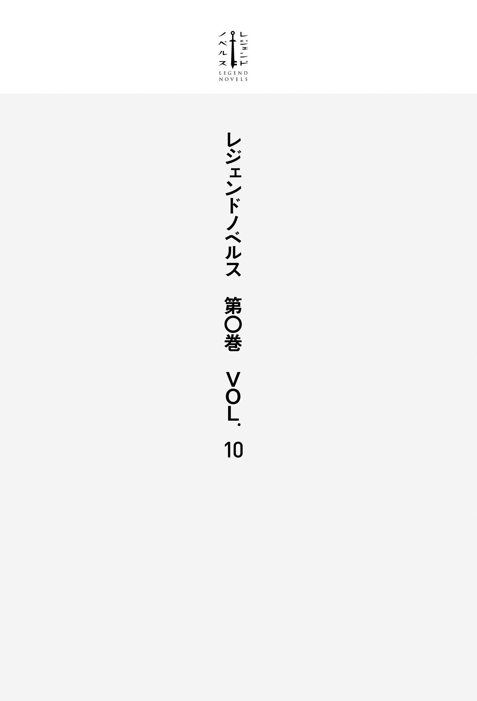

| レジェンドノベルス第０巻 ＶＯＬ．１０ ２０１９年７月版 | |
| ずくなしひまたろう & 支援ＢＩＳ & Ｓｙｏｕｓａ． & 宮澤花 | |
| 講談社 (2019) | |
本作品は、縦書き表示での閲覧を推奨いたします。横書き表示にした際には、表示が一部くずれる恐れがあります。
ご利用になるブラウザまたはビューワにより、表示が異なることがあります。

オークの軍勢が丘の上に陣取っていた。
彼らの身長の何倍もの長さの
この異世界に召喚されて一週間、早くも俺は敵軍との決戦に挑もうとしていた。
オークどもはほかの異世界で見てきたそれと大差ない外見をしていた。人間の胸ほどの背丈の小柄な、しかしがっしりとした体と、猿と豚を掛け合わせたような凶悪な顔。下顎から突き出た牙からは
俺を召喚した神官たちによれば、この世界のオークは悪神がこの世に生み出した邪悪な生物で、「力も
まあ、数が多いだけの敵ならいくらでもやりようがある。何しろ俺は十二の異世界を救ってきたベテラン勇者なのだ。この世界を救うのもそう難しいことではないと気楽に考えていた。
＊
そうして鼻歌交じりでやってきた俺の目の前に現れたのは、
だが、どう見てもあの動きは高度に統率された〝軍隊〟だ。
同じ数でも脅威度は格段に違う。犬程度の知能しか持たないケダモノが数を頼りに押し寄せてきているだけと聞いていたのに、いきなり話が違うじゃないか。雑魚の群れを勇者の力でもって蹴散らしてやればいいものだとばかり思っていたのに。悪神とやらがあのオークたちを統率しているのだろうか。最初に話を聞いた感じでは、実在するというよりは神話上の存在のような印象を受けたんだが。
まぁ、ここも異世界だ。神が実在したとしても別におかしくはない。過去の異世界では殺したことだってある。それにしても、これだけの数を操ることができる存在がいるとしたら、それは恐るべき力の持ち主に違いない。
そいつを討伐することが、この異世界における勇者としての俺の使命になりそうだ。困難ではあるとしても、不可能ではないだろう。むしろ勇者の使命としては分かりやすくていい。
「こちらにおられましたか」
馬をこちらに寄せながら声をかけてきたのは、〈銀剣
このいつも礼儀正しい老騎士は俺の隣に馬を並べると、面頰も上げずに話しかけた非礼を俺に
「何しろ、
彼は非常に信仰が
今回は早々に彼のような有力者の支持を得られたのだから、まったく
「勇者殿。まもなく始まります。本陣までお戻りを」
リーゲル殿に促されて振り返ると、我らが人類の軍勢、オーク討伐のための諸侯連合軍がようやく戦闘態勢を整えつつあった。
ついさっきまで俺たちをもっと前に配置しろだとか、どこそこの連中が俺たちの右側にいるのが気に入らないだとか、誰それが盾が当たったの当たらないので決闘を始めたとかで大騒ぎしていたのだ。
彼らの頭上にはそれぞれに異なった意匠の紋章が描かれた百を超える旗が翻っている。その下には板金を重ね合わせたラメラーアーマーのような
数にしておよそ三千五百騎。この世界の〝馬〟は、俺の世界のそれよりもかなり大きくがっしりとした重い
それに
真っ赤な鎧を着たひときわ派手な装いの騎士が隊列の前に出て、手にした剣でほかの騎士たちの盾を
その後ろには歩兵がほぼ同数、
隊列の間隙を縫って本陣へ馬を進めながら、リーゲル殿に尋ねる。
「敵のほうがだいぶ数が多いようですが、大丈夫でしょうか」
「こちらもこれだけの数がおりますからな。本来であればあれしきの数、どうということもありますまいが......」
俺は心配事があるらしく口ごもる老騎士に続きを促した。
「......おそらく、あれは
「神官たちは、オークは知能を持たないケダモノだと言っていましたが」
「奴らは、こと戦にかけては非常に知恵がまわります。神官どものたわ言を真に受けて、油断なさりませぬよう」
リーゲル殿から神殿に対して批判的な言葉が漏れたのは意外だった。まだ短い付き合いだが、彼が食事の前の祈りを欠かしたところを見たことがない。祈りの言葉を口にするその顔はいつも真剣そのものだ。
「意外ですね。あなたがそんな風に言うなんて」
リーゲル殿は苦い声で答えた。
「
なるほど。
斥候を出せればいいのだが、丘の右手には森、左手には湿地が広がっており、丘の向こうの様子を探るすべはなかった。
「我らの竜がいれば、伏兵の有無も一目瞭然だったのですが」
リーゲル殿が悔しそうに
繁殖期に入ると、すべての竜は〈竜山〉へ集まる。今頃は伴侶探しに励んでいるんだろう。おかげでリーゲル殿の自慢の竜騎士団はただの騎兵としてこの戦に参陣する羽目になっていた。
もっとも、貴重な竜騎士をただの騎兵として消耗するわけにもいかないので、彼らは戦儀神官たちの護衛として本陣で待機することになっている。
「とはいえ、こうして諸侯の軍勢を集めて敵と
姫殿下というのは、今回の軍役の総大将であるリアナ姫のことだ。〈姫騎士〉殿下の二つ名で、若くして諸侯の信望を集める彼女であるが、王家と領主たちの関係にひどく難しい部分があるのはどこの世界でも同じらしい。
プォォォォオ！
大きな角笛の音が響く。
「準備が整ったようですな」
俺たちは本陣へと馬を急がせた。
＊
俺たちの背後で、千人を超える神官たちが声を合わせて詠唱を開始した。独特の抑揚をつけて唱えられるそれが、聖歌か何かのように戦場に響く。その声の高まりに合わせ、彼らの足元の魔法陣が青く輝き始めた。これは騎士たちの盾に貼られた護符に魔力を送り込み、飛び道具を防ぐ魔法障壁を張るための儀式だとリーゲル殿が説明してくれた。発動すると護符を中心に半径一メートルほどの円形の魔法障壁が発生する。〈加護の魔法〉というらしい。
やがて、詠唱は低く呟くようなものへと変わっていく。障壁を張り終え、それを維持するための詠唱に変わったのだ。その頃合を見計らって大角笛が吹き鳴らされた。
それにいくつもの角笛が呼応する。
右翼、中央、左翼の三つに分けられた諸侯連合軍がゾロゾロと前進を開始し、歩兵隊がその後に続いた。
今回俺が同行することになっている神殿騎士団はまだ動かない。
竜騎士団と並んで王国最強と目されるこの部隊は予備戦力としてリアナ姫に直率され、機会を見て投入されることになっている。
否、銃のようなものではなく、銃そのものだった。
オークのうちの一匹が──操作を誤ったか、あるいは恐怖に駆られたか──号令を待たずに発砲した。銃口から
その光景に俺の背筋は凍った。
その正面にいた騎士の手前で何かが薄く青く光り、キーンという甲高い音が響く。おそらく魔法障壁が弾をはじいたのだろう。最初の発砲につられるようにオークたちがまばらに発砲を始め、ついになし崩し的に戦列全体が白煙に覆われる。
だがオークの散漫な銃撃は、騎士たちに何らダメージを与えていなかった。煙の合間から、発砲を終えたオークが隊列の後ろ、
もう一度角笛が鳴り、騎士たちがまた少し速度を上げた。それに合わせて地響きのような蹄の音も高まっていく。歩兵隊は少し遅れながらも駆け足で追随している。
彼らが丘の半ばに達したところでオークの第二列が一斉に発砲した。弾丸を受けた魔法障壁がまるで帯のように光り、銃声と、弾丸と魔法障壁がぶつかるギイィィンという耳障りな音とが遅れて響いてくる。
特に強く光った何ヵ所かでは、その後ろの騎士が幾人か馬から転げ落ちていた。あの強い光は、魔法障壁が砕ける際に出るものらしい。背後から聞こえる神官たちの詠唱が
その間も、
そしてあとわずかで敵と衝突しようというその時、オークの第三列の斉射が行われた。
至近距離だ。
青白い強い光が隊列のそこかしこで瞬くと同時に、騎士たちは硝煙に包み込まれて見えなくなる。遅れて響く斉射の
強く吹いた風に煙が吹き払われると、ちょうど騎馬集団の最後尾が稜線の向こうへと消えていくところだった。
丘の上では歩兵隊がオーク軍の残骸に打ちかかっていた。丘の上のオークたちはまだ数では勝っていたが、もはや完全に戦意を喪失していた。悲鳴を上げながら逃げ惑うオークたちを歩兵たちが追い回し、一方的に打ち殺していく。まさに惨劇。丘はあっという間に血で染まっていった。
丘の向こうからは、新たな敵の発見と突撃の継続を知らせる角笛が響いていた。それを聞いたリアナ姫の表情が硬くなる。
「戦況を確認する！ 神殿騎士団は稜線まで前進せよ！ 勇者様は私と一緒に──」
そう言いながら姫殿下がこちらへ顔を向けた瞬間、丘の向こうで轟音が響いた。その音は先ほどの銃声とは明らかに違っていた。
あれはおそらく大砲の発射音だ。リアナ姫の顔面が
「あれ程言っておいたのに......！」
その真っ白な唇から呟きが漏れた。
丘の向こうから今度は銃の一斉射撃の音が響く。続いて第二射。もはや、〈加護〉を維持するための低い詠唱を続けている神官はいなかった。すべての魔法障壁が打ち破られたのだ。神官たちは顔に強い疲労の色を浮かべながら、てんでバラバラに加護を張りなおすための詠唱を始めている。
さらに三射目の轟音。
そのすぐ後に、騎馬と歩兵がぶつかるあの不快な音がようやく響く。
「急げ！」
リアナ姫の叫びとともに、俺たちは丘の上へと急いだ。
一足早く丘の上に駆け付けたものの、眼下の戦場は硝煙に覆われ何も見えなかった。繰り返し聞こえる銃声と馬の
少しの間をおいてリアナ姫が神殿騎士団とともに追い付いてきた。少しずつ煙が薄れ、視界が開け始める。
最初に目に入ったのは、射撃で打ち倒されたのであろう騎士たち。その先には馬にひき潰されたオーク兵。そこにも若干の騎士たちが混ざっている。そのさらに先には惨状が広がっていた。丘を下った先の平野にはオーク軍の無数の方陣が斜め格子を描くように整然と並んでいた。我らが騎士の猛然たる突撃はそのいくつかを粉砕することに成功したようだ。だが、それによって彼らは敵陣の真っただ中に突出する形となり、騎士たちは半ば包囲されてしまっている。
方陣の中にはそれぞれ多数の銃兵が配置され、近づこうとする騎士たちに盛んに銃撃を浴びせていた。その様はまるで無数の小型火山が噴火しているかのようだった。小柄なオークからは騎乗した人間を見上げる形になるため、オークの銃兵たちが同士討ちを気にする必要はあまりないらしい。そしてその火山には鋼の
方陣の縁では馬を失った騎士が長槍に滅多打ちにされていた。
指揮官はすでに打ち倒されているのだろう。人類側の統率は乱れきっていた。その場でただ右往左往する者。破れかぶれに敵陣に切り込む者。煙に巻かれて方向感覚を失っているのか、方陣の間隙を縫って敵陣のさらに奥へと迷いこむ者。
方陣が火を吹くたびにそれらがバタバタと倒れていく。すでに半分以上が
「退却の角笛を鳴らせ！」
キュイイイイイイイ！
リアナ姫の指示で、即座に甲高い角笛が吹き鳴らされた。
だが時すでに遅し。
彼らの背後では、一度は打ち破られたはずのオークたちが再び寄り集まり、粉砕された隊列を再び組み上げつつあった。あれが完成すれば、もう彼らに逃げ場はない。
「詠唱はじめ！」
姫が発したのは耳を疑う号令だった。だが、忠実なる神殿騎士たちは異を唱えることなく、突撃に備えて詠唱を開始した。
さすがにこれには口を挟まずにはいられなかった。
「殿下、もう手遅れです」
「分かっています。ですが、わずかな数であっても救えるならば、私は戦わねばなりません」
「引き換えに神殿騎士団は全滅するでしょう。釣り合いません」
「神殿騎士団の再建には十年以上かかるでしょうね。ですが、ここで一滴の血も流さずに彼らを見捨てれば、王家は諸侯からの信望を失います。それは我々人類のまとまりが失われるということと同義です。人類が再び相争う時代に戻ってしまえば、百年以上の時が失われます。だから、私はここで血を流さねばなりません」
これはずっと先を見据えての決断か。
こうであればこそ、若い女の身でありながら諸侯の軍勢を束ねる〈姫騎士〉たり得たか。あの
それでも、彼女の決断はおそらく正しい。
ならば私も共に参りましょう、という言葉をグッと飲み込む。この世界で俺がどれだけの力を振るえるのか、その確認がまだ十分にできていない。ゲームに参加するのは、自分の手札をよく確かめてからだ。
「勇者様は本陣に戻り、すぐに神官たちを連れて離脱するようリーゲルに伝えてください」
「......ご武運を」
「勇者様にもご武運が長く続かんことを。どうかこの身に代わって人類を御救いください」
「はい、必ずや」
「それから、弟のことも」
俺が再びうなずくと、彼女は安心したように
それから敵の方へ向き直ると、再び号令を発した。
「突撃！」
満面の笑みを浮かべながら。
純白の鎧を身にまとい光の盾と光の槍を携えた騎士たちが、火と鉄が吹き荒れる嵐の中を目指して丘を駆け下っていく。
それを見送りながら俺は途方に暮れていた。
いったいどうやってこの世界を救ったものか。
＊
あの日、高校受験を間近に控えた俺は「突然異世界に飛ばされて勇者になれたりしないかなぁ」等と愚にもつかないことを考えながら椅子の上で伸びをした。そして、突然そのとおりになった。
何者かの肯定的な雰囲気を感じた瞬間、俺は水の中に落下した。
幸いにも水は浅く、すぐに飛び起きた俺の目の前に全裸の少女がいた。彼女は水の
厳しいが、素晴らしい冒険だった。
そして、世界を救い終わり、水の巫女と結ばれようとしたその晩に、俺は元の世界に戻された。
ありがたいことに俺は浦島太郎にはならなかった。元の世界では半年ほどしか
そして入学試験の期日もとうに過ぎていた。
以来十年、俺は気配以外何も感じさせない正体不明の存在によって、度々異世界に送り込まれてはそれを救ってきた。
そして今いるこの異世界は、俺にとって十三番目の異世界ということになる。
＊
俺たちは、石畳で舗装された街道を北へと進んでいた。いや、退却しているのだから戻っていたというべきか。馬も人も疲れ切った表情で地面を見つめながら、足を引きずるようにして歩いている。無理もない。昨日の敗戦以降、不眠不休で行軍を続けているのだ。
それでも歩き続けられるのは敵の追撃が怖いからにほかならない。オークどもは人間を捕まえると、生きたままその肉をそぎ落とし、本人の目の前でうまそうに
街道は放棄されて久しいらしく石畳もガタガタになっていたが、それでも荒野を進むよりずっと進みやすかった。おかげでずいぶんと距離を稼ぐことができたが、それは敵も同じことだろう。
幸いにも、まだ敵勢には追い付かれていない。振り返ってみても、
会戦以来、リーゲル殿はずっと沈み込んでいた。敗戦そのものよりも、リアナ姫を守れなかったことが応えているらしい。彼は、まだ姫が幼かったころに
「......本隊が丘の向こうで壊滅したのは、不幸中の幸いでしたな」
リーゲル殿が自嘲気味に呟いた。
「えぇ、そうですね」
もし、あの
おそらく本陣の非戦闘員は恐怖に駆られててんでバラバラに逃げ出し、大部分はあの戦場からそう遠くないところで捕捉されてしまっていただろう。
だが、幸いにもそうはならず、秩序を保ったまま退却に移ることができた。リーゲル殿の冷静な指揮あってのことだが、幸運に助けられたのも確かだ。神官たちはある意味騎士より貴重な存在だ。これをほとんど無傷で離脱させられたのは大きい。食料をはじめとした荷物の大部分を置き捨てる羽目になったが、こちらは諦めるしかあるまい。
敵の追撃が遅れているのは神殿騎士団の活躍のおかげだった。
諸侯連合軍の生き残りによれば、それはもうすさまじい戦いぶりだったようだ。
〈光の槍〉を振るいつつ敵陣に突入した彼らは、たった五百騎で三つの方陣を壊走させ、敵の本陣を強襲すべくさらに奥へと突進を続けた。しかし、多勢に無勢。敵の死体を踏み越えるごとに彼らの勢いは失われていった。さらに二つの方陣を潰したところで力尽き、その軍旗とともに敵の群れの中に
そして、その混乱を突いて百騎余りの騎士たちと、歩兵隊のうち、負傷者を救護するため丘の上に留まっていた者たちが離脱に成功した。
もっとも、その報告はリーゲル殿の気持ちをますます沈ませた。何しろ、彼が守るはずだった姫の死によって、自分たちが守られる結果になったのだから。
彼女はどんな最期を迎えたのだろうか。オークに捕まった女性には、男とは違った意味で悲惨な運命が待っているという。武人にふさわしい最期であったことを願わずにはいられなかった。
後方から警告の声が上がった。
振り返ると、先ほど通過したばかりの森の中から奇妙な動物が飛び出してくるのが見えた。一見すると
ざっと見たところ百騎ほど。ついに奴らの
殿を務めていた敗残の騎士たちが浮足立っているのが見えた。ちょうどいい、ここは一つ勇者の力を試してみるとしよう。この世界の敵に、俺の力がどれだけ通用するのか確かめるいい機会だ。
「リーゲル殿、助太刀して参ります」
「お気を付けを！ 奴らは短い銃を持っておりますぞ！」
リーゲル殿の警告を背に受け、馬を走らせながら〈光の盾〉を発動する。
これは神殿騎士たちが使っていた魔法だ。俺は魔力の流れや、発現方法を直感的に理解できる。おかげで、その世界の魔法の類のほとんどを、一度見ただけで使えるようになるのだ。これも俺を異世界に送り込む謎の存在から与えられた
全速力で馬を駆り、慌てて横隊を組みつつあった騎士たちを飛び越えてオークたちの前面に躍り出る。真正面にいたリーダーと
キィーン！ という金属音が響き、〈光の盾〉が銃弾をはじく。
周囲のオーク騎兵たちが俺を半ば包囲するように動きながら銃口を向けてきた。俺は両腕に〈光の盾〉を発動させ、発砲を待ち受ける。次の瞬間、左右併せて十発近い弾丸を受け止め、〈光の盾〉が激しく明滅した。同時に耳障りな金属音が響き、光とともに俺を幻惑する。
だが、耐えきった。
俺の無事な姿にオークたちは明らかに動揺していた。チャンスだ。
右手の〈光の盾〉を解除し、代わりに〈光の槍〉を発動させる。それを一番手近にいたオーク騎兵に投げつけた。槍は狙い違わず命中し、そいつの心臓を胸甲ごと撃ち抜いた。
さらに俺はもう一本の槍を出現させると、先ほどの片目のオークを捜す。そいつはすでにこちらに背を向け、発砲を終えたほかのオーク騎兵とともに後退しようとしていた。ほんのわずかだが、奴らのほうが足が速い。距離を取って再装塡するつもりだろう。
そうはさせるものか。その背を追いながら俺は槍を投げつけた。槍は光の軌跡を残しながらまっすぐ奴に向かって飛んでいく。
命中する直前、片目のオークが体を
追い打ちをかけようとしたところで、両翼にいたオーク騎兵たちが片目のオークとの間に割り込むように駆けてくるのが見えた。
とっさに手にした槍を新手のオーク騎兵に投げつけ、再び両手に〈光の盾〉を発現させる。投げた槍は敵の頭をかすめて飛び去った。その直後に新手のオークたちの半分が一斉に発砲した。
先ほどの倍近い命中弾を受けた〈光の盾〉は、さすがに耐えきれず砕け散った。それと同時に大量の魔力が吸われていく感覚。会戦のときに、神官たちがやけに消耗していたのはこれか。どうやら〈光の盾〉は粉砕されたときに大量の魔力を失うらしい。
残りのオークたちは、
振り返ってみると、味方はまだ遥か後方にいた。これ以上味方から離れるのはまずい。もう潮時だろう。速度を落としてオークたちから距離を取る。
オークたちが再び森の中に消えていく。
俺は馬を止めて味方が追い付いてくるのを待った。ひとまず追い払うことはできたが、大した被害は与えられていない。そのうちまた仕掛けてくるだろう。
＊
味方と合流した俺は、喝采とともに迎えられた。
「さすが勇者殿！ 見事な戦いぶりでした！」
「あれだけの数の敵をたった一人で撃退なさるとは！」
「一騎当千とはこのことですな」
騎士たちは俺を取り囲み、口々に称賛の言葉を浴びせてきた。リーゲル殿にとっても、俺の戦いぶりは予想以上だったようだ。
「見ておりましたぞ。これほどの力をお持ちとは！ さすがは神に選ばれた御方ですな！」
「大げさですよ。仕留められたのは一匹だけです」
「過ぎた謙遜はかえって嫌みになりますぞ。祝福された装具もなしに魔術を使えるのは神殿騎士のうちでも一握りのみ。あれだけの被弾に耐えられる盾を出せる者は、装具があっても一人もおりませなんだ。そのうえ〈光の槍〉を投げる
なるほど。俺の魔力も、いつもどおり世界の平均から見てチート級に強化されてはいるらしい。
「あの〈黒犬〉も、勇者殿の力を見て逃げ出したのでしょう。確かにささやかな勝利ではあるかもしれません。しかし、おかげで皆に希望を取り戻すことができました」
確かにあの敗戦の後であれば、小さな勝利であっても大げさに喜びたくなる気持ちは分からないでもない。もっとも、俺はちっとも勝った気がしていなかった。せいぜい引き分けといったところだろう。
「ところで、黒犬ってなんです？」
「なるほど、勇者殿はご存じなかったでしょうな。先ほどの黒いクチバシ犬に跨っていたオークのことです」
あの片目の奴か。そして、あの獣はクチバシ犬というらしい。
「オークどもの将軍のうち、最も
オークの英雄ということか。道理で
「もしかして、オークたちが銃を使い始めたのは、あいつの出現と同時期だったりしますか？」
「いえ、銃自体はずいぶん昔から使われておりますな。吾輩の若い時分には大した数もなく、加護の魔法も破れない、大きな音で馬を驚かすだけの代物でしたが......。今ではあのとおり、我々にとって大きな脅威となっております」
俺の気分は沈んだ。これは厄介だ。
オークどもはチート的存在から銃を手に入れたわけではなく、自分たちであれを発明し、発展させてきたらしい。
今まで救ってきた異世界では、人類は地力では敵に勝っていた。
にもかかわらず、それらの世界が滅びかかっていたのは何かしらの特異な存在──恐るべき魔力を持った魔王、突然変異の大魔獣、世界を滅ぼす威力の古代兵器といった類のモノ──が出現したからだ。だからそれをどうにかできればその世界を救うことができた。それが俺の仕事だった。
だが、今度の異世界はどうも勝手が違う。
どうやら今回の敵は特異な存在に頼るまでもなく、地力において人類を圧倒しているらしい。数だけじゃなく、おそらく技術力においてもだ。
文明的な意味で完全に負けている可能性が高い。何しろ、あれだけの数の銃と兵士を一つの戦場に集めることができるのだ。もはや俺一人が無双したところでどうにもなるまい。そもそも、今日の苦戦ぶりを考えれば、無双と言えるほど暴れられるかすら怪しい。
ここは一つ、知識チートで人類を強化するのはどうだろうか？
却下だ。それは以前に試したことがあった。
結果は散々だった。単純な構造に見える火縄銃だって、冶金技術をはじめとした様々な技術の集大成なのだ。大まかな構造を知っていればどうにかなるようなものじゃなかった。その世界に前提となる基礎技術が集積されていなければ話にならない。
うろ覚えの知識で作らせた鉄砲の試射で、鍛冶見習いの少年の腕を吹っ飛ばしてしまったことを俺は忘れていない。
そして基礎技術そのものを異世界に持ち込むのはもっと困難だった。何しろ現実世界での俺は、何ら特別な知識も技能も持たない、中卒無職のプータローにすぎないんだから。
結局のところ、俺にできるのは正体不明の存在から与えられたチート性能を頼りに剣を振り回すことだけだ。大体の場合、内政チートしようとするより、与えられた力でもって敵の頭を刈るほうが手っ取り早かった。どの世界もそうやって救ってきた。これに関しては異世界十二個分の経験を積んでいる俺だ。誰にも負けない自信がある。
だとしたらやるべきことは一つ。死ぬまで戦い続けるのだ。そう、死ぬまでだ。
不意に背後に正体不明の存在の、期待に満ちた気配を感じた。〝大丈夫。君ならできる〟......とでも言いたげな雰囲気だ。無責任な奴らだ。ちくしょうめ。
ふと異世界で死んだらどうなるんだろうという疑問がよぎる。不思議と今までは考えたことがなかった。なんとなく自分は死なないと思い込んでいた。勇者だから大丈夫だろう、と。
怖いとは思っても死ぬとは思わなかったのだ。ジェットコースターに乗っているような感覚。むしろ、なんで今回に限ってこんなことを思いついたのやら。
まぁ、考えるだけ無駄だな。
死後にどうなるか分からないのは、異世界に限ったことじゃないんだし。
──〈竜の
毛なし猿どもから〈黒犬〉と呼ばれているオークは、
周囲にいた部下たちがすかさず支えてくれたおかげで、どうにか倒れ込まずに済んだ。どうやら思っていた以上に血を失っていたらしい。脇腹に走る鈍い痛みに顔をしかめる。
鋼鉄製の胸甲の脇腹がきれいな半円形に削り取られていた。急所を外すことができたのはまったくの幸運だった。もし、落馬した部下を確認するために体を捻っていなければ、あの光る槍に心臓を撃ち抜かれていただろう。
正直なところ彼は油断していた。先の大会戦では敵に致命的な打撃を与えたのだ。もはや、敵に戦意など残されていないと思い込んでいた。
確かに微かな違和感はあった。もっと早く気づくべきだったのだ。
なぜあいつらはあれ程の敗北の後、これほど迅速に撤退できたのか。あの毛なし猿が単騎で切り込んできたのも、死にたがりが破れかぶれになったのだろうとしか思わなかった。ところがどうだろう。〈黒犬〉も部下たちも、あんな戦い方をする毛なし猿に遭遇したのは初めてだった。
光る盾や槍を出す奴らにはこれまでも何度か遭遇していたし、先の大会戦でも多くを討ち取ってやった。だがアイツは、あの白い鎧の毛なし猿どもとは比べ物にならないぐらい強かった。
こちらの斉射は跳ね返された。距離を取っても槍を投げつけてくる。そのうえ、あの光の盾や槍を瞬時に出し入れまでしてきたのだ。化け物というほかない。
だが、部下の何人かは最後の斉射で奴の盾が砕けたのを見たという。さらに戦闘を続行すれば、あるいは仕留められたかもしれなかった。
〈黒犬〉はかぶりを振ってその考えを追い払う。
奴の背後ではすでに敵の装甲騎兵どもが戦意を盛り返し、態勢を整えつつあった。あれと正面からぶつかり合えば、部下たちに少なくない被害が出ていただろう。確かに奴を討ち取る可能性はあったかもしれないが、部下たちの命を賭けるにはあまりに不確実だった。
狼鷲兵は貴重だ。狼鷲は卵から
そしてなにより、彼は部下たちを愛していた。
自分が無傷であればまた違った判断を下していただろう。だが、自身が負傷し、十分な指揮を執れない状況で、部下たちを未知の脅威にさらすなど、彼にとって耐えがたいことだった。
あるいは、歩兵が一個中隊もいれば違っていたかもしれない。
（辺境伯のドラ息子が余計な口出しをしてこなければ歩兵隊も帯同できていたものを......）
〈黒犬〉は内心で呪ったが、今となってはどうにもならないことだった。
ほどなくして、偵察に出ていた一隊が先ほどの戦闘で戦死したオークを連れ帰ってきた。討たれたのは、〈黒犬〉の妹婿だった。立派な青年で、村でも一、二を争う乗り手だった。夫婦仲もよく、今度の遠征に出る直前に初めての子供を授かっていた。妹へ出す手紙のことを考え〈黒犬〉の心はさらに沈んだ。
何としてでも
いかに奴とて不死身ではないはずだ。十分な備えさえあれば必ず討ち取れるだろう。なにより、アイツが彼の野望の最大の障壁になるであろうことは明らかだった。いや、むしろ格好の足掛かりというべきか。
いずれにせよ、次には討ち取ってみせる。彼が仲間を率いて戦場へ身を投じるのも、その野望のためなのだから。
＊
大きな森を抜けたところで歓声が上がった。誰もが、これまでの疲れを忘れたかのように喜び、はしゃいでいる。
目の前には巨大な山脈が壁のようにそそり立っていた。まだずいぶんと距離があるはずなのに、見上げるようにしなければその頂を見ることができない。この山を徒歩で越えることはまず不可能だろう。もちろん、彼らはそんな大絶壁を見て喜んでいるわけではない。
皆が指差すその先にあるのは、山脈が折れ曲がり、重なってできたわずかな谷間、そこに築かれた門。通称〈竜の顎門〉。
人類世界とオークを隔てる天然の境界線である〈竜骨山脈〉に開けられた唯一の通り道だ。
俺たちはとうとうゴールを目にしたというわけだ。
「皆の者！ 気を抜くな！ 犬どもはまだ我らの臭いを嗅ぎ回っておるのだぞ！」
リーゲル殿が皆を引き締めにかかったが、その声にも隠しようのない
〈竜の顎門〉は、城塞というよりは巨大なダムだった。遠目にはそれほど大規模な城塞には見えないが、それは背景の〈竜骨山脈〉があまりに大きいために起きる錯覚だ。間近に見ると、先の印象とは逆に、その高く分厚い城壁のもつ質量に圧倒される。出陣の際にリーゲル殿に聞いたところによれば、谷を塞ぐ防壁の幅は約一・二キロメートル、厚さは最大で四十メートル、高さは最も高いところで二百メートルにも及ぶという。まるでコンクリートか一枚岩から造られているように見えるが、実際は石を積み上げて造られているらしい。その
この大防壁の向こう側には山脈から流れ込む雪解け水を
伝説によれば、まだ人類が世界の大部分を支配していた時代に、偉大な魔導師が巨人を使役して造らせたという。
真偽は不明だが、魔法の介在なしにこんなものを造り上げるのは困難だろう。もしかしたら、そいつも俺のような異世界人だったのかもしれない。俺にはこんなもの造れないけど。
この要塞を最強の要塞たらしめているものはその地下に存在している。それは
オークにあれだけ差をつけられながらも、この世界の人類の危機感が今いち薄いのは、たぶんこの〈竜の顎門〉があるせいだろう。こちらには無敵の要塞があるんだから、外で多少負けたところで直ちに危険はないというわけだ。
だが、こうして俺が喚び出されている以上、この世界の人類は滅びの危機にさらされているはずだ。見かけほど安心できる状況じゃないのは間違いない。
＊
〈竜の顎門〉の守備隊長が門まで出迎えてくれた。
名は確かエベルトといったはずだ。貧農から武功を挙げて今の地位まで上り詰めた立志伝中の人物で、守備兵からの信頼も篤いという。召喚されたときにも一度顔を合わせているが、快活に笑う気さくな老人だった。
そのエベルトの表情がすっかり硬くなっていた。
「お早いご帰還ですな。......殿下はいずこにおられるのでしょうか？」
俺たち一行をぐるりと見回した後、彼はおそるおそる尋ねてきた。
彼はリアナ姫がまだ幼かったころに、リーゲル殿とともに守役をしていたと言っていた。そして今でもリアナ姫の熱烈な信奉者の一人だった。出陣のときも、俺の手を取ってどうか姫を守っていただきたいと──（『殿下は確かに類いまれなる軍才をお持ちだが、どうも危険に無頓着なところがありましてな。いかにも、将たるものが勇気を示せば兵は奮い立ちましょうが、それにしても限度というものが......勇者殿！ 殿下をお守りください！ 神はそのために勇者殿をお遣わしになったのでありましょう？ どうか殿下を......』
リーゲル殿は黙り込んでしまった。
もっとも、答えを聞かずとも、あまりに数の少ない騎士、負傷者ばかりを乗せた荷車、疲れ切った神官たち、なによりリーゲル殿の表情を見れば、何が起きたかはすぐに察したはずだ。
それでも、確認せずにはいられなかったのだろう。
彼は努めて陽気な声で続けた。
「さては、殿下は神官たちだけ送り返して、追撃の指揮を執っておるのですな？ 神官どもを連れていては迅速に動けませんからな！ それでももうじきお戻りになるのでしょう。門を開けたままにしておいてもよろしいですかな？ 何しろこの大門は一度閉じると、再び開くには一苦労......」
リーゲル殿が、絞り出すような声でそれを遮る。
「殿下はお戻りになりません。まもなく奴らが追い付いてきましょう。門は閉じられよ」
「では、姫殿下は......」
「......まことに、面目ない」
それきり、二人の老人はうなだれたまま沈黙した。
＊
俺たちは丸一日〈竜の顎門〉に留まり、体力を回復させてから王都に向かうことになった。
この三日間にわたる不眠不休の行軍は神官たちや従者たちはもちろん、王国の精兵たる竜騎士たちにとっても、厳しいものだったからだ。
屋根と壁がある部屋、そして温かい食事！ いずれも質素なものだったが、それでも至高の
翌朝、兵舎の中を守備兵たちが慌ただしく走り回る音で目が覚めた。手近な一人を捕まえて尋ねてみると、オークの軍勢が谷の出口に出現し非常呼集がかかったとのことだった。俺はその兵士に礼を言うと、簡単に身支度を整え守備隊長らがいるという
見張塔にはすでにリーゲル殿がおり、オーク軍を
エベルトは、俺の到着に気づくとこちらに丁寧に一礼した後、すぐに敵に視線を戻した。その鋭い目つきは、昨日の悲嘆にくれた老人と同一人物とは思えなかった。
「この城壁にオークどもが押し寄せるのを、この目で見ることになろうとは」
エベルトが
「面目ござらん」
「リーゲル殿を責めているわけではござらん。しかし、これほどの数とは......貴卿らの報告を疑っていたわけではないのですが、この目で見るまではにわかに信じられませなんだ」
オークの大軍が、谷の出口にほど近い森の中から続々と湧き出ていた。先頭はすでに谷の出口に布陣しつつあり、それ以上先に進む様子はなさそうだった。
「谷を塞ぐつもりか。ここまで攻め寄せてきたなら、押し流してやったものを」
エベルトはオークたちを睨みながら言った。
「これでは、残りの討伐隊の帰還は難しいでしょうな」
「ふん、殿下の召集に応じず、私腹を肥やさんとした不忠者どもにはふさわしい末路じゃわい」
「しかし、これでは今年の収穫はかなり厳しいものとなりましょうな。民が飢えることは殿下も御望みにはならんでしょう」
リーゲル殿が
「リーゲル殿、我々のほかにも討伐軍がいたんですか？ あと、収穫ってなんです？」
「勇者殿はご存じありませんでしたか。それでは吾輩から説明いたしましょう」
「よろしくお願いします」
「そもそも、オークというのは、世界創世の折に悪神によって生み出された邪悪な存在です。ですから、それを討伐するはすべての騎士の義務であるとされております。領主たちは徳を積み名誉を得るため、各々の領地で討伐隊を結成し、オーク討伐に向かうのです」
「なるほど。さっき言っていた残りの討伐隊は、そういう個別の部隊のことですか」
「さようでございます。かつてはオークどもも荒野の遥か南にしかおりませんでした。しかし、ここ百年で奴らは大きく北上し、今や山脈から数日の位置に集落を構える奴らも現れております。どうにかしてオークどもの生存圏を南へ押し下げる必要があります。今や討伐は騎士にとって最も重要な義務といっても過言ではありますまい」
「それで、収穫とは？」
「実際のところ、名誉や徳なんぞのためだけなら誰も動かんわけです。軍勢を集めるだけでも金がかかりますからな」
エベルトが口を挟んできた。
「領主どもの目当てはその収穫のほうでしてな。オークどもを討伐するついでに、奴らが集落にため込んでいる食料やら何やらを奪ってくるのですよ。そしてこの収入が馬鹿にならないほど大きい。かくいう私も、それで身を立てたのでしてな」
まぁ、そうなるよな。リーゲル殿の説明が続く。
「むろん、オークどももただで我々に差し出してはきません。数を集めて抵抗してくることがございます。そのような場合に、討伐隊を束ね打破するのが王家の役割です。
ここでリーゲル殿はため息をついた。
「結局集まったのは半分ほど。その間に我らの竜は竜山に飛び去ってしまいました」
余談だが、俺が召喚されたのはこの部隊集結の最中だったらしい。つまりこの世界の奴ら、略奪の手伝いをさせるつもりで俺を喚び出したってことか。
まぁ、もっとくだらない理由で召喚されたことだってある。あれは確か四番目の異世界だったか。あの時は、なくしものを捜すために〈お手伝い魔神〉を召喚しようとしたら俺が出てきたとか言ってたな。
だが、召喚者の意図がどうであれ、俺が喚び出されるところには必ず世界の危機が潜んでいる。そして、その召喚者が目的を達しようがしまいが、世界の危機をどうにかするまで俺は帰れない。あいつらのなくしものも結局最後まで見つからなかった。
なるべく早く片付けて元の世界に帰りたいところだ。今度で十三度目の失踪だ。今さら母も心配はしないだろうが、あまり長くかかるといろいろ不都合があるのだ。
母がとうとう俺に愛想をつかして、俺の自室を空っぽにしてしまわないとも限らない。
あの部屋を片付けられてしまえば、俺は居場所がなくなってしまう。それは大変困るのだ。
さて、話がそれた。
「それで殿下の召集に応じなかった討伐隊が、あの軍勢の向こうに取り残されているわけですか」
「さようです。まぁ、当然の報いと言っていいでしょうな。奴らが殿下のもとに
エベルトは憎々し気に言った。だが、それはどうだったろうか。たとえこちら側の数が倍になっていたとしても、あの状況で勝てたとは思えない。
谷の出口の方から、小さな銃声が響いてきた。目を凝らしてみたが発砲地点は分からなかった。おそらく、ここからは死角になっているんだろう。
取り残された討伐隊が、何も知らずに帰還してきてオーク軍と遭遇したんだろうか。あるいは、強行突破を試みているのかもしれない。
「我らにできることは何もありますまい。一刻も早く王都に帰還し、事の次第を報告しましょう」
リーゲル殿に促され、俺は出発の準備をするために階段へ足を向けた。
〈竜の顎門〉への到達を
俺とリーゲル殿は、主だった神官たちと数名の護衛を引き連れて王都への道を急いだ。
王都までの道のりはいたって平穏だった。
途中いくつかの村を通過したものの、どの村でも歓迎を受けることはなかった。住民たちは戸口を閉ざして家の中に引きこもり、窓や扉の隙間からおそるおそるこちらを
退屈な道すがら、リーゲル殿に以前から一人で転がしていた考えを話してみた。
「オークと和睦することは可能でしょうか？」
それを聞いたリーゲル殿は理解不能な物体を見るような目で俺の顔を見つめていたが、少しの間を挟んで疲れた顔で答えた。
「お戯れを。異界のユーモアは老体には難しゅうございます」
どうやら彼はこれを冗談と解釈したようだ。
「真面目な話です」
リーゲル殿の目つきが、こちらを気遣うものにかわった。
「勇者殿、王都まであと一息です。王都に着きましたら存分にお休みいただけますので、どうか今しばらくのご辛抱を」
「疲れているわけでもありません」
いよいよリーゲル殿の表情に疑念が浮かび始めた。こちらの目をじっと
「......勇者殿、あれは邪神によって生み出された邪悪な生き物です。和睦など到底結べますまい。そもそも、そのような知性があるかどうかも疑わしい」
「奴らの知能を甘く見るなと警告してくれたのはあなたでしょう。それに、今回の戦の様子を見る限りかなりの知能がありそうです。交渉は可能かもしれませんよ」
「それはあくまで戦についてのこと。狼どもとて、狩りにおいては連係し統率された動きを見せますが、それを以て狼に知性があるとは言えますまい。まして獣と交渉するなどあり得ましょうか」
いやいや、オークたちのあれはそういうレベルじゃなかったぞ。反論しようと口を開きかけた俺を遮り、リーゲル殿はさらに続ける。
「むろん、奴らを見くびり、その能力を過小評価するのは愚かなことです。ですが、それはあくまで戦場でのこと。戦に強いからといって、我ら人類と同等の存在等と考えるのはまったくの誤りです。なにより、あの汚らわしい邪悪な生き物の存在を許すなど、考えるだけでもおぞましい。あれを討ち滅ぼすことこそ、神から与えられた我ら騎士の使命なのですからな！」
目が本気だ。オークについてほかより冷静な評価をしている人物だと思っていたが、本人も言うようにそれはあくまで「戦場での話」でしかないらしい。いずれにせよ、この話を続けてもいいことはなさそうだ。
「なるほど。それも確かにそうですね」
俺は納得した風にしてこの話を終わらせたが、しばらく気まずい沈黙が流れた。
ややあってリーゲル殿は周囲を見回し、少し離れたところを進む神官たちに目をとめた。そして、彼らがこちらに注意を向けていないことを確認してから、その髭もじゃの口を俺の耳元に寄せ、小声で
「勇者殿のお考えには、吾輩は到底賛成できませぬ。ですが、それはそれとして一つだけご忠告申し上げたいことがございます」
「なんでしょう？」
「今のようなお話、むやみに人に話してはなりませぬぞ。特に、神官どもの前では。たとえ勇者殿であっても、異端と見なされる恐れがありますゆえ」
その目は真剣だったが、同時にいつもの親切な老騎士の目だった。彼は考えの違いはさておいて、それでも俺を心配してくれる。俺はこの老人がますます好きになった。
＊
王都は竜骨山脈の中にひときわ高くそびえたつ〈竜山〉を背にした丘に築かれた王宮と、その麓に広がる城下町からなる。
街を囲む城壁は真っ白な石で組み上げられていた。それは大きく立派で美しかったが、あの〈竜の顎門〉を見た後では少々頼りない。まあ、古代魔法の遺物と比較するのが間違いなんだろう。
到着してからの三日間は礼儀作法の習得に費やされた。
というのも、国王陛下へ先の戦の
どこの世界でもそんなものだ。
奏上の儀に関わる部分だけとはいえ、覚えることは多かった。儀式の大まかな流れに始まり、大広間への入り方、名を呼ばれるまでどんな姿勢で待てばいいか、儀官との受け答えの仕方、様々なことが細々と決められていた。宮廷は俺のために宮廷付の礼法の師範まで派遣してくれた。
もちろん、ただ親切だけで寄こしてくれたわけじゃない。
師範殿──頰に刀傷のある筋骨隆々の巨漢で、礼儀作法よりは剣術を教えるほうが似合いそうな男だった──は、はっきりとこう言ってくれたものだ。
「勇者殿におかれましては、〝完璧な勇者〟として振る舞っていただかねばなりません。これは国王陛下のご要望です」
どうやら俺のこの国での立場が決まりつつあるらしい。
面倒なことばかりだが、こういうことはうまくこなしておくに越したことはない。
それは最初のころに送り込まれたいくつかの異世界で身に染みていた。そういう場での振る舞い方を知らなかったばかりに、貴人たちに軽んじられ協力を受け損ねたこともあったし、怒らせて死にかけたことすらあったのだ。
そうして、〈奏上の儀〉の当日になった。
衣装はリーゲル殿が用意してくれた。着替えを終えた俺を見て、リーゲル殿はなぜか懐かし気に
「竜騎士の礼装です。よくお似合いですぞ。これであれば国王陛下の前に出ても失礼にはあたりますまい」
「ありがとうございます」
俺は礼を言ってから、改めて自分の格好を確認した。濃い灰色の一見地味な服だったが、よく見れば上等な生地に丁寧な装飾が施されている。仕立てもしっかりとしており、ずいぶんと高価なものであるのは明らかだ。それにしてもこの服はいったいどうしたものだろうか。俺のために急いで仕立ててくれた、というわけじゃなさそうだ。ほんの微かだが、すでに誰かが袖を通した形跡があった。
リーゲル殿のお古とも思えない。あの老人は俺よりもだいぶ小柄だ。
竜騎士の礼装を身に着けた少年が部屋に入ってきた。どことなくリーゲル殿に似ている気がする。そいつは俺の格好を見て妙な顔をした。
「どうした、カイル」
リーゲル殿が少年に声をかけた。
「はい、出発の準備が整ったことをお知らせに参りました」
「分かった。こちらも用意ができたところだ。すぐに行く」
リーゲル殿はそう少年に答えると、こちらに向き直って言った。
「では勇者殿、参りましょうぞ」
王宮へ向かう道は人でごった返していた。
俺たちを先導する竜騎士たちは大声を張り上げ、馬で群衆を押しのけるようにして道を空けさせている。
「
「最も賑やかなのは、西門から聖堂へ向かう大通りになります。このあたりは普段はもっと静かなのですが」
「何かあったんでしょうか？」
「......我らを救う救世主が現れた、という噂が王都に広がっておりましてな」
つまり俺を見に来たのか。
「噂というのはずいぶん早く広まるものですね」
「まことに。皆、よい知らせを求めておるのでしょう。......救世主が現れたとなれば敗戦の不安を打ち消すことも期待できましょうな」
なるほど、そういうことか。
「......手でも振ったほうがいいですか？」
「堂々としていてくだされば十分です」
俺たちはわざわざ回り道をして大通りに入り、大勢の野次馬に見守られながら王宮へと馬を進めていった。
＊
王宮は〈竜山〉を背にした、ところどころ岩肌の露出する角ばった丘の上にあった。
丘の周囲には水を
市街から城へと続く大通りの終端には堀を渡る石橋がかけられていた。その先には巨大な一対の塔が城門を挟んでどっしりと立ちふさがって、門をくぐろうとするものを威圧していた。塔の外壁には十字形の暗い
丘を見上げれば、その中腹をさらに二重の城壁が取り巻いているのが見えた。それぞれの壁に設けられた門を結ぶ道が
丘の頂上には天守にあたる建物がそびえていた。それはドーム状の屋根を持った背の高い箱形をしており、その四隅には重厚で飾り気のない塔を備えている。街壁と同じく真っ白な石で築かれていたが、背後の険しい岩肌と相まって優美さよりも冷たく
総じて言えば、それは宮殿というより城塞だった。
俺たちは城門をくぐったところで馬を下り、斜面に建てられた
城に続く上り坂を登っていると、若い騎士が一人追い付いてきた。相当急いで登ってきたらしく、すっかり息が上がっていた。ご苦労なことだ。
そいつは俺たちに追い付くと、遅刻について詫びた。
「申し訳ありません。思いのほか道が混雑していて......」
こいつとはすでに面識があった。スレットという名の、先の会戦を生き延びた数少ない騎士の一人だった。生き残りの中で家格が最も高いという理由で今回の奏上者の一人に選ばれたらしい。少し抜けたところはあるが、さすがあの戦いを生き延びただけあって年の割に度胸が据わっており頭の回転も速い。おそらく、将来はひとかどの人物になるだろう。
丘を登りきったところで、城内の衛兵から
「竜騎士団長リーゲル殿、ほか二名！ 先の会戦の顚末を国王陛下に奏上するため参上したとの由！ ご案内
「承った！ 城内にご案内めされい！」
やがて城内からガラガラという重い金属音が響き始め、天守の跳ね上げ式の大扉がゆっくりと持ち上がっていく。
扉が開ききったところで、衛兵の案内に従って城内へと進む。最初に通されたのはテニスコートほどの広間だった。奥にはひときわ立派な装飾が施された扉があり、俺たちはその前に横一列で並ぶよう促された。
「国王陛下はこの先の大広間でお待ちです。お呼びがかかるまで、そのままお待ちください」
そう言って案内の衛兵が退出すると、代わって現れた二人の衛兵が俺たちを挟むようにして立った。どちらも
彼らは配置につくと、寸分たがわぬ動きで扉に向き直り、手にした鋒槍の石突を二度床に打ちつけた。それが合図だったのだろう。扉が大きな
扉の先は二階分の高さの天井と、体育館ほどの広さを持つ大広間だった。
壁には様々な紋章が縫い込まれたバナーが垂れ下がっている。そのうちのいくつかは見覚えがあった。先の大会戦で諸侯連合軍に掲げられていたものと同じだ。これらは王家に忠誠を誓った諸侯の紋章なのだろう。
壁の中ほどの高さには矢狭間と歩廊がぐるりと設けられており、そこから差し込む日の光が広間の中を薄暗く照らしていた。その歩廊を支える柱が一階部分を取り巻き、回廊をなしている。
床には赤い
その一番奥には真っ白なローブの一群がおり、どうやら彼らは高位の神官たちらしい。彼らのローブは金銀の
絨毯の先、周囲より一段高い位置に設けられた玉座に、小柄な男が一人座っていた。あれが国王陛下か。俺は〈竜の顎門〉で召喚された後そのままリアナ姫に従って戦場に出たため、王に会うのはこれが初めてだった。
「竜騎士たちの長！ 異界より招かれたる勇者！ 姫殿下により命を救われし騎士！ 以上三名の御成りにございます！」
扉の内側にいた衛兵が大声で俺たちの到着を告げる。広間中の視線が俺たちに集まる。
いや、俺に、か。
〝異界より招かれたる勇者〟なんて
俺たちは両脇を進む衛兵に歩調を合わせて国王の御前へ進み、ひざまずき、頭を垂れて待つ。
「面を上げよ」
頭上に響くやけに甲高い声を受け、王を仰ぎ見る。
玉座に大きく胸を張ってふんぞり返っていたのは少年だった。
なかなかの美少年なのだが、似合わないしかめっ面がそれを台無しにしていた。精一杯の威厳を出そうとしているらしいが、正直あまりうまくいっていない。胸をそらせて体を大きく見せたところで少年の体はあまりにも細く、頼りなかった。なお悪いことに厳つい態度がかえってそれを強調させてしまっている。
それは滑稽な姿だったが、その必死な様は悲壮さすら感じさせ、彼を笑う気にはなれなかった。
この少年はリアナ姫の弟だと聞いている。確かに顔つきはよく似ていたが、雰囲気は真逆といってよかった。リアナ姫は持ち前の生真面目さと快活さで多くの人を
代わりに彼を覆っているのは、どんよりとした重苦しさだ。もっとも、彼が立たされている立場を考えればそれも無理からぬことだった。人類を束ねる王として、彼の双肩にはその運命がのしかかっているのだ。
戦況は敗色濃厚、そのうえ頼りにしていた肉親を失ったばかりと来た。
子供が背負うには、この状況はあまりに過酷で重い。それなのに、この少年はこの難局を乗り越えるために、
幸いにも俺は勇者だ。正体不明の何者かに押し付けられてのこととはいえ、この世界を救うのが俺の使命だ。俺はきっと彼の役に立つことができるだろう。
そう思うと、少しやる気が出てきた。
形式的なやり取りの後、いよいよ奏上を行う段となった。一番手はリーゲル殿だ。
リーゲル殿が会戦までの経緯を淡々と説明していく。竜騎士団の捜索によって大規模なオークの集結が確認されたこと。すぐに勅命による召集が決定され、竜騎士たちがオークを〝討伐〟中の諸侯に召集令を届けるべく送り出されたこと。その途中で竜が繁殖期に入り、半分以上の諸侯に命令を届けることができなかった──これは
その先、オーク軍と向かい合ってからのことを奏上するのは俺の仕事だった。
丘の稜線を埋め尽くすオーク軍。
高らかに鳴り響く角笛。
勇壮な蹄の
噓は言っていない。確かに彼らは勇敢に戦った。ただ、少しばかり勇敢すぎただけだ。そしてリアナ姫が突撃を開始する段になると、広間にはすすり泣く声が広がっていった。これは演技かそれとも姫の人徳か、さて。
いくらか脚色しているが、奏上の内容は十分な打ち合わせのうえで決めたものだ。
正確な報告はすでに帰還初日にリーゲル殿が済ませている。この奏上の儀は、いわば公式発表のようなものだった。そしてこの場にはあそこで死んだ騎士たちの身内が大勢おり、下手に恥をかかせると後々面倒なことになる。
ここで俺の奏上は終わりだ。俺は一歩下がってリーゲル殿と並び、片膝をついて頭を下げた。
続いてスレットが戦場からの命からがらの脱出と、退却中の行軍について奏上を始めた。
そして、姫の軍旗が倒れるのを彼は見た。助けに戻ろうにも、もはやどうにもならないことは明らかだった。離脱に成功したわずかな騎士たちは、せめて彼らの死を無駄にはすまいと断腸の思いで戦場を後にした......。
戦場を離脱してもまだ受難は続く。夜を徹しての行軍の後、ついに〈黒犬〉率いるオーク軍先鋒に追い付かれたのだ！ くたびれ果てた我が軍の生き残りはわずか百騎。対する〈黒犬〉はクチバシ犬五百騎に無数の歩兵を従えて──おい、待て。盛りすぎだろ。
打ち合わせのときはこんなんじゃなかったぞ。頭を下げたまま隣のリーゲル殿に目をやると、彼も
混乱する俺たちを置いて、スレットは奏上を続ける。
その戦力差に死を覚悟したその時、天から光が降り注ぎ、神の御使いが角笛を吹き鳴らした。すると勇者様の体が輝き出したのだ！ 神の力を得た勇者様は一人敵陣に切り込むとクチバシ犬どもを光の槍で次々と突き伏せ、オーク歩兵の銃はことごとく不発となり、ついに敵は
なんだこの化け物は。俺じゃないぞ、こんなの。
横目でチラリと横に居並ぶ貴族たちを確認すると、俺を見る視線の一部が畏怖のそれに変わっていた。信じるのかよ。
しかしこれはすぐにばれる噓だ。そして、この噓がばれて恥をかくのは俺なのだ。嫌がらせか？ だが、どんなに記憶をかき回してみても、彼の恨みを買うような心当たりは出てこない。
奏上を終えた彼は俺の横で同じように片膝を突き頭を垂れた。それからチラリとこちらを見てニコリと笑った。
悪意はなさそうだが、ますます意図が読めない。後で問い詰めてやろう。
ともあれ、奏上は終わった。
あとは国王陛下から俺にお褒めの言葉とともに、神から遣わされた騎士として国王への出仕を求められ、身辺を整えるためのささやかな領地──ただし一代限り──を頂いてこの場から退出する手はずだ。
「勇者殿！ 単身敵に挑み、我が軍の退却を助けたとのこと。その剛勇、大変見事である！」
国王陛下が、精一杯の威厳を込めて台本どおりの言葉を俺に告げる。
「はっ！ お褒めに
俺も頭を下げたまま台本どおりに返す。
そこで、国王の言葉が途切れた。少しの沈黙の後、台本になかったセリフが飛んできた。
「......姉上は最後に何と言っていた？」
「はい、先ほど申し上げたとおり、殿下は最後まで人類の安寧を案じておられました」
「それだけではないはずだ。姉上はほかにも何か言っていなかったか？」
王の意図が読めない。とりあえず正直に答えるのが無難だろうか。
「......人類を救うようにと。それから陛下の助けにもなってほしいと、そうおっしゃいました」
俺の答えを聞いて、少年王は少し考え込むそぶりをした。
彼はすでにリーゲル殿から詳細な報告を受けている。本来聞く必要がないはずの質問だ。
何か予定外のことが起ころうとしている。
「戦儀司祭長。この者が神によって遣わされたというのは確かなことか？」
王が神官たちに尋ねると、見覚えのある神官が一歩前へ出て答えた。
確か、従軍していた神官たちのまとめ役だった男だ。この世界に来て最初に見たのはこいつの顔だった。
「は！ 神に誓って。我々は天啓に従って儀式を行い、虚空からこの者が光とともに出現するのをこの目で見ました。この者が神によって遣わされた勇者であることは、疑いございません」
「そうか。疑念のある者はおらぬか？」
国王は、そう言って並み居る貴族たちをぐるりと見回した。そして、どこからも反論がないことを確認し言葉を続ける。
「余は、神によってこの世界に遣わされ、たった一人で敵の一軍を蹴散らしたこの人物に、できうる限り報いねばならない！」
彼はそう宣言し、少し間をあけた。
「かの者に我らの持つ爵位や称号を以て報いるは、神への不敬となろう。なぜなら、この者はすでに勇者というこれ以上ない称号を神から授かっておられるからだ！」
マスコットを演じさせるのに、ただの〝騎士〟では不足と感じたか。だが、与える爵位が高すぎても角が立つ。だから称号のほうに
「しかるに、余は彼に名誉ある地位と領地を以て報いようと思う。余は勇者殿をカダーンの丘と、その地に属する二ヵ村及び〈丘の聖堂〉の守護者に任命する！」
なんとかの丘というのは領地の名称だろうか？ 守護者というのはこの世界における領主の尊称だ。守護者に任じられた者は、その領地に所属する村に税や労役、時には兵役を課す権利を持つことになる。村二つなら、規模にもよるが俺の暮らしを賄うには十分すぎる収入があるはずだ。
周りが妙にざわめき始めた。そんなにおかしな沙汰だったのだろうか？
戸惑う俺のすぐ側で男が一人、抗議の声を上げた。口の周りに剛毛を生やした、身なりのいい
「陛下！ どうかご再考を！ 昨日はカダーンの丘はそれがしに任せるとおっしゃったではありませんか！ それを正体も定かではないこのような──」
「黙れ！ この者が神より遣わされた勇者であることは、我らがしかと認めておる！ 貴殿は我ら教会の言葉を疑うおつもりか！」
羆男の抗議を遮るように一喝したのは、ひときわ豪華なローブを着た神官だ。国王に最も近い位置に立っているということは、どうやらこいつが神官の中でも一番偉いらしい。
「い、いえ、決してそのようなつもりは......しかし......」
「では、神の御使いよりも己がその地位にふさわしいなどと何を根拠に申されるのか！」
羆男があっという間にしぼんでいく。
「そ、それがしはただ、陛下のお役に立ちたいという一心で......」
「ならば、陛下のご賢断に従うべきであろう」
「......申し訳ありません、陛下。差し出がましいことを申しました」
羆男はそう言っておとなしく引き下がった。だが、疑念に満ちた視線で俺の方を睨んでいる。睨まれたって困る。俺だって何が起きてるかさっぱり分からないんだから。
＊
あの男、広間での位置からしても身なりからしても、それなりの大貴族のはずだ。たかだか村二つの小さな領地のために大騒ぎする必要があるとは思えない。周囲のざわめきといい、何か特別な事情がありそうだ。
だが、質問するきっかけがないまま奏上の儀は終わり、俺は入ってきたときと同じように二人の衛兵に歩調を合わせて退出した。
大広間への扉が俺たちの後ろで軋みを上げて閉まった。
ふうっと息を吐く。それからスレットの方に向き直り、問い詰めた。
「あれはどういうつもりですか？ 打ち合わせと違うじゃないですか」
「国王陛下のご意向です。今朝、使者が来て『もっと勇者殿の戦功を派手にせよ』とおっしゃいまして。あれでも抑えたんですよ。もともとは追いかけてきた敵一万匹を皆殺しにしたと奏上するように言われたんですからね」
「そんな化け物がいたら会戦で負けたりしませんよ。なんだってそんな
「そりゃ、〈カダーンの丘〉ですからね。かなりの武功が必要になります」
やっぱりそれが絡むのか。よほどの価値があるのだろうか？
「そんなに豊かな土地なんですか？」
「王領で管理が行き届いていますから、税収はそれなりにあるかと。まぁ豊かなほうじゃないでしょうか」
「それにしたって──」
「〈カダーンの丘〉は、代々国王が戴冠式を行ってきた聖地でもあるのです」
リーゲル殿が割り込んで解説してくれた。
なるほど、聖地か。格式が高い領地だったわけだ。リーゲル殿はさらに続ける。
「〈カダーンの丘〉は王家の直轄領ですが、元帥が任命される際にはその者がかの地の守護者に封じられる習わしとなっております」
「元帥？」
俺の知っている元帥は軍隊で一番上の階級のことだが、そういう意味ではなさそうだ。
「国王に代わって軍権を任された者のことです」
なるほど。
ん？ 元帥専用の土地が俺に与えられたってことは......？
「つまり、勇者様は国王に忠誠を誓うすべての領主に、軍役を課せられるってことですよ」
まったく寝耳に水の話だった。そんな重責を何の相談もなく押し付けられても、こちらとしては戸惑うばかりだ。
王宮からの使者を名乗る男がやってきたのは、俺たちが丘を下り、厩舎から馬を出して帰り支度をしているときだった。
曰く、
「国王陛下は勇者殿と親しくお言葉を交わしたいと仰せです。つきましては昼食にお招きするので、王宮までお戻りいただきたい」
とのことだった。招かれたのは俺だけだ。
振り返り、丘の上を仰ぐ。急斜面の遥か上に難攻不落の要塞が鎮座していた。お誘いはありがたいけれど、丘を下りる前にお誘い願いたかった。勇者の強化された
俺の表情を察してか、使者が言った。
「あちらに物資運搬用の昇降機がございます。もしお疲れならば、そちらをご利用していただくことも可能です」
素敵な提案だった。そんなものがあるなら最初から使わせてほしいものだ。俺は使者にうなずき、その案内に従って歩き出した。
それは城の裏手、断崖絶壁に設置されていた。
その上に建つ倉庫と思われる石造りの建物から木製の大きな構造物がこちらの頭上に危なっかしく張り出していた。そこから太い鎖が四本、これまた危なっかしく下がっていた。その鎖は、荷車が一台まるごと乗せられそうな大きな
「こちらが昇降機になります」
案内係となった使者が言った。もう一度崖の上を見上げてみる。確か、清水の舞台を見上げたときにあれぐらいの高さだったな。
強めの風が吹くたびに鎖の間を抜けてピーピーと悲鳴のような音を上げ、目の前の筏がギーギーと鈍く軋んだ。もしかして、歩いて登ったほうがましだったんじゃなかろうか。勇者にふさわしい振る舞いを、というのが国王陛下からの要望だったが、あれはどこまで適用されるんだ？
「どうぞご安心ください。毎日荷物を満載した荷車を運び上げておりますから、人一人が乗ったところでどうということはありません」
使者はそう言って俺に筏に乗るように促した。
そう、人一人、である。
「上に着きましたら別の者が控えておりますので、その者の案内に従ってください」
俺が筏に乗り込むと、使者はそう言った。事前に人を配置しているとはなんとも手回しがいい。安全と言いながら、自身が乗り込む気は最初からなかったらしい。
万が一のために、と渡されたロープで筏と俺をしっかり結びつけたのを確認すると、使者は備え付けられていた鐘をカンカンと叩いた。
少し間をあけて頭上から同じように鐘の音が響き、ガラガラと鎖を巻き取り始める音が聞こえてきた。同時に筏は軋みながらゆっくりと昇り始める。速度に微妙な緩急があるのは、おそらく人力で巻き上げているせいだろう。なんだか悪いことをしたかもしれない。
風が吹くたびに不気味な軋みを上げながら筏は大きく揺れ動いた。何も
必然的に、俺の体も筏の隅に位置することになる。そこは地上を見下ろす特等席だ。
使者はしばらくの間、地面から遠ざかっていく俺を見上げていたが、半ばまで昇ったあたりで俺に一礼し、背を向けて歩き去っていった。
昇りついた先は予想どおり食糧庫だった。待ち受けていた小姓に従い倉庫の奥にある階段を上る。倉庫の上階は
廊下を挟んで反対側にいくつか設けられている扉は、どれも先ほど〈奏上の儀〉があった大広間に通じているらしい。給仕たちが出入りするたびに大勢の賑やかな声が扉から漏れてくる。小姓によると、先ほど集まっていた貴族たちに食事が振る舞われているのだそうだ。
廊下のさらに奥にある階段から二階分上のフロアへ上がった。ここが、王とその家族のためのフロアだと小姓が説明する。いくつかの部屋に仕切られていたが、衛兵が配置されているのはそのうちの一部屋だけだった。
その部屋の前に立ち、小姓が大声で告げる。
「国王陛下！ 勇者様をお連れいたしました！」
音もなく扉が開いた。
この部屋はほかの部屋に比べてずっと明るかった。窓が大きく取られているせいだろう。部屋の左手には暖炉があり、少年王はその傍らに二人の衛兵を従えてたたずんでいた。
そのさらに後ろには老人が一人。
「よくぞ参った。こちらの椅子にかけられよ」
そういって国王陛下は暖炉の前の椅子を俺に勧めた。
言葉遣いこそ王としてのものだが、口調は大広間で会ったときと比べてずいぶんと柔らかく、穏やかなものに変わっていた。こちらのほうが素顔に近そうな印象を受けた。
俺が椅子に座ると、少年はいたずらっぽく尋ねた。
「さて、昇降機の乗り心地はいかがでしたかな？」
大変楽しかった！ と勇者らしく
「勇者としていくつもの異世界で戦いに身を投じて参りましたが、その中でも屈指の恐ろしい体験でした。もう二度とご免こうむりたいところです」
この答えは彼のお気に召したらしく、少し笑みが浮かんだ。
「ははは、勇者といえどもあれは恐ろしいか」
それから彼は寂し気な表情で続ける。
「申し訳ないことをした。たとえ勇者殿とはいえ、余の私室に招くとなると口うるさく申す者が大勢いてな。こうして人目を避けておいで願わざるを得なかったのだ」
なるほど。それであんな勝手口みたいなルートを通ってきたのか。あの使者、うまく俺を誘導したな。大したものだ。
「お察しいたします。ところで、本日はいかなるご用件でしょうか？」
どうせ元帥就任についての件だろう。もしそうなら、俺はこの場で断るつもりだった。大勢の人間をまとめ上げるには、俺はこの世界の情勢について無知すぎるからだ。そうでなくとも、俺には人をまとめる資質がない。異世界巡りで多少の社交術は身につけたものの、本質的にはただのコミュ障にすぎないのだ。
だが、彼の答えはそれとは違っていた。
「姉上の話を聞きたいのだ」
「それでしたら、すでに奏上したとおり......」
「そういう意味ではない。そなたは、姉上と最後に言葉を交わした人物だ。そなたの話を聞きながら姉上を
ああ、そういう意味か。
俺は政治的な無理難題を押し付けられるのではないかと身構えていた己を恥じた。目の前のこの男は、王であると同時に、最後の肉親を失ったばかりの少年でもあるのだ。少しでも故人の記憶をかき集め、その存在を感じたいという気持ちはよく分かる。
食事が運び込まれると、陛下自らが肉を切り分けて俺の皿にのせてくれた。俺はそれを食べながらリアナ姫について思い出せる限りの話を聞かせた。
「姉上と剣の手合わせはしたか？」
「はい、私が喚び出された次の日に申し込まれました」
「どちらが勝った？」
「むろん、私でした」
俺はその時の様子を詳しく話した。幾合か打ち合った後、リアナ姫に本気を出せと𠮟られた。気づかれた以上は手加減を続けるのも無礼と思い、次の一撃で仕留めたのだった。
それを聞いた王は目を丸くして言った。
「姉上に勝ったのか！ 大したものだ」
「我が剣は、剣聖オーウェン直伝ですから」
「誰だそれは」
俺が自慢げに口にしたその名に、少年が興味を示した。
「最初に救った異世界での師です」
剣の腕を褒められたら、俺は必ずこの名を出すことにしていた。遠く異世界にまでその名が轟くとあれば、あの目立ちたがりにはいい供養になるだろう。
「なるほど。しかし、姉上はしつこかったろう」
「えぇ、その日は日が暮れるまで打ち合いました」
「ははは、姉上は負けん気が強いからな」
話は思いのほか弾んだ。ごく短い付き合いだったにもかかわらず、彼女について語れば不思議と話題が尽きなかった。それだけ魅力的な人物だったんだろう。惜しい人物を亡くしたと、改めて思い知らされた。
時間はたちまち過ぎ、とうとう話はあの会戦まで進んだ。
王はそこで話を遮って言った。
「そこまででよい。後はもう聞いておる」
穏やかだが、愁いを含んだ声だった。
そのまま少しの間うなだれていたが、やがて振り返り、衛兵たちに言った。
「......この者と二人だけで話がしたい」
衛兵たちは何も言わず扉の向こうへ消えていった。部屋には、俺と、王と、老人だけが残った。
奇妙な老人だった。
いったい何者だろうか？ もしかして、俺にしか見えないとかそういうあれだろうか？
王が俺の視線に気が付いたらしく、振り返りながら言った。
「アレのことは気にしなくていい。ああ見えて忠義者なのだ」
王の言葉に反応し、老人が少しだけこちらに頭を下げる。俺もつられて下げた。どうやら、生身の人間ではあるらしい。
王はこちらに視線を戻しながら呟いた。
「姉上は、余が殺したようなものだ」
「それはどういった意味でしょうか？」
「余は子供のころから病弱でな。馬に乗って半日出かけるだけで、翌日は寝込む
そこで王の言葉が途切れた。
病弱に生まれついたのは本人の責任じゃない。彼が自分を責める理由なんて、一つもないのだ。だが、それを言ったところで何の慰めにもならないだろう。俺は彼にかける言葉を見つけられずにいた。
「......いつかこういう日が来ると覚悟はしておった」
「最後まで人類の未来を案じておられました。立派な最期でした」
「そう言ってもらえるとありがたい。だが、本音を言えば、余はそれよりも姉上に生きて帰ってきてほしかった。もう、余には頼れる者が誰もおらん」
そう言って彼は顔を伏せた。細い肩が震えていた。
「そんなことはありません、陛下。私が力になります。何なりとお命じください」
俺は立ち上がると、少年の肩に手を置いて言った。
言わずにはいられなかった。
彼は顔を上げ、微かに充血した目でこちらを見上げてきた。
「本当か？ どうしてそこまでしてくれるのだ」
「亡き殿下に必ず陛下の力になると、お誓いいたしました。死者への誓いはどの世界でも特に神聖なものとされています」
「......そうか。では頼りにさせてもらうぞ」
王の顔に微かに笑みが浮かぶ。
よかった。
「さっそくだが、勇者殿には元帥を引き受けてもらいたい」
俺はむせた。
「どうした、勇者殿」
「は、はい、突然のことで、驚いてしまいまして......」
「リーゲルから、カダーンの丘がいかなる土地か聞いておらなんだか？」
「聞きました」
「ならば驚くこともなかろう。引き受けてくれるな？」
「陛下のためとあれば、この剣の及ぶ限りいかなる敵をも斬り伏せてみせましょう。しかし、元帥は私に向きません」
「なぜだ」
「私のようなよそ者の
「ガリルのような奴にか？」
ガリル？ 誰だろうか？ あの羆男のことかしら？
「確かにアイツは義理堅く人を裏切らん。信じれば信じただけ、頼れば頼っただけ、その期待に応じてくれるであろう。だが、それだけに奴は様々なしがらみでがんじがらめだ」
「ではリーゲル殿等は......」
「リーゲル
王は大きなため息をついた。
「多くの家が先の戦で当主や跡継ぎを失った。状況はきわめて不安定だ。今、しがらみにとらわれた人間を、この世界の人間を元帥の地位に置くことはできない。必ずその力はそいつを縛るしがらみに従い人間に向けて振るわれる。かといって地位を空白にしておくこともできない。下手に空けておけば、どのような者がその隙間に潜り込むか分からぬ。余が成人するまでの──いや、状況が安定するまでのわずかな間だけでもいい！ どうか、我が願いに応じてくれ！」
必死の形相だった。脳裏をリアナ姫の最後のセリフがかすめた。
『それから、弟のことも』
どうやら、断れそうにない。
「謹んで引き受けさせていただきます」
「そうか！」
陛下の顔がぱっと輝いた。
俺は元帥になった。
国王陛下との会談を終えた俺は、キツネにつままれたような気分で城門をくぐった。
今は竜騎士の礼装ではなく、衛兵が身に着けていたのと同じ鎖帷子に、顔まですっぽり覆われるバケツのような兜という格好だ。勇者はリーゲル殿と一緒に馬車で帰ったことになっていた。
気が付いたら、断るつもりだった元帥就任に同意させられていた。俺が流されやすいのはいつものことだが、それにしても見事に乗せられてしまった。しかたがないだろう。あんな健気な少年に、必死の形相で頼み込まれては誰だって断れやしない。まあいい。行き当たりばったりなのはいつものことだ。なんとかなるだろう。
それにしても、いったい誰が俺を元帥にしようなどと言い出したんだろうか。ろくな根回しもなく、急に決まったことらしいのが気にかかる。
あの老人はいかにも怪しかった。タダ者ではないのはあの目を見れば一目瞭然だ。頼るべき大人を失った少年に取り入り、背後から操っているのかもしれない。とはいえ、王自身はあいつのことを忠義者と呼び信頼している様子。どんな人物か、よく見極める必要がありそうだ。リーゲル殿ならあの人物について何か知っているかもしれない。
リーゲル殿の
「陛下のおっしゃるとおり、ガリルよりは勇者殿のほうがふさわしいでしょう」
「ところで、元帥って何をすればいいんですか？」
「まずは、元帥にふさわしい装いを急ぎ新調する必要がありますな」
何事も形からか。
「手配は吾輩のほうでさせていただきます。しかし......」
リーゲル殿の言葉が途切れた。何か言いにくいことがあるらしい。
「費用のことですね？」
「はい、ただの
まぁ、そのための領地らしいしな。さすがにいつまでもおんぶに抱っこってわけにもいかない。
「分かりました。頭金についても収入が入り次第必ず返済します」
「ありがとうございます。ただし、剣については吾輩から贈らせていただきますぞ」
「いいんですか？」
「騎士の叙任に際して、後見人にあたる人物が剣を贈るのが習わしゆえ」
「では、お言葉に甘えさせていただきます」
「ところで、勇者殿は紋章はお持ちですかな？ 元帥の軍装は、紋章付きの鎧と盾を身に着けるのが正式にございますので」
「はい、あります。何か描くものはありませんか？」
すぐに一片の羊皮紙と羽ペンが持ってこられた。
それを受け取ると、俺はいつもの図案をさらさらと描きあげた。
「ほう、泉と乙女、ですか」
小さな泉の傍らで、乙女が祈りを捧げている図だ。
最初の冒険以来、何か印を掲げる必要があるときはこの図案を使うことにしていた。
「何か問題はありますか？ なにぶん、この世界の風習はよく分からないもので」
「いえ、何の問題もありません。由来をお伺いしてもいいですかな？」
「昔、泉の女神に助けられたことがありまして」
「なるほど。よい紋章かと」
俺が出会ったのは、女神ではなくただの少女だ。だけど、それはささやかな違いだろう。あの娘は俺にとって、女神同然の存在だったんだから。
「そういえば、陛下の私室で不思議な老人が側に控えていたのですが、あれはいったい何者なんでしょうか？」
「陛下の側に控えていた老人？ フォルトガンのことですかな？」
「名前は聞けませんでしたが、目つきの鋭い方でした」
「それであれば、間違いないでしょう。あの者については、吾輩もよく知らんのです」
「
「彼の出自を知る者は誰もおりません。少なくとも名家の出ではございませぬ。先代がお亡くなりになったころから陛下の周囲に出入りするようになりましてな。公の場に姿を現すのは稀ですが、陛下の背後に付き従って何事か囁いておるようで。今では陛下第一の腹心ともっぱらの噂です」
出自不明の謎の腹心か。
なんだか思っていた以上に思っていたとおりの人物だぞ。怪しいことこのうえない。
「そんな人物を陛下の側に置いておいていいんですか？」
「......様々な噂はありますが、いずれも調べてみれば根拠のないことばかり。私腹を肥やすでもなければ、特定の者に肩入れするでもなし。案外悪い人物ではないのかもしれませんぞ」
それでいいのか。
どうもリーゲル殿は人を信じすぎじゃなかろうか。陛下がリーゲル殿を元帥に選ばなかったのも、そのあたりが理由かもしれない。胡散臭さでは負けていない俺が言うのもなんだけど。
「あるいは、此度の勇者殿の元帥就任もあの者が陛下に助言したのかもしれませんな」
＊
その夜は悪夢を見た。いつもの悪夢だ。
最初の冒険から、現実に戻されたときの夢。夢の中で目を覚ました俺は、自分の部屋にいることに気づく。あれ程帰りたいと願ったあの部屋だ。
懐かしさを覚えると同時に、あの冒険がすべて夢だったのだと思い、俺は泣いた。部屋から聞こえる泣き声に気づいた母が部屋に飛び込んでくる。母にとっては半年ぶりの、感動の再会だ。
だけど、俺にとってはそうじゃなかった。
奏上の儀から一夜明けると、リーゲル邸にはさっそく俺への挨拶を希望する訪問客が列をなしていた。
中でも、朝一番に乗り付けてきていたのが一番の大物だった。
「お初にお目にかかります、勇者様。私は名をロムウェルという、神に仕える僕でございます」
ロムウェルと名乗ったその老人は、柔和そうな丸顔に質素な神官服をまとっていた。どこかで見た気がするのだが、思い出せない。
「お久しぶりでございますな、大神官長」
その老人にリーゲル殿はそう呼び掛けた。
「今はその名で呼んでくださいますな。一人の信徒として、神の御使いに一目お会いいたしたく参っただけでございますゆえ」
大神官長？ 奏上の儀の最中に、陛下に抗議した羆男を一喝したあの尊大な神官か。
もう一度目の前の神官をよく見る。確かに同じ顔だったが、あまりにも雰囲気が違うためなかなか両者が結びつかない。
「ご挨拶が遅れて申し訳ありません。いろいろと込み入った事情がございまして、これまでお訪ねすることもかないませんでした」
そう言って彼は俺に向かって頭を下げた。
「いえ、本来であればこちらからお伺いするべきところを、大神官長自らおいでいただけるとはまったく光栄なことです」
挨拶を済ませると、二、三当たり障りのない雑談を交わした。生活に不便はないかだとか、食べ物は口に合うかだとか、そういうのだ。
その後、大神官長は何かを言いかけて、それを飲み込むように口をつぐんだ。表情は温和なままだったが、目には微かに緊張が浮かんでいる。ここからが本題らしい。
「......」
だが、なかなか話は始まらない。
口を開きかけては、また閉じる、というのを何度か繰り返した。彼にとっては何かしらの決意を必要とする話題であるらしい。内容は大体察しが付いていた。
俺はリーゲル殿に目配せをした。
「吾輩は所用を思い出しましたので、しばし席を外させていただきます。ご用の際は、そちらのベルを鳴らしてお呼びください」
そう言って、彼は部屋を出ていった。
扉がきちんと閉まるのを待って、俺のほうから切り出してみた。
「もしかして、私に何か尋ねたいことがあるんじゃないですか？」
大神官長は、大きく息を吸い、それからゆっくりと口を開いた。
「......勇者様は、神にお会いしたことがおありでしょうか？」
直球だった。
予想どおりの、シンプルだが難しい質問だ。
神といってもいろいろある。いくつかの異世界で、神を名乗る強大な存在と出会ったことがあったが、彼が聞きたいのはそういうことじゃないだろう。
慎重な回答を必要とする問題だ。
以前、同じような質問を受けたときには、その世界の宗教団体から日夜刺客を送られる羽目になった。返り討ちにするのはわけなかったが、ゆっくり眠れないのが
ともかく、この質問の答え次第では、彼の信仰や世界観が根本から崩れかねないのだ。緊張するのもうなずける。
俺は彼の様子をもう一度窺った。彼はこちらの言葉はもちろん、表情の動き一つ見落とすまいと全力で注意を傾けていた。
その目は真剣そのもので、狂気の気配はない。この場合、正直に誠意を以て話すのが正解だろう。どの道、俺は噓が下手だ。
「それは、私をこの世界に送り込んだ存在、という意味でしょうか？」
「はい、そうです」
それなら話は早い。
「そうであれば、私は会ったことはありません。声を聴いたこともありません。ただ、その気配を感じることがあるだけです。その存在が、あなた方の信じる神と同一なのかは私には分かりません。そしてもちろん、あなた方が信じる神にも会ったことはありません」
「では、神の国からいらしたのではないのですね？」
「はい。私がいた世界は、いくらかの違いこそあれ、ここと同じく人間の住む世界です。神の国ではありませんでした」
もっとも、実際にあの世界を目にすれば、神の世界と勘違いするかもしれないが。
「私自身、元の世界では特別な力を持たないただの人間に戻ります。この勇者としての私の力は、異世界に送り込まれている間にだけ発揮されるものなのです」
「勇者様はどうして選ばれたのですか？」
「私にも分かりません」
たぶん、奴らの気まぐれだろう。俺自身には特別な才能は一つもない。
「そうですか」
そう言って、大神官長は再び黙り込んだ。
「......では、勇者様も神については何もご存じないのですね？」
「はい、そうです」
俺をこの世界に送り込んだ存在について、俺はほとんど何も知らない。これ以上聞かれても何も答えられない。
だが、大神官長は俺の答えに満足したようだった。
「
「こちらこそ、ろくにお答えできず申し訳ありません」
「そんなことはありません。大変有意義なお話を聞かせていただきました。もっとゆっくりお話ししたいところですが、あいにくとつまらぬ用事が山のようにございまして。いつかまたじっくりとお話しさせていただければと思います」
「機会があればぜひ」
おっと、大事なことを聞き忘れていた。
「ところで」
「なんですか、勇者様」
「ほかの方に神について聞かれたとき、同じように答えてもよろしいでしょうか？」
大神官長はそれを聞いてニヤリと笑った。
「勇者様は、噓の苦手な方とお見受けします。そのまま答えていただいて結構です。我らの偉大なる神の威光が、形を変えながらも異世界にまでいきわたっているという証左となりましょう」
大神官長が手を差し出してきた。俺はそれを握り、固い握手を交わした。かさついて
それから大神官長は、ベルの音を聞いて戻ってきたリーゲル殿に礼を述べた後、再び質素な馬車に乗って帰っていった。
その後はひたすら来客の応対に追われた。何しろ、客は文字どおり列をなしているのだ。名前を聞いて、二、三言葉を交わして、ご退出。ほとんどアイドルの握手会だ。「以後お見知りおきを」と言われても、とてもじゃないが覚えきれない。
「問題はありません。名前を覚えるに値する人物は一人もおりませんので」
これは王宮から派遣されてきた礼儀作法の師範、ガルロの言だ。
彼は、奏上の儀のレッスンが終わった後も、引き続きこの世界の作法を俺に教えるために残ってくれている。それにしてもひどい言い様だ。
「向こうも、そのような扱いに慣れておりますからな。名を思い出せずとも、さも覚えているかのように応じれば合わせてくれるでしょう」
それでいいのか、礼儀作法。
「でも、後々の付き合いを考えると、やっぱり聞きなおしておいたほうがいいのでは？」
「それではその者の
そういうものなのか。実に野蛮な世界だ。だが、俺の世界にもそういう時代があったというし、ほかの異世界でも珍しい話じゃなかった。
＊
途切れることがなかった来客の列も、昼食の前にはすっかり解消していた。
ガルロに聞くところによれば、午後に人を訪ねるのは失礼にあたるらしい。午後の訪問が許されるのは、近しい親族と招待された者だけなのだそうだ。
ほとんどの来客が、何かしらの贈り物を持ってきていた。返礼する必要があったが、ガルロがそれらの贈り物を身分や価値に合わせて適切にシャッフルし、贈り返してくれた。俺に名前を覚える必要はないなどと言っておきながら、自分自身は一人残らず把握しているらしい。
もっとも、ガルロは俺と違ってずっとこの世界で生きてきた男だ。おそらくは、もともと彼らのことを知っていたんだろう。それでも、あれだけの数をきちんとさばけるのだから大したものだ。ぜひともレッスン終了後も引き続き貸してもらいたいところだ。
訪問客の中には、俺に頼みごとをしようとする者が少なからずいた。
「領地を不当に相続しようとしている者がいる」だとか、「当主の不在をいいことに近隣の領主がちょっかいを出してきている」だとか。
そして最後はこう締めくくられる。
「どうか元帥として奴らを討伐してください。あるいは、せめて討伐令だけでも......」
どれも
ほとんどが先の会戦で当主や嫡男を失ったことが原因になっていた。陛下の──あるいはあの目つきの鋭い老人の──懸念は当たっていたというわけだ。
「まずは国王陛下に調停をお願いするのがいいでしょう。その調停に従わない者があれば、その時は必ずやその者を討伐いたしましょう」
下手に軍事介入して内戦を引き起こさないように、というのが俺を元帥に指名した理由だったはずだ。だから俺は働かない。陛下に丸投げして追い返す。
これは決して怠け心からではない。
国王陛下の思惑は別にしても、その世界の問題にはなるべく口を挟まないというのが、ここしばらくの俺のやり方だった。以前それで失敗したのだ。この手の問題にいちいち首を突っ込んでいたらきりがない。味方は増えるが敵も増える。世界を救う前に疲れ切ってしまう。人間同士のもめごとへの干渉は、世界を救うのに必要な最小限で済ませたい。
それとは違う頼みもいくつかあった。
「私の夫（あるいは息子や主君、その他縁戚）の軍勢が、山脈の向こうに取り残されております。どうか〈顎門〉の前に居座る軍勢を追い払い、彼らを救い出してはくれないでしょうか」
確か、取り残されているとされる戦力は騎士だけで三千ほどとされている。
うまいこと救い出せればそれだけ戦力が増える。領主が帰還すれば、状況も安定させられるかもしれない。
なにより、恨みを買わずに恩を売れるというのがいい。リーゲル殿に相談してみよう。もっとも、取り残された連中が、現時点でどれだけ生き残ってるかは知らないが。
来客がはけた後、俺はさっそくリーゲル殿に尋ねてみた。
「山の向こうに残った軍勢を救出するため、元帥として諸侯の軍勢を召集するにはどうすればいいんでしょう？」
「......それはだいぶ難しいでしょうな」
リーゲル殿は難しい顔で俺の質問に答えた。
「まず、任命の儀を終えるまでは勇者殿はまだ元帥ではありません」
と前置きして彼は続けた。
「任命の儀の後であれば、召集令を発することはできます。しかし、それに応じる領主は少ないでしょう。おそらく、先の会戦の四分の一も集まればよいほうかと」
「それだけですか......」
「あれやこれやといって、軍勢を出さぬ者が多くおりましてな。そもそも、前回あれだけ集めることができたのも、姫殿下のご人徳あればこそのこと。そのうえ、王家に忠誠が篤かった者の多くをあの戦で失いました。後に残った者たちも失った軍勢の立て直しで精一杯のうえ、足元も不安定となればおいそれとは兵は出せますまい」
なるほど。
「では諸侯の力はあてにできないわけですね」
「さようでございます」
「ほかに戦力はありますか？」
リーゲル殿は思案顔でうーんと
「まずは吾輩の竜騎士団ですな。しかし、竜たちが戻ってくるまでは十分な働きはできかねます。今しばらくお待ち願いたい。
「神殿騎士団はどうです？」
「おそらく、勇者殿のご命令とあれば、すぐに馳せ参じてまいりましょうが、彼らは文字どおり全滅しましたゆえ......。魔法の素質の持ち主はさほど多くありませぬ。若輩どもを急ぎ騎士に叙任して立て直しを図っておるようですが、本当に使い物になるのやら。かつての精強さを取り戻すには、最低でも十年はかかるでしょうな」
リアナ姫もそう言ってたな。
「あとは......傭兵や自由騎士であれば多少は集められましょう。しかし、費用はご自身で支払っていただかなければなりません。雇うには限度があります」
要するに、リーゲル殿の竜騎士団以外にはあてにできる戦力はなしか。
それとてすぐには動かせない。
彼は俺に説明を終えると大きなため息をついた。
「せっかく神が勇者殿をお遣わしくださったというのに、肝心の我ら自身がこの体たらく。まったく情けないことです」
「しかたないですよ。あなた方だけの力でどうにかなるなら、そもそも私はこの世界には喚ばれませんからね」
そう言ってリーゲル殿を慰めたものの、あてにできる戦力の少なさにはやはり落胆せざるを得なかった。
「それで、竜たちはあとどれぐらいで戻るんですか？」
「そうですな......後十日もあれば戻ってくるでしょう」
十日。俺の唯一の手駒が使えるようになるまでにかかる時間。
さて、その間何をしておくべきか。
＊
翌日、俺はリーゲル殿の案内で〈大竜舎〉に来ていた。
地図を見たいと言ったら、なぜかここに連れてこられたのだ。〈大竜舎〉は王都から馬で一時間ほど離れた高台に造られた竜の飼育場で、竜騎士団の根拠地でもある。
この竜骨山脈から西に向かって張り出した高台の頂上は、野球場ほどの広さの平地になっている。南北の縁には簡易な城壁が設けられており、そのうえには奇妙な怪物をかたどった石像が並んでいる。どうやらそれが
東側は王都と同じく〈竜山〉を背にしており、切り立った岩肌に信じられないぐらい巨大な竜の石像が石仏のように彫り込まれていた。
「あれに見えますのが竜の
リーゲル殿は西側を指して言った。そこは芝が植えられた広場になっており、西端は囲いもなくそのまま虚空へ続いていた。この高台の西側は切り立った崖になっている。
「この高地には常に安定した西風が吹いておりましてな。竜を飛び立たせるのに大変都合がよいのです」
北西角に建つ簡素な見張台には、竜騎士団の紋章が織り込まれた旗がリーゲル殿の言葉どおり、西風を受けてはためいていた。
「さて、目的のものはこちらです」
そう言って、リーゲル殿は巨竜像へ足を向けた。
その足元にはきれいな半円形の大きな横穴がぽっかりと口を開けていた。中はさらに一回り大きなトンネルになっていた。横長の半
横幅は二十メートル、奥行きは五百メートルといったところか。両脇の壁には左右四十個ずつ、合計八十個の不格好な横穴が開けられており、その奥にはそれぞれ小部屋がこれまた不格好に掘り抜かれていた。小部屋といっても、小さな家一軒ほどの大きさがある。
「ここが竜たちのねぐらになります。もっとも、今は空ですがな」
広い洞窟の中では、竜の飼育係と思われる人たちが所在なげに掃除等をしており、どことなく気の抜けた雰囲気だ。そのせいか、余計にこの空洞が広く感じる。
それにしても、入り口の巨竜像といい、これだけの空間を掘り抜くのにどれほどの人と時間が必要だったのだろうか？
「ずいぶん大きいですね。ここも古代魔術の産物ですか？」
「いえ、違います。この大洞窟は我らの祖先がこの地に住み始めたときにはすでに存在していたと伝わっております。伝承によれば、かつては髭を生やした、器用な小人たちがここを
髭の生えた器用な小人......ドワーフだろうか。
「その小人たちはまだいるんですか？」
「今となっては昔話に登場するだけですな」
ドワーフは絶滅済みか。夢のない世界だ。
「ともあれ、現在は我々が竜の飼育場として利用しております。野生の竜は岩の洞穴をねぐらとしますからな」
そう言って、彼は例の不格好な小部屋を指差した。あの部分だけは人の手で掘ったらしい。
「現在飼育している竜は七十二頭。今年は繁殖の年でしたから、来年の今頃には何頭かの幼竜を加えられるかもしれませぬ。もっとも、戦力になるまで育つには十年は待たねばなりませんがな」
リーゲル殿の説明を聞きつつ奥へ進むと、ほかより一回り大きな部屋が目に留まった。中には
飼葉だろうか。だけど厩舎は崖下にある。馬が竜を怖がるせいで上には造れなかったためらしい。おかげでここまで徒歩で登ってきたのだ。その馬の餌をこんなところに保管するわけがない。
とすると竜に食わせる？ 草食の竜なんてほかの異世界では見たことがないが、いたとしてもおかしくはない。
「それは鍛冶屋草です」
俺の視線に気が付いたらしいリーゲル殿が解説してくれた。
「鉄を溶かすほどの高温で燃える草でしてな。王都の鍛冶師は皆この草で鉄を鍛えます。竜はこの草を食べて火を吹くのです。古来『竜山を制する者が王国を制す』と言われるのも、鍛冶屋草がここ〈竜山〉にしか生えぬためです。火を吹けぬ竜などさしたる脅威ではありませんからな」
それはどうだろうと思ったが、口を挟めば長くなりそうなのでスルーする。この老騎士にとって、竜騎士の一番の価値とはなにをおいても火炎を以て敵戦列を粉砕することなのだろうし、それはそれでもっともだ。
洞窟の一番奥に着いた。そこには二体の不気味な怪物の石像に守られた石の扉があった。扉にはそれぞれ色も形も違う九個の宝石が埋め込まれている。リーゲル殿に促され、扉を押してみたがびくともしない。
もう一度、勇者の力を使って全力で押してみたが、やはりびくともしない。念のために引いたりずらしたりしてみても結果は同じだ。
「この宝石を決められた順序で触ると開くのです」
そう言ってリーゲル殿が実演してくれた。先ほどまでびくともしなかった扉が音もなく開いた。
「これも髭の小人の仕業ですか？」
「さように伝わっております。神殿の学僧たちも、この扉の仕組みは分からぬようですな」
扉の先は、先ほどの洞窟ほどではないがそこそこの広さの通路になっていた。両側には扉が一定の間隔で並んでいる。
「この遺跡にはこういった仕掛けが山ほどありましてな。我々も広大な遺跡のごく一部を利用しているにすぎません。昔は暇な若い衆が探索を行うこともありました。この銀の剣も迷宮の奥深くで吾輩が見つけたものです。しかし道に迷ったのか、帰ってこなくなる者もおりまして──さて、この部屋です」
そう言って、彼は通路の突き当たりにある両開きの大きな扉を押しあけた。
そこはドーム状の広間になっていた。壁には入り口とは別に十一個の扉が同じ間隔で設けられている。中央は腰ほどの高さで直径十メートルほどの大きな円形の台が占めていた。
その台の上のものに俺は目を奪われた。
「これは......地図ですか？」
「さようでございます」
地図というより、模型と言ったほうが正確かもしれない。
そこには海岸線や山、河、それから海上の島等が立体的に彫刻されていた。地図を見たいと言っただけなのに、どうしてこんなところまで連れてきたのかと
「よほど古い時代に作られたようで、河川については現状と一致しない部分が多々あります。ですが、それ以外についてはほとんど実際の地形と一致します」
「方角もですか？」
「はい、そうです」
そう言いながら、リーゲル殿は時計回りに四分の一ほど──入り口が西側だったから、つまり北側へ──移動する。
「これが〈竜骨山脈〉です。その内側が、我々人類の領域になります」
リーゲル殿は台の上に置かれていた長い棒を手に取ると、手前にある円形の山脈を指した。
山脈に囲われた、クレーターのようにも見える円形の土地の西側の一部が、これまた丸く欠けて内海を形成している。三日月みたいだ。
大きな陸地の陸の北端に位置しているようだが、大陸そのものは円台の南縁でぶっつり途切れていた。この地図に描かれているのは全世界の一部でしかないらしい。そして悲しいことに、人類の領域を守る〈竜骨山脈〉は直径にしてわずか三メートルほど。面積にして円台の十分の一を占めるにすぎない。
「〈竜骨山脈〉はかつて世界を脅かしていた大龍の
なるほど、言われてみればそう見えなくもない。
「そして、こちらが〈竜山〉。その麓にある城が王都となります」
そう言って竜骨山脈の南東部にあるひときわ大きな山を指す。その麓には小さな城の模型が置かれていた。よく見ると、ほかにも何ヵ所か城や街の模型が置かれている。主要な街や城の位置を示しているらしい。人間が後から追加したものらしく、地図に比べると仕上がりが粗い。山脈の南の縁に〈竜の顎門〉と思われる模型も見つけた。
リーゲル殿は続いて山脈の切れ目の北側の突端、山脈が作る円の中では王都のちょうど反対側に位置する城を指した。
「ここがシェザリス城。王都から最も遠い城です。気象条件にもよりますが、最低でも竜を駆って二日かかります」
竜で二日と言われても、この世界ではまだ竜に乗ったことがない俺には、どのぐらいの距離なのかピンとこない。
「馬だとどれぐらいかかるんですか？」
「う～む......馬でですか。さて、馬となるといかほどですかのう......」
リーゲル殿は首を捻って考え込んだ。たぶん、彼自身は馬で訪問した経験がないんだろう。
「そういえば城主のガルオムは、王都と所領を行き来するのに二十日かかると申しておりましたな。船でゴルカラの港に着くまで六日。そこから王都までが陸路で十四日。これは徒歩の者も含めての話ですが」
「なるほど」
移動にかかった期間から距離を大雑把に計算してみようとしたが、頭が痛くなりそうなのでやめた。船の速度もよく分からないし、そもそも一日が二十四時間である保証もない。体感的にはそう違いはないとは思うけど。
まぁ実際の距離はともかく、「端から端まで移動して二十日」というのがこの世界の人間の身体感覚としての「世界の広さ」というわけだ。
確か、あの弥次喜多道中こと
リーゲル殿が地図上の模型を一つずつ指して説明してくれるが、一度聞いただけでは覚えられそうにない。帰ったらもっと手頃な大きさの地図を借りて復習させてもらおう。
ふと、地図の反対側の縁にもポツンと模型が置かれているのが目に入った。
「あれはなんですか？」
「あぁ、あれですか。あれは〈古の都〉です。かつては我々人類の都であったと言われております。〈竜の顎門〉から延びる街道はあそこへ続いておるのです」
「昔は山の向こうも人間の領域だったんですか」
「はい、古い言い伝えでは。もっとも、どれほど昔のことであったかすら分からぬほどの大昔のことです」
ずいぶん昔の話だな。
「つまり、伝説上の存在ということですか？」
「いえ、遺跡そのものは確かに存在します。吾輩も若い時分に、〈古の都〉まで遠征をしたことがございます」
古代人の遺跡か。面白そうだな。
「私も行ってみたいですね」
「今はもう難しいでしょうな」
「どうしてですか？」
「〈古の都〉までは竜を飛ばしても何日もかかりますので、どうしても途中で地上に降りて休む必要が出てきます。あのころはオークどもはまだずっと南におり、北に住む者の密度もずっと低かったのです。だから奴らに見つからずにある程度南下することもできましたが、今となってはそれも不可能です。今や、竜骨山脈の麓にすら奴らが村落を構えておりますからな。十中八九、地上で寝込みを襲われるでしょう。あのころですら、〈古の都〉へいたる最後の二日は休むことなく飛び続けねばなりませんでした。勇者殿であれば返り討つこともできるやもしれませぬが、奇襲で竜の翼を傷つけられてしまえばそれまでです」
つまりここ一世代ほどで急速にオークの進出が進んでいると。本当に、どうしたものかなあ。
──〈竜の顎門〉の南西にて
騎士アーレイの子クレイは、森の中に潜みながら外の様子を窺っていた。
腹がぐうと鳴った。彼の腹は空腹を通り越してシクシクと痛み始めていた。最後にものを食べたのは三日前。喉だってカラカラだ。この空腹を忘れられるのは、寝ている間だけだった。クレイは空を見上げ太陽の位置を確認した。その高さは先ほどとほとんど変わっていなかった。交代の時刻はまだまだ先だ。
〝ここを突破できねば飢えて死ぬことになろう！ ならば戦って死んだほうがマシというもの！〟
クレイの脳裏に、ほんの数日前まで彼の雇い主だった男の言葉がよぎった。その男は、そう言ったすぐ後に、その言葉どおり戦って死んだ。
クレイは、竜骨山脈の外側に取り残された討伐軍の生き残りだった。
彼が自由騎士として従軍していた討伐隊はオークの集落を散々に荒らし回り、どっさりと戦利品を手に入れていた。近年まれに見る戦果だ。これだけ稼げれば、一介の騎士にすぎないクレイにも十分な報賞がまわってくるはずだった。
ところが、意気揚々と〈竜の顎門〉へと引き揚げてきたクレイたちが目にしたのは、谷を封鎖するオークの大部隊だった。討伐隊の誇り高き指揮官は、オークどもに背を見せるのを潔しとせず強行突破を試みた。結果は言うまでもない。
幸いにも、この愚かな指揮官は先頭切って突撃を敢行し、真っ先に討ち取られた。後に続いたクレイらは、指揮官が倒れると同時に反転し、どうにか戦線離脱に成功したのだった。
それでも代償は大きかった。討伐隊の騎士の半分以上──それも立派で勇敢な騎士ばかり──が戦死し、戦儀神官と歩兵、それから
今は一番年かさの自由騎士が、クレイら敗残の騎士をまとめている。その数わずか四十騎。
ここ数日は実に惨めなものだった。食料もなく、屋根もなく。飢えと寒さに
あの男の言うとおりだったかもしれない。クレイは腹を押さえながら思った。
戦って死んだ者は〈戦士の園〉に行く。雇い主は今頃、〈戦士の園〉で腹一杯飯を食っているに違いない。だが、餓死した者はどうだろう？
ピィ───ッ！
不意に響いた甲高い音で現実に引き戻されたクレイの視界に、恐ろしい怪物が入ってきた。
狼のような体軀に、不気味なクチバシ。その背にはオークを乗せている。クチバシ犬どもだ！
オークどもが擁する唯一の騎兵戦力。中でも、〈黒犬〉が率いる一隊は討伐軍の間で恐怖の象徴として語られている。
今、目の前にいるのは十数騎。オークどもは森からやや離れた地点で停止した。幸いにもまだこちらに気づいている様子はない。
クレイは音を立てぬよう慎重に後ろに下がった。森の奥にいる仲間たちに知らせなくては。
クレイの報告を聞いた年かさの騎士は、即座に残りの仲間たちを叩き起こして戦闘準備を命じると、クレイを伴って森の縁へと向かった。クレイと老騎士が慎重に茂みから顔を出したとき、先ほどのオークどもは
老騎士が、クレイの裾を引いて一匹のオークを指差した。そこにいたのは、黒いクチバシ犬の頭を
そう、片目のオークだ。噂に聞いたそのままの姿だ。クレイの喉が、先ほどとは違った意味で鳴った。
奴だ。〈黒犬〉だ。
「戻るぞ」
老騎士が囁いた。クレイはぎこちなくうなずいて老騎士に従った。足がガクガクと震えていた。
仲間のもとへ戻った老騎士は唸るように告げた。
「〈黒犬〉がおる。仕留めるぞ」
全員の顔に、恐怖が浮かんだ。老騎士は意に介さず状況を説明する。
「敵はクチバシ犬十二騎。おそらく追撃部隊の先鋒だ。まだ気づかれていない。奴らは油断しきって、ワシらの目の前で暢気に休憩をしておる」
ここで全員の顔を見回して、話を続けた。
「敵の数は少ない。今不意打ちを仕掛ければ、間違いなく勝てる。ここで先鋒を潰す意義は大きいぞ。奴らの進軍は慎重になり、追撃の足は鈍る」
それから、ニヤリと笑って言った。
「なにより、今、奴らは飯を食っておる。奪ってやろうではないか」
そう言った直後に、誰かの腹がグゥと音を立てた。
全員が声を潜めて笑った。老騎士はそれを見て満足げに微笑むと、自身の馬にひらりと跨った。
「〈黒犬〉の首は我らのものだ。小さき戦とはいえ、末代までの語り草となろう。さあ皆の衆、参ろうぞ！」
腹をすかせた騎士たちが、老騎士に続いた。
クレイたちが森から飛び出ると同時に、オークどもはこちらの存在に気づいた。さすがは〈黒犬〉の一隊というべきか、敵の反応は速かった。オークたちは手にしていた昼食をその場に放り捨てると素早くクチバシ犬に跨り、脇目も振らずに逃走を始めた。
奴らが駆る獣は、こちらの馬より少しだけ足が速い。少しずつ距離が開いていく。
「追え！ 追え！」
老騎士が叫んだ。
「あれが〈黒犬〉だ！ 〈黒犬〉は先頭にいるぞ！」
オーク騎兵たちが鞍上で振り向きながら発砲した。先頭を進む老騎士の周囲に、パッパッと土煙が上がる。
クレイの隣を走っていた運の悪い同僚が馬を射貫かれ、どうと倒れた。クレイは振り向かなかった。もう、彼の目には敵の背しか映っていなかった。
足こそ奴らのほうが速いが、スタミナはこちらの馬が上だ。クチバシ犬の足はすでに少しずつ鈍り始めている。いずれは追い付いて奴らを殺すことができるだろう。
問題は、その前に森の中に逃げ込まれてしまわないか、だ。
クチバシ犬を追って小さな丘の稜線を越えると、その先に背の高い草むらが広がっていた。
〈黒犬〉どもはそこをめがけて一目散に駆けていく。
（馬鹿どもめ。そんなところに隠れられるとでも思っているのか？ 狩り出してやる）
クレイの
草むらに駆け込む直前、クチバシ犬たちが高く跳んだ。
（なんだ？）
疑問に思うまもなく、草むらが火を噴く。
老騎士が馬から転がり落ちた。周囲の騎士たちも次々と落馬し、あるいは馬ごと倒れ込む。
続けてもう一度草むらが火を噴いた。
（伏兵か！）
気づいたときにはもう遅かった。視界が傾き、地面が迫ってきた。
クレイは馬とともに地面に倒れ込んだ。
痛みも忘れて起き上がろうとするが、右の脚が馬の下敷きになり引き抜くことができない。一刻も早くこの場を逃れようと身をよじったが無駄だった。クレイの脇を、反転に成功した仲間が駆け抜けてゆく。助けを求めようとした瞬間、どこからともなく飛んできた弾丸によってその騎士が撃たれた。
すでにクレイたちの背後にはクチバシ犬の別働隊が回り込み、生き残りの騎士たちを包囲しつつあった。
前方の茂みからも、長槍を構えたオークの歩兵たちが横隊を組んで姿を現した。その背後には、再装塡を済ませたオークの銃兵たちが続く。
奴らはたまに立ち止まっては、前方で倒れている騎士たちに止めを刺しながら前進してくる。
もはや助かる見込みはなかった。
この日、騎士アーレイの子クレイは〈戦士の園〉へと渡った。
──谷の出口、オーク軍野営地にて
〈黒犬〉は野営地に積み上げられた兜の山を見上げていた。先の会戦及び、その後の掃討戦で得た戦利品だ。
中には鍋に
たとえ人間が相手だとしても、それは変わらない。
その山から転がり落ちた兜を、〈黒犬〉は苛立たし気に蹴り飛ばした。脇腹の傷が
まったくの無能で、怠惰だけが唯一の美点という男だ。あの怠け者が、軍の指揮を〈黒犬〉たちに事実上丸投げしていればこその大勝利だった。あれが口を挟んできていたら、おそらくロクでもないことになっていたはずだ。
これで気前がよければ、それはそれで上に立つ者の一つの資質となり得た。だが、それができるならドラ息子などとは呼ばれはしない。彼は〈黒犬〉の手柄をほとんどかっさらっていった。そんなときだけアイツは機敏に動き回るのだ。結局、公式の場での辺境伯からのお褒めの言葉も、帝国議会からの勲章も、あのドラ息子に授けられることになってしまった。
もちろん、あの勝利が本当は誰のものであるか、皆知っている。辺境伯軍の将兵はもちろん、辺境伯だって知っていた。
もう一度、兜を蹴っ飛ばす。山とは別方向に蹴り出されたそれは、今度は戻ってこなかった。
まぁいい。〈黒犬〉は胸の内で呟いた。手柄を立てる機会はまだあるだろう。辺境伯軍の実質的な指揮権はまだ俺が握っているのだ。もっとも、時間はあまりない。
あの老オークもそう長くはないだろう。辺境伯亡き後、あのドラ息子の下では栄達は望めまい。そうなる前にできるだけ名を上げておく必要がある。
彼の部下が、準備が整ったことを告げに来た。〈黒犬〉が振り返って合図を出すと、牛に
辺境伯に頼み込んで、どうにか帝国本軍から借り受けた荷物だった。昨日になってようやく彼のもとに届いたのだ。機動力を重視する〈黒犬〉の好みには反するが、現状を打開するにはこいつが一番効果的だろう。
彼の視線の先では、谷を塞ぐ巨大な城壁に彫り込まれた巨大な水龍の頭像が、彼と彼の軍勢を谷の奥から睨み下ろしていた。
サザードン迷宮の十階層。
人間たちがボス部屋と呼ぶ空間に、一体のミノタウロスが湧いた。
牛に似た頭と人に似た体を持ち、両手に
ぶるぶると頭を振って、まぶしそうに両の目をあける。
外の世界と比べれば薄暗い空間だが、この世に出現したばかりのミノタウロスにとって、光の刺激はいささか強すぎたのだ。
匂いがする。
全身から発する欲求を満たしてくれるものの気配がする。
ミノタウロスは洞窟の奥に目の焦点を合わせた。
そこには小さな湖があった。
むろん、モンスターにすぎないミノタウロスは、湖という言葉など知らない。だがそれが自分の今まさに求めているものであることは、誰に教わらずとも知っていた。
ミノタウロスは、湖に駆け寄った。
膝を突いて湖面をのぞき込むと、自分の顔が映っている。
暴力的な勢いで顔を湖につけて、がぶがぶと水を飲む。
渇ききった体に水がしみ込んでゆく。
細胞の一つ一つがうるおされ、力を取り戻してゆく。
ばしゃりと水をはね上げながら頭を持ち上げた。
大きく息を吸い、吐く。
呼気が、ほの暗い洞窟に噴き上がる。
再び顔を湖につけて、またも水を飲む。
そんな動作を三度繰り返した。
いまや喉の渇きは癒えた。
だが、ミノタウロスは満たされていなかった。
それどころか、喉の渇きが癒えることによって、もう一つの強烈な欲求が体の奥底から湧きあがってきた。
その欲求を人は飢えと呼ぶ。
ミノタウロスの全身は、飢えにそまっていた。
立ち上がって振り返った。
その姿は巨人といってよい。
迷宮のモンスターは、生まれ落ちた瞬間から成獣なのである。
振り返った視線の先に、洞窟の出入り口がある。
あの向こうには、飢えを満たす何かがあるのか。
ミノタウロスは、出入り口まで歩いていった。
そこをくぐって外に出ようとした瞬間、強烈な不快感を覚えた。
足が止まる。
それ以上わずかでも足を前に進めることが、どうしてもできない。
ここは通れない。
体がそれを教えてくれた。
しかし、では、この飢えをどうすればいいのか。
ミノタウロスは、ボス部屋のなかをのしのしと歩き回った。
歩いても歩いても、飢えは治まらない。むしろひどくなる。
よだれが飛び散った。
水際に戻って座り込んだ。
この場所なら、少しは癒やしを与えてくれるかと思ったのだ。
だが腹の奥底から湧いてくる狂おしいまでの飢えは、静まることなくミノタウロスをさいなむ。
憎かった。
おのれを生み出した世界も、飢えを感じるおのれ自身も憎かった。
モンスターというのは種族の名前ではない。人からみて脅威になる、人ではない生き物の総称である。
動物とモンスターのあいだに明瞭な区別はないといえばない。
その他、不可解な生き物、不気味な生き物、恐ろしい生き物がモンスターと呼ばれる。
オーガ、オーク、ゴブリン、コボルトなどは、モンスターと呼ばれても動物とは呼ばれないが、生き物であることにちがいはない。人と交わらずにすむ地域では、彼らは彼らなりの安定した生活圏を築いている場合が多い。
これらに対して生き物とはいえないモンスターがいる。妖魔系とか悪魔系とか呼ばれるモンスターたちだ。
彼らは成長することも、こどもを作ることもない。いずこからともなく湧いてきて、ただ人を傷つけ殺し、災いをもたらすことのみを行動原理とする存在だ。
妖魔系モンスター、あるいは悪魔系モンスターは、それぞれ、どの魔神の
迷宮のモンスターはどうか。
迷宮にも、オーガ、オーク、ゴブリン、コボルトは出現する。だが迷宮では、こうしたモンスターも母の胎内からは生まれない。
岩からしみ出るのである。
倒されれば時をおいて再出現するが、それはすでに別の個体であり、記憶や経験が引き継がれることはない。
迷宮のモンスターは成体として発生し、成長も進化もしない。
迷宮のモンスターには性別がなく、つがいを作ることも子をなすこともない。
迷宮のモンスターは、厳密な意味では生き物とはいえない。だから魔獣、あるいは幻獣とも呼ばれる。
決まった迷宮の決まった階層には、常に同じモンスターが湧いてくる。決まった階層のボス部屋に湧くモンスターも、常に同じだ。
サザードン迷宮の十階層のボス部屋にミノタウロスが湧いたということは、先にこの部屋にいたはずのミノタウロスが死んだということである。人間に殺されたのだ。
人間は迷宮にもぐってモンスターを殺す。殺せば金や武器やポーションが得られる。迷宮のモンスターから得られる武器は、優れた性能を持っている。希少で高価な素材でできていることもある。
要するに迷宮は宝の山なのだ。
だから人間は迷宮にもぐる。もぐってモンスターを殺す。
逆にモンスターに殺されることもある。
それでも人間は迷宮にもぐり続ける。
迷宮で戦えば人はみるみる強くなる。強くなればより深い階層のモンスターと戦うことができる。深層のモンスターは、さらなる強さとさらなる富を与えてくれる。
強くなるため。
富を得るため。
今日も人は迷宮にもぐる。
エリナは女冒険者である。
一年前、ここミケーヌの街の神殿で、大地神ボーラに請願して〈冒険者〉の
他に、〈騎士〉や〈盗賊〉の恩寵職を得ても、迷宮探索はできる。だが、冒険者なら、〈マップ〉のスキルが得られるし、他の職より迷宮での成長が速い。〈ザック〉と呼ばれるみえない収納庫が得られるのも魅力だ。
そしてエリナのように剣で戦う戦士なら、やはり大地神ボーラに請願するのが常道だろう。なにしろ、ボーラ女神から恩寵職を授かれば、わずかではあるが物理攻撃力上昇、物理防御力上昇、回復効果向上の加護がつくのだ。
「よう、エリナじゃねえか」
「やあ、ロギス」
「今日は一人でもぐるのかい？」
「ああ。パーティーは抜けたんだ」
「へえ？ それにしてもその
「まあね」
「幸運を祈ってやるぜ」
「あんたもね」
四日前、エリナは所属していたパーティーを抜けた。
気持ちのいい仲間たちだったが、彼らには向上心がない。早く深い階層にもぐりたいという意欲がない。
エリナはもっと稼げる冒険者になりたいのだ。もっと稼いで畑を買い戻す。そうすれば、気力を失った父親も元気を取り戻し、母親にも笑顔が戻るはずだ。
今日は特別な日になる。
冒険者クラスをＣに上げるのだ。
冒険者クラスをＣに上げるには、いくつかの方法がある。
まずレベルを二十一以上に上げるという方法だ。レベルを二十一以上に上げて、冒険者ギルドで〈誓言〉スキルの持ち主に祈ってもらえば、確実に冒険者クラスはＣに上がる。
その他地道に功績を積んでゆけば、レベルが低めでも冒険者クラスは上げられる。しかし、Ｃクラスに昇格するにはそれなりに大きな功績を重ねる必要があるといわれているし、どんな依頼をどの程度こなせばクラスが上がるかは、冒険者ギルドでもつかめていない。つまり、功績を重ねて昇格するのは、不確かで時間のかかる方法なのだ。
だが、ここミケーヌの街には特別な方法がある。
それは、サザードン迷宮十階層のボスであるミノタウロスをソロで撃破することである。
ふつう、階層ボスは二階層分手ごわいといわれる。つまり、五階層のボスは七階層の回遊モンスターなみの強さなのだ。
ところが、十階層のボスであるミノタウロスは、十八階層や十九階層の回遊モンスターより手ごわい。であるのに倒してもあまりレベルが上がらない。たまに値打ち物の恩寵付きバスタードソードをドロップするが、その確率はひどく低い。しかも、十一階層以降のボスを倒すと、たまにスキルを得ることができるのだが、ミノタウロスにはスキルドロップがない。要するに苦労に報酬が引き合わないモンスターなのだ。
そのミノタウロスをソロで倒すことでＣクラスに上がれるという法則を、誰がいつ発見したかは知らない。だが、この条件を満たした者が〈誓言〉を受けたとき、例外なくＣクラスに昇格できているというのだから、エリナにとってはありがたい法則だ。
同じ護衛の仕事をしても、Ｃクラスなら報酬がちがう。Ｃクラスでなければ受けられない仕事もある。食っていくだけならＤクラスやＥクラスで充分だが、稼ぐならＣクラスにならなければならない。
エリナは右手で左胸にふれた。
革鎧は半日かけて油で磨き込んである。そして胸当ての左胸には、護符が縫い込んである。女神ボーラの護符が。大地の恩寵をつかさどるこの女神が、護符を通じてエリナを守ってくれるはずだ。
それからベルトにふれた。
ホルダーには、二個の黄ポーション、五個の赤ポーション、一個の青ポーションが差し込んである。エリナにとって黄ポーションは安い買い物ではなかったが、ミノタウロスとの戦いでは、これは欠かせない。
難敵ではあるが、能力と戦法はわかっている。ベテランの冒険者に酒をおごって、ミノタウロス戦の手順はしっかりと教えてもらった。落ち着いて戦えば倒せる相手だ。
もしかしたら、このモンスターのソロ討伐がＣクラスへの昇格条件になっているのは、先輩冒険者から情報を引き出すことの重要性を知っているかどうかが試されているのかもしれない。ギルドの受付でも金を払えばある程度の情報は得られるが、やはり密度がちがう。エリナのレベルでは、しっかりとした予備知識なしではとうてい勝てない相手なのだから。
エリナはサザードン迷宮に踏み込んだ。
不思議なことだが、迷宮のなかに入ると奇妙な安心を感じる。たぶん、冒険者という恩寵職を持っているからだ。
騎士や冒険者や盗賊が迷宮に入ると、さまざまな恩恵を享受できる。
その最たるものが、ポーションだ。
赤ポーションは、体力回復、迷宮で受けた傷の治癒、迷宮で欠損した部位の再生という、恐ろしいほどの恩寵を発揮する。
青ポーションは、魔法の行使やスキルの発動に必要な精神力を回復する。
黄ポーションは、
緑ポーションは、解毒をする。
こうしたポーションの強力な恩寵は、迷宮の外ではほとんど発揮されない。ポーション自体迷宮でしか得ることのできないものだが、使うのもまた迷宮でしか有効に使えないのだ。
ポーションだけではない。迷宮で得られる強力な武具や防具のなかには、攻撃力や防御力を高めたり、身体能力を高めたりなど、さまざまな効果が付与されているものがある。そうした効果は神の恵みという意味で恩寵と呼ばれる。通常、恩寵は迷宮のなかでなければ有効とならない。ごくまれに迷宮の外でも有効な恩寵がついた武器や防具があると聞くが、そうした物はすさまじい値段で取引されることになる。
岩の回廊を早足で進むエリナの足取りは軽い。迷宮のなかでは冒険者の身体能力はわずかに上がる。そのわずかな差が、きわめて大きな効果を発揮するのだ。
（いける）
（いける）
（あたしは）
（ミノタウロスを倒せる！）
冒険者という恩寵職が登場したのは、比較的最近のことだと聞いたことがある。騎士や商人や木こりといった恩寵職に比べると、その歴史は浅いのだ。
さらにいえば、レベルというものが発見されたのも、大陸の歴史が始まって相当の年数が経過してからだという。
エリナには、冒険者という恩寵職がない世界など考えられないし、ましてレベルがない世界など、あったと信じることがむずかしい。そして、その二つがなくなることなどあり得ないのだから、過去のことなどどうでもよい。
恩寵の助けを借りて、エリナは実力を身につけた。こつこつためた金で、上等な剣を買った。そしてその扱いにも慣れてきた。
馬鹿力だけのモンスターなどに負けるはずはない。
そうエリナは確信していた。
一階層から五階層までは、ただ走り抜ければよかった。
迷宮のモンスターは、圧倒的に強い相手はさける性質がある。
五階層までのモンスターは、エリナには近寄ってこないのだ。
六階層から八階層までには数度戦闘があったが、エリナは問題なくモンスターたちを
赤ポーションは〈ザック〉に入れようかと思ったが、いざというときすぐ使えるよう、ベルトのホルダーに入れた。
九階層に続く階段で、食事を取り、休憩をした。
そしていよいよ九階層だ。
この階層の回遊モンスターはオークである。人間と動物を混ぜ合わせたような醜怪なモンスターで、力が強く、打たれ強い。
もちろん一対一なら、今のエリナがおくれを取る相手ではない。だがこのモンスターは、二匹あるいは三匹で回遊していることがある。二匹ならともかく、三匹を同時に相手取るのはまずい。
幸いに、オークは走る速度が遅い。だからエリナは俊足を生かして、一気にこの階層を駆け抜けるつもりだ。道はよく知っているのである。
狙い通り、うまくオークをやり過ごしながら進むことができた。十階層への階段まで、もう少しである。
そのとき、回遊してきたオークと、ばったり出くわした。
（ちっ）
エリナはダッシュした。
そして
オークがあとを追ってくる気配がするが、追いつかれる前に階段に飛び込める。階段に飛び込めば、それ以上は追ってこられない。
モンスターは、階段を認識できない。だから、九階層のモンスターは、十階層に下りることもないし、八階層に上がることもない。
（うわっ）
（なんてこと！）
飛び込もうとした階段のすぐ手前で、三人組のパーティーが一匹のオークと戦っている。
一瞬、その横をすり抜けて階段に向かおうかと考えた。
だが、それをすると、エリナを追ってきたオークを、この三人にすりつけることになる。そんなことをギルドに報告されたら、エリナは終わりだ。
（くそっ！）
エリナは迷宮の硬い岩の床を蹴って反転し、両手で剣を振りかざし、後ろから迫ってきたオークに向かって走り込むと、棍棒を持った腕に振り下ろした。
オークの右手が切れて飛んだ。
だがオークはそのままエリナに突進してきた。
ひらりと左に身をかわしたが、オークの巨体を完全にさけきることはできず、オークの右足とエリナの右足が接触した。
バランスを崩したエリナは、左肩から岩壁に激突した。オークも転倒したようだ。痛がっているひまはない。なにしろオークは痛覚がにぶい。少々の痛手はものともせずに襲いかかってくる。
振り向いて、少しふらふらする頭を敵のほうに向けると、まさにオークが跳びかかってくるところだった。
だがエリナの心にあせりはなかった。オークとの戦いは場数を踏んでいる。そのいやらしい顔をみても、恐怖など湧かない。
すっと持ち上げた剣の先がオークの喉元に突き刺さった。
それでもオークは突進してくる。
その突進の力で剣は喉を深く貫き、やがて突進は止まり、目から光が消えた。
ちゃりん。
と音がして五枚の銅貨が落ちた。すでにオークの姿はない。
「はあ、はあ、はあ」
岩壁に背中を預け、息を整えながら、回廊の奥をみた。三人の冒険者がオークにとどめを刺すところだった。
エリナは五枚の銅貨を拾い、ベルトから赤ポーションを抜いて飲み込んだ。
くらくらと揺れていた視界が治まり、肩の痛みも消えた。
三人の冒険者がエリナのほうをみている。一人は知った顔だ。
「やあ、ジャンセン」
「エリナ。一人か？」
「ああ。通らしてもらうよ」
「まさか、やるのか？」
エリナは、通り過ぎかけて立ち止まり、かすかに振り返ってジャンセンの目をじっとみつめ、小さくうなずくと、十階層への階段を下りていった。
十階層の回遊モンスターは、灰色
灰色狼は、ドロップは悪くない。
銀貨を落とすし、赤ポーションを落とすし、青ポーションを落とすこともある。まれには黄ポーションも落とす。
だが、この階層は人気がない。
灰色狼は、一匹なら階層適正範囲のモンスターだが、速い足取りで常に回廊をうろつき回っているし、遠くから敵の匂いや音を感知するため、最初は一匹を相手にしていても、手間取っていれば、どんどん集まってくるのである。そして灰色狼は集団戦が得意であり、複数でかかられると脅威度が跳ね上がる。
だから、この階層は素通りする冒険者が多い。
素通りするためのアイテムが二種類、ギルドの人気商品となっている。
一つは疑似餌だ。人造の肉に香りをつけたものなのだが、灰色狼はこれを非常に好む。この疑似餌を投げて、そのあいだに別の回廊を通過するのだ。
本物の肉を使えばよさそうなものだが、それだと一口で食べられてしまって足止めにならない。毒を入れた肉はするどく嗅ぎわけて、投げた人間を襲う。疑似餌に引きつけられているときも、近寄れば攻撃されるから、これはあくまで足止めのためのものだ。
もう一つは匂い袋だ。灰色狼のきらいな匂いを放つ。近寄ってこさせないためのアイテムだ。疑似餌ほどの確実性はないが、灰色狼が群れにくくなるので、素通りしたい人間には有用だ。
今回エリナが用意してきたのは、この匂い袋である。
だが、エリナは異常なほど運がよかった。
なんと、一度も灰色狼に遭遇せずにボス部屋に着いたのである。
（着いた）
（いよいよだ）
（落ち着け、あたし）
（落ち着くんだ）
ボス部屋のなかから出入り口の外をみることはできるが、出入り口の外から、なかのようすをみることはできない。物音を聞き取ることもできない。ボス部屋というのは隔離された空間なのである。
女戦士エリナは息を整え、覚悟を決め、決然と戦いの場に進み出た。
そこは驚くほど広い空間だった。
エリナは十階層のボス部屋に入るのははじめてであり、話には聞いていたものの、その広さと高さをまのあたりにして、一瞬息を吞んだ。
九階層から下りた距離を考えれば、このボス部屋の天井がこんなに高いということはあり得ない。出入り口をくぐった瞬間、エリナは異空間に入ったのだ。
（ミノタウロスが......いない？）
いや、いた。
奥まった場所に湖があり、その湖のほとりに座り込んでいる。
エリナのほうに背を向けているその姿は、まるで岩の塊のようだった。
その岩の塊が立ち上がり、振り向いた。
（でかい！）
（まさか、
同じ階層の同じボス部屋に湧くモンスターの種類は常に一定であり、その強さもまったく同じだ。
けれども個体としてみれば微妙な差がある。
少しばかり身長が高かったり低かったり、色が濃かったり薄かったりという程度のちがいはあるのだ。
おそらく厳密に測定すれば、ある個体は移動スピードがわずかに速かったり、ある個体はわずかに攻撃が強力だったりするだろう。
しかしそうした差は、通常無視できるほどのものでしかない。
ただ、ごくまれに、ひどく強い個体が湧くことがある。そういう場合、冒険者は痛い目をみて、ギルドで評判になる。そのような個体は特殊個体と呼ばれるが、特殊個体は高い確率でレアドロップ品を落とす。だから特殊個体が湧いたと聞けば、冒険者が押し寄せるのだ。
今なら引き返せる。
出入り口から回廊に出てしまえば、ミノタウロスは追ってこられない。ボスモンスターはボス部屋から出ることはできないのだ。
（何を弱気な！）
（恐れるな、あたし！）
腹に力を入れて口を引き結び、エリナはミノタウロスをねめつけた。
ミノタウロスがエリナめがけて駆け寄ってくる。
「うおおおおおおおおお！」
獣のような雄たけびを上げて、エリナも敵に向かって駆け出した。
たちまちエリナの全身は戦闘の高揚で満たされ、すべての恐怖は消え去った。
（倒す！）
（こいつを倒して）
（あたしには手に入れなくちゃならないものがある！）
ミノタウロスは、両手にそれぞれ短い斧を持っている。そのうち右腕に持った斧を振り上げた。
（よし！）
（情報通り！）
ミノタウロスの利き腕は右側であり、ほとんどの場合初撃は右手で放つ。
エリナは前進速度をゆるめた。
いまやエリナの注意力のすべてはミノタウロスの右手に向けられている。
ミノタウロスは、最初は斧でしか攻撃しない。だから斧を持った右腕の動きにさえ注意を払っていれば、攻撃はかわせる。
さらに走る速度をゆるめ、エリナは剣を抜いた。柄を両手で持ち、勢いよく右肩の上に剣をかつぎあげると、その振り上げた勢いのまま振り下ろす。
ミノタウロスも、まさに斧を振り下ろしつつあった。その斧を持つ右手の関節のあたりをエリナの剣が打ちすえる。エリナはそのまま左側に逃げた。
武器を持つ手を痛打されたというのに、ミノタウロスの斧の勢いは衰えない。ぶうんと唸りを上げながら、今までエリナの頭があった空間を
寒気のするような威力だ。
（当たらなけりゃ）
（なんてことないさ！）
攻撃を空振りして伸びきったミノタウロスの右腕の肘に、エリナは剣を落とした。
いまいましそうな唸り声を上げながら、ミノタウロスが左手の斧を振り上げる。
（今度は左だね）
（さあ、来い！）
今度は右にかわす。そしてミノタウロスの左腕に一撃を入れる。
ミノタウロスが、右肘を曲げて後ろに引き、ぐいと斧を突き出した。
左にかわして、伸びきったミノタウロスの右腕を剣でたたく。
（落ち着け！）
（落ち着け、あたし！）
（
（よくみてれば絶対かわせる）
ミノタウロスが、いらだたしげに
危なげない足取りでこれをかわすと、突進をやめてのたのたと方向転換するモンスターを、エリナは冷ややかな目でみた。
（斧を振り回すか、斧を突き出すか、角で突きかかってくるだけよ）
（とにかく攻撃をかわしながら）
（両手の斧が使えなくなるまで腕に斬りつけていくのよ）
ミノタウロスは右腕を振り上げては攻撃し、左腕を振り上げては攻撃した。
それを右に左にかわすエリナの動作には、少しずつゆとりが生まれてきている。
足元がごつごつしているため、動きを妨げられて、体のすぐそばを斧が通過することもあった。
ミノタウロスの足が蹴り飛ばした小石のかけらが、
だが、まともな攻撃は一度も受けていない。
そんな攻防がしばらく続いた。
女戦士は汗だくになり、息も荒いが、これという傷は受けていない。
ミノタウロスの両腕はずたずたに斬り刻まれ、血だらけになっている。
落ち着いてみれば、このモンスターの動きはにぶい。
振り回す斧は速いが、予備動作は単純で、軌道は予測しやすい。
一つの動きから別の動きに移るのももたもたしており、足運びもたどたどしい。
冷静な目でみつめれば、ミノタウロスの身の丈はエリナよりほんの少し高いだけだ。最初にみたときは、緊張と恐れから、実際以上に大きく感じてしまったのだろう。
特殊個体などではない。ありふれた、いつも通りのミノタウロスだ。
深く踏み込んできたミノタウロスの攻撃をかわしたとき、絶好の攻撃位置をとれた。
（今よ！）
エリナは、両手で握った剣をまっすぐ振り下ろした。腰の入った斬撃だ。剣の重さも充分に乗り、加速も申し分ない。
太い骨を断つ不気味な音がして、ミノタウロスの左手が斬り落とされ、斧を持ったまま宙を舞った。
（勝った！）
その心がすきを生んだ。
怪物は、手首から先を失った左手を振り回して女戦士を殴り飛ばした。
胸を激しく打たれたエリナは岩壁にしたたかに打ちつけられる。
ミノタウロスが右手の斧を振り上げる。
女戦士はふるふると頭を振って意識を取り戻し、岩壁を蹴って飛び出す。
斧が岩を砕く音を背中で聞きながら、エリナは十歩ほど駆け足で進み、くるりと振り返って怪物と向き合い、はずむ息を整えた。
怪物が、上方を向き、顔をしかめて、大きく胸に息を吸い込んでいる。
（来る！）
腰のベルトに手を伸ばし、ホルダーからポーションを取り出そうとした。
状態異常を解除する黄ポーションを。
だが、取り出せない。
女戦士は顔を下げてホルダーをみた。
つぶれている。
岩に打ちつけられたとき、すべてのポーションはつぶれていた。
ブオォォォォォォォォォォォォォォォーーーーー!!
ミノタウロスが、すさまじい声で
洞窟全体がびりびりと震えている。
全身を揺さぶられ、女戦士の動作が止まった。
敵に立ち向かう勇気は消え、絶望感が女戦士を襲う。
ハウリング。
残存体力の三分の一を削り、わずかな時間ではあるが行動阻害と機能異常をもたらす、ミノタウロスの特殊攻撃である。
ミノタウロスの右斧が振り下ろされる。
身をかわしたがかわしきれず、左胸から右脇にかけて大きく切り裂かれる。
勝てないと悟った女戦士は、逃げ出した。
〈ミノタウロスの出足は速くないからなあ〉
〈全速力で逃げれば追いつかれずに逃げきれるぜ〉
先輩冒険者の言葉が脳裏によみがえる。
右手の剣が重い。
こんなにも重い剣だったろうか。
捨てようかという考えが頭をよぎるが、すぐにその考えは捨てた。
ここでこの剣を失ったら冒険者をやめるほかない。
他の何を失っても、この剣は失うわけにいかない。
迫ってくる。
後ろから怪物が迫ってくる。
すぐそこまで迫っている。
女戦士は死にものぐるいで走った。
あと数歩で出口というところで、右足と左足がからんでよろけた。
ぶおんと唸りを上げて、背中を風がなでた。
左足首に激しい熱を感じたが、そんなことにはかまいもせず、転げながら女戦士は出口に突入した。そしてごろごろと転がりながら、ボス部屋を脱出することができたのである。
はあっ、はあっと、荒い息をつき、左足をみると、足首から先がなかった。ミノタウロスの斧で切断されてしまったのだ。
エリナは〈ザック〉から細いロープを取り出して、傷口を縛った。
ここは迷宮のなかである。誰かが通りかかって赤ポーションを借りることができれば、命はもちろん、失った足も取り戻すことができる。
今はとにかく死なないことだ。
そのときエリナは、自分が涙を流していることに気づいた。不思議と痛みは強くない。今はただ、命を拾うことができた
それが部屋に入ってきたとき、怪物は、世界には自分以外の動くものがいるのだと知った。
立ち上がって振り向いたとき、その動くものに激しい憎しみを感じた。
いや。その感情を憎しみと呼ぶのは正しくない。
この瞬間ミノタウロスが女冒険者に感じたものは、人間の言葉でいえば、〈敵意〉という表現が一番しっくりくるだろう。
飢えがひどくなった。
ただしその飢えは、今までの飢えとは少しちがう。
渇望だ。
戦いと勝利への渇望だ。
敵を
ミノタウロスは、本能の命じるままに敵に走り寄った。
その生き物は、自分より少し小さい。
だが、明確な敵意を放ってきている。
その敵意を浴びながら、ミノタウロスは、破壊の衝動を解き放てることに、わずかな快感を覚えていた。
力を込めて右手の斧を振り上げる。
そのときになってミノタウロスは、自分が斧を持っていることに気づいた。
右手だけではない。左手にも斧を持っている。
いつから持っていたのかはわからない。たぶん、ずっと持っていたのだろう。
それは手になじむ武器であり、攻撃の威力を高めてくれる、好ましい道具だ。
その頼もしい武器を、走り寄ってきた敵の上に振り下ろした。
ぐしゃり、と貧弱な敵はつぶれてしまうはずだった。
だが攻撃は当たらなかった。
今度は左手の武器を敵にたたきつけた。
その攻撃も当たらなかった。
何度も何度も攻撃をこころみた。
だが、ことごとく攻撃ははずれた。
それだけではなく、貧弱な敵は貧弱な攻撃を放ってきた。
一撃一撃は痛くない。
だがそれが積み重なると、痛みを感じはじめた。
痛みは強くなっていった。
いらだちも募っていった。
何度か角で突きかかった。
それもかわされた。
やがて、斧を持つ両の腕はずたずたに斬り裂かれていった。
今度こそ相手をたたきつぶすべく、格別の力を込めた一撃を放ったが、それもかわされた。
かわされただけではない。攻撃した左手は手首から斬り落とされた。
だが、その瞬間、敵の動きが止まった。
ミノタウロスは、手首のない左手を敵にたたきつけた。
その攻撃は、はじめて敵の体をまともにとらえた。
敵は岩壁にぶつかった。
追撃するべく、残された右腕の斧を振り下ろしたが、敵はきわどいところで身をかわし、攻撃はむなしく岩肌にはじけるばかりだった。
敵が走って距離を取る。
ミノタウロスの本能が命じた。
今がそのときだと。
怪物は大きく息を吸い込み、ぶるぶると首筋をふるわせ、そのスキルを発動した。
人間がハウリングと呼ぶスキルである。
ミノタウロスの放ったわざは敵をとらえた。
敵は弱り、恐怖におびえている。
とどめをさすべく右の斧をふるったが、なんと敵は戦いに背を向けて逃げ出していくではないか。
怒りが噴き上がった。
ただちに敵を追った。
もうすぐだ。
もうすぐ敵に追いつける。
もうすぐ敵を殺すことができる。
敵がよろけた。
ミノタウロスは、右腕を振り上げて、そして振り下ろした。
その攻撃は命中し、敵の一部を斬り落とした。
次の一撃で終わりというそのとき、敵は出入り口から外に出た。
ミノタウロスは、そこで立ち止まらざるを得なかった。
自分が通ることのできない出入り口の向こう側で、貧弱な敵は地に倒れ伏している。
やがて敵は自分自身の手当てを始めた。
殺したい。
あいつを殺したい。
だが、ミノタウロスには、その出入り口を通ることはできない。
魚が空で泳げないように、鳥が大気の外に飛び出せないように、ボスモンスターはボス部屋の外には出られないのだ。
それでも怪物はこの敵を殺したかった。飢えはますます高まってゆく。巨大な
そのためには前に進まなくてはならない。
この出入り口を通って回廊に出なくてはならない。
あらゆる感覚がその一歩を拒むのにあらがい、ミノタウロスは出入り口に右足を踏み入れた。
じゅうっ、と音がして、右足が焼けただれた。
痛みと驚きで斧を取り落としたが、ミノタウロスは、なおも先に進もうとすることをやめなかった。
突き出した右手が焼け、じゅうじゅうと泡立つ。
踏み込んでいくにしたがい、肩が、顔が、胸が、足が、焼けていく。
醜く顔をゆがめ、口からよだれを垂れ流しながら、しかしミノタウロスは進むことをやめない。
目も焼けただれてしまい、ほとんどみえない。
もしもみることができたなら、女戦士が恐怖を顔にはりつけて、地獄の悪鬼がおどろおどろしい姿で、越えられるはずのない境界を越えて近づくのを、ただ首を左右に振りながら凝視している光景が目に入っただろう。
「
人間の言葉などミノタウロスにはわからないが、それがおびえの表現であるということはわかった。そして標的の位置も。
かたかたという音を、ミノタウロスは聞きつけただろうか。それは女戦士が歯を鳴らしている音である。
焼けただれてぐしゃぐしゃにゆがんだ顔を、苦しげによじりながら、怪物はなおも右手を突き出す。獲物に向かって。
炭化して黒ずみ、噴き出す体液でぬらぬらする筋張った右手が、くわっと開かれ、女戦士の胸当てをつかんだ。
ミノタウロスは、そのまま、ごぼう抜きに女戦士の全身を持ち上げると、倒れ込みつつ体を回転させ、女戦士を頭から岩壁にたたきつけた。
ぐしゃっと女戦士の頭はつぶれ、
女戦士は、すうっと消えた。
あとには剣といくばくかのアイテムが残されているばかりである。
飛び散った血や肉も、すぐに消え去った。
迷宮では、人といえど亡きがらをとどめることはできないのである。
ミノタウロスは、消え残った胸当てを右手につかんだまま、倒れ伏している。
体中が黒ずみ、縮み、いやらしい匂いのする煙を噴き出している。
まもなく、このモンスターは短い一生を終えるだろう。
だがそれでも、ミノタウロスは心のなかで強く念じていた。
もっとだ！
もっと、もっと、戦いを！
もっと、もっと、強い敵を！
そして力を！
俺に力をよこせ！
敵を殺す、さらなる力を！
人の言葉に直せばそうなるであろう。それは妄執であり、
このとき、怪物の頭のなかに声が響いた。
「なんじの請願を聞き届ける」
言葉というものを知らないミノタウロスには、むろんその声の意味はわからない。だが力ある存在が自分に何かを告げたのだと理解はしていた。
女戦士の胸当てには大地神ボーラの護符が縫いつけられていた。今響いた声は、女戦士が神殿で大地神に〈冒険者〉としての加護を請願したとき聞いた声そのままであった。
淡い土色の光がミノタウロスを包む。
しゅうしゅうと柔らかな音がして、みるみる表皮や体毛が再生される。失った左手さえも、もとの通りに復元される。
いや、もとの通りではない。その体はわずかに大きくなり、
冒険者ならみなれたレベルアップの場面である。
女戦士を殺して得られた経験値は、ボーラ神の加護を介し、このミノタウロスに設定された成長係数により換算され、レベルアップをもたらしたのである。レベルアップが起きたとき、体の損傷はすべて修復されるのだ。
ミノタウロスは、湖のほとりに戻り、がぶがぶ水を飲むと、眠りについた。
迷宮のモンスターは、岩からしみ出してくる、といわれる。
それは生き物に似ているが生き物ではなく、生き物の奇怪な似姿にすぎない。
その端的な証拠は、成長しないということである。
レベルアップによってとはいえ成長するモンスターはきわめて特異な存在といえる。
この日、サザードン迷宮に一匹のユニークモンスターが生まれた。
十階層にユニークモンスターが誕生したその日、ミケーヌの街の冒険者ギルドに一人の剣士がふらりと立ち寄った。
「ギルド長」
「ああん？ 何じゃ？」
「パーシヴァル様がおみえです」
「なにっ。すぐにお通しせんかっ」
「はい」
ギルド長ローガンは客を迎えるために立ち上がり、事務長のイアドールが剣士を部屋のなかに招き入れた。
「失礼する」
「これはパーシヴァル様。これから迷宮ですかな」
「うむ。九十階層台なかばまで下りてみようと思う」
常識のある人間なら、いったい何人のパーティーで探索するのかと質問するところだが、ローガンは聞かずとも答えを知っていた。
一人だ。
この剣士はソロで九十階層台にもぐるのである。
「そうですかい。転送サービスは使われますか？」
「いや。走るということは何より大切な訓練と心得ておるゆえ」
「相変わらずですな。ああ、お茶が入りました」
「かたじけない。
どうしてこんな短い時間で準備できたのかわからないが、事務長のイアドールは、お茶を持った女子事務員を連れて部屋に入ってきた。そしてお茶がテーブルの上に並べられると、女子事務員を連れて部屋を出た。立て付けのよくないドアを無音で閉めて。
ローガンは、パーシヴァルが茶を口に運ぶのをみまもった。
飾り気のない所作である。だが、美しい。
身にまとう装備も、派手ではないが、目の利く人間ならあっと驚く逸品ぞろいだ。
パーシヴァル・メルクリウス。
直閲貴族というのは、いついかなるときも王に会い意見具申ができる身分である。
バルデモスト王国の始祖王に付き従って邪竜カルダンを打ち倒した二十四人の英雄は、建国とともに王国守護騎士に叙された。その身分は一代限りで継承できない代わりに、二十四家は直閲貴族家となった。十七家が現存するが、そのなかでもメルクリウス家の武名はひときわ高い。
（その直閲貴族家の当主が冒険者なんぞをやって）
（迷宮にもぐってるんだからな）
（物好きにもほどがあるというもんだ）
だが、その物好きな貴族の青年を、ローガンはきらいではなかった。
パーシヴァルは、わずか十二歳にして冒険者の世界に足を踏み入れ、十四歳でＡクラスとなり、十五歳のときゾアハルド山賊団の討伐に参加し、圧倒的な武勲を挙げてＳクラス冒険者となった。
十六歳のとき、父の死により家と身分を継いだが、めったに朝議にも出ず、一年のほとんどを各地の迷宮にもぐって過ごす孤高の剣士である。
メルクリウス家は領地を持っていない。ただし、メルクリウス家を宗家と仰ぐ貴族家は少なくなく、また、国から多額の年金を受け取る立場である。家格も高い。だから顕職について国に奉仕すべきであるのに、パーシヴァルは名ばかりの役職を得て、気ままに暮らしている。
本来そのようなことは許されないのだが、なぜか王は、
「あの者は好きにさせておいてやれ」
と放任の構えである。
これには、パーシヴァルが十八歳のとき、他国の使節に紛れ込んだ刺客の凶刃が王を襲ったとき、見事に取り押さえた功績が関係しているというのが、もっぱらの
〈天剣〉という異名は、パーシヴァルの剣の師が、
「この少年の剣才、並ぶ者なし。天与の才なり。まさに天剣」
とたたえたことによるらしい。
人づきあいをきらうし、上流階級の出身であるので、反感を持つ冒険者も多いが、悪い人物ではない。
仕事のえり好みは激しいが、いったん交わした約束を破ったことはない。
人の邪魔をしたり、悪口を言うことはない。
ただただ強い敵と出会って戦い、倒してさらに強くなることにしか興味がなく、死に直面する危険のなかでしか、おのれの生の充実をかみしめることができない、そんな不器用な人間なのだろうとローガンは思っている。
十九歳のとき天覧武闘会で優勝したが、その後は出場していない。そのわけを聞いたことがある。
「パーシヴァル様は、一度優勝したのち天覧武闘会に出場されていないようだが、理由をお聞きしてもよろしいか」
「ふむ。あのとき準決勝で魔法使いと戦った」
「そうでしたな」
「魔法使いは、目くらましと補助魔法を駆使して私を近寄らせず、なんとサモン・コメットを使ってきた」
「はっはっは。すごいやつもいたもんです」
サモン・コメットは最大級の破壊力を誇る火系の範囲
「〈アレストラの腕輪〉を使っても発動を妨げることはできなかった。大地は揺れ、
「いや。あんな魔法で攻撃されたのに、ほとんど無傷でかわしてのけたことが驚きですぜ」
「相手には、私を直撃する気などなかった」
「ほう？」
「あとであらためてよく調べ、よく考えて得心した。サモン・コメットは発動点が遠い。発動点がもっと近い魔法か、私の体を直撃する攻撃であれば、アレストラの腕輪で消せた」
アレストラの腕輪は、メルクリウス家の秘宝だ。始祖王が女神ファラから授かり、メルクリウス家の初代に下賜した。あらゆる魔法攻撃を吸収し無効化するという。
「私の体でなく周囲の地面が狙いとわかっていれば、他にやりようがあった。だが、
そうだ。あの意外な展開に、闘技場を埋め尽くした観衆がかたずをのんだ。次に何が起きるか予想不可能な局面だった。
ところが試合は突然終わった。審判がパーシヴァルの勝利を宣告したのだ。相手の反則負けである。武闘会では相手を殺してはならない。また死んでしまうような攻撃をすることは、大会規則で禁じられている。
「まったく不可解な判定であった。どのような攻撃が死ぬほど危険かは、相手と攻撃のしかたによる。こちらは刃引きさえせぬ剣をつかっているのだし、現にろくに
自分の勝利に不満を並べるパーシヴァルを、ローガンは不思議なものをみるような目でみた。
「高速戦闘を得意とする私から、サモン・コメットなどという大型魔法を撃てる時間を確保したことは、相手の技量の高さを示す以外の何物でもない。こちらの能力や反応、そして所持アイテムを読みきったうえで、サモン・コメットという決戦魔法の余波を使って有利な場面を作り上げたセンスのよさには、最高の賛辞が与えられてしかるべきではないか」
やっとわくわくするような戦いに出会った。このあと相手はどのような攻撃を仕掛けてくるのか。それは自分を打ち倒せるほどのものかもしれない。そう思えてしまうほどにすばらしい敵手だった。
「それなのに、相手の勝利と判定するならともかく、私の勝ちだというのだ。これを不可解と言わずして何を不可解と言えばよい」
それほど不満があるなら審判に異議を申し立てればよかったではないですか、とは言わなかった。それはパーシヴァルの流儀ではない。
「理不尽さに耐え、翌日の決勝にのぞんだが、何の意味も喜びもない戦いとなった。あれほど弱い剣士がなぜ決勝に残れたのか、準決勝の判定以上に不可解であった」
「ご本人を目の前にして失礼ですが、ひどい決勝でしたなあ」
「ははは。私もそう思う。とはいえ、準決勝での魔法使いとの対戦は有益な経験であった」
「ほう？ 何か収穫でも？」
「うむ。あれ以来、どのような人間と、あるいはモンスターと対決していても、心のどこかで思うのだ。次の瞬間には
それが珍しくも天剣の言い放ったジョークだと気がついたのは、扉が閉まったあとだった。
この会話からしばらくのち、ローガンは手を回していくつかの情報を得た。
まず、準決勝の審判はある貴族家お抱えの武術師範なのだが、なぜかその貴族家はパーシヴァルに恩を売ったと思い込んでいたようである。
次に、決勝の相手が王の当時の
もちろん、パーシヴァル自身はそのようなことを語らない。語らないが、心のなかでは怒っている。二度と天覧武闘会には出場しないという身の処し方によって、その怒りを表現したのだ。それがパーシヴァルの流儀なのである。
（なるほどなあ。あほらしい話だが、ありそうな話だ）
そのありそうな話を不快に思い、自分の勝利は不当だと憤るパーシヴァルに、ローガンは好ましいものを感じたのである。
「ここの茶はうまい」
「そりゃ、どうも」
パーシヴァルの言葉に、ローガンは回想から引き戻された。
メルクリウス家で使う茶葉に比べたら、ギルドの茶葉など茶葉ともいえないような代物だ。それで高位貴族の舌に合うような茶を
そのようにローガンは考えたのだが、ずっとあとになって気づいた。
パーシヴァルがうまいと言ったのは、ここのギルドでローガンと一緒に飲む茶がうまいという意味だったのだ。
しばらく無言で茶の香りと味を楽しんだあと、パーシヴァルは最後の一口を飲み干し、すっと立ち上がった。
ローガンも立ち上がった。
「どうぞ、ご無事で」
「うむ」
Ｓクラス冒険者であっても、ソロなら適正階数はせいぜい五十階層だ。ところがこの寡黙な貴族は、九十階層より深くもぐるのだという。むろんそれはメルクリウス家が襲蔵する強力な秘宝の数々があってのことでもあるが、それにしてもこの名剣士の強さは異常といわねばならない。
このときローガンは、再びパーシヴァルに会えることを疑っていなかった。
ミノタウロスは、両手に
あれほど強硬に通過を拒んだ出入り口が、あっけなく通れた。
出入り口をくぐり抜けると、左右に岩の回廊が続いていた。
左側に向かって歩く。
ほどなく道は左右に分かれた。
右の道を選ぶ。
いくつかの分岐を過ぎたあと、前方に気配があった。
薄暗い通路の向こうに、一対の
相手が駆けてきた。
灰色
攻撃しようとしているのは明らかだ。
ミノタウロスは身をかがめ、右手の斧を狼の頭にたたきつけた。
だが、当たると思った打撃は空を切った。
狼は半歩手前で身をひるがえし、右足をかすめて通り過ぎたのである。
反転して攻撃してくるであろう狼を迎え撃つため素早く振り向いたとき、右足に痛みが走った。
右膝からくるぶしにかけての肉が、えぐられている。
ちっぽけな狼に傷をつけられ、ミノタウロスの視界は怒りで真っ赤にそまった。
飛びかかってきた狼を迎撃すべく、斧を横なぎにふるう。
しかし、今度も敵をとらえることはできなかった。
狼はミノタウロスに跳びかかるのではなく、壁面に飛びついたのだ。そして突き出た岩を踏み台にしてミノタウロスの喉笛に
普通の相手であれば勝負を決したであろうこの一撃は、しかし狼の失策となった。
ミノタウロスは、恐るべき反射神経であごを伏せて喉を守った。
狼がミノタウロスの頑丈なあごをかみ砕きそこねた一瞬、ミノタウロスは斧を手放すと、両の手で狼の頭をつかみ、そのまま岩壁に突進した。
「ギャイン！」
岩壁にたたきつけられた狼は悲鳴を上げた。
ミノタウロスは、頭突きで狼をもう一度岩壁にたたきつける。
鋼鉄をねじり合わせたような二本の角が、狼の腹部をあっさりと貫いた。
狼の体液が顔と体に降りそそぐのもかまわず、繰り返し、繰り返し、頭突きを続けた。
どすっ。どすっ。
びちゃっ。びちゃっ。
狼の腹は大きく裂け、内臓があふれだしてきた。
なおもミノタウロスは、頭突きを続けた。
もがく狼の爪に腕や胸をえぐられても、ひるむようすもない。
やがて狼は、あがきをやめ、
その痙攣も、ほどなく止まり、狼はまったく動かなくなった。
それでもミノタウロスは頭突きを続ける。
と、急に狼の姿が消え、ミノタウロスは、したたかに岩に頭を打ちつけた。
狼は、いったいどこに行ったのか。
ふと下をみると、赤い小さなポーションと、銀貨が何枚か落ちていた。
俺が欲しいのは、こんな物ではない。
ミノタウロスは、とまどい、怒った。
勝利の報酬は、あの狼の肉でなくてはならない。
肉だ。肉だ。
あの肉を食らわねばならなかったのに。
あれは俺の物だったのに。
飢えはいっそうひどくなるばかりだった。
ミノタウロスは、斧を拾い上げ、迷宮の奥へ進んだ。
いた。
先ほどと同じ灰色狼である。
その俊敏性と
ミノタウロスは、左手の斧を喉の前に構え、右手の斧を敵のほうに向け、油断なく狼の動きをみつめた。
すばらしい速度で走り寄った狼は、接触する直前に左に身をかわした。
そこに、すっと右手の斧を突き出す。
斧の切っ先が、狼の右頰に食い込む。
刹那、左手の斧を狼の首に振り下ろした。
狼の首が跳ね飛び、胴体は床の岩盤に打ちつけられた。
肉だ。
ミノタウロスの眼が歓喜の色をたたえた。
しかし、今度も、絶命した狼の姿は消え去り、あとには青い小さなポーションと、数枚の銀貨が残された。
ミノタウロスの顔が、怒りにゆがむ。
何だ、これは！
またも俺から戦利品を取り上げるのか！
ふざけるな！
肉をよこせ！
ミノタウロスは、青いポーションを踏みつぶすと、さらに奥へと進んだ。
すぐに三匹目の狼に出会った。
今度は、こちらから駆け寄った。
左手でフェイントの攻撃を仕掛け、狼を右側に誘導して、その鼻面に右手の斧をたたき込んだ。
狼は、真っ二つに切り裂かれた。
肉だ。肉だ。
肉をよこせ。
変な物に変わるんじゃないぞ。
お前の肉を、俺によこせ。
相手をみかけた瞬間から、心のなかで叫び続けた。
今度の狼は、姿を消すことなく、血だまりのなかに沈んでいる。
斧で肉を切り取り、口に運んだ。
かみしめて飲み込んだとき、何とも言えない充足感がミノタウロスをひたした。
肉だ。
肉だ。
狼の肉をむさぼった。
半分ほどの肉を腹に収めたとき、またも狼の姿は消え、数枚の銀貨が残された。
腹は満ちた。
それなのに飢えが治まっていないことに、ミノタウロスは気づいた。
斧を両手に持って立ち上がると、次の敵を探して歩きはじめた。
繰り返し繰り返し、ミノタウロスは狼と戦った。
たいてい狼は一匹であったが、時には群れで行動していた。
五匹の群れに出会ったときには、連携攻撃にとまどい、たくさんの傷を受けた。
狼が死ぬと、赤いポーションか青いポーションと銀貨が残る。
死骸は血痕もろとも
しかし、死骸が残るよう念じながら殺すと、しばらくのあいだは死骸が残る。
幾度かは肉を食らった。
食べることに飽きると、ただ戦うために戦った。
戦い続けることで、ミノタウロスの強さは磨かれていった。
次の敵を求めて歩いていると、前方から戦闘の気配がした。
近づいてみると、人間が狼と戦っていた。
人間は一人である。
回廊には、二匹の狼が血まみれになって転がっている。剣士が倒したのであろう。
二匹の狼は、動くこともできないほどダメージを受けている。
三匹の群れと遭遇し、二匹を倒し、最後の一匹と戦っているのだ。
だが、剣士も相当に傷ついている。
顔には幾筋もの裂傷が走り、服は血にそまっている。左手は動かせないほど傷を受けているのか、だらんと垂れている。
いっぽう、狼のほうも相当な痛手を受けているが、動きは素早い。低い位置から威嚇すると、すきをみては剣士に飛びかかり、肉を削り取る。
剣士がミノタウロスに気づく。
目が
現在の敵でさえようやくしのいでいるのに、新たな強敵が近づいてきたのである。この場にいるはずのない恐るべき敵が。絶望を感じて当然ではある。
しかし、ミノタウロスには、この戦いに参戦するつもりはなかった。
弱っている獲物を倒してもしかたがない。
それよりも、人間が灰色狼と戦っている、そのわざに興味があった。
剣士は、刃先を狼のほうに向けてはずさない。
狼が爪や牙で攻撃をすると、手首をひねり、剣の角度を変えて攻撃を受け、そらす。最低限の動きで、攻めをしのいでいる。
体力を温存するためでもあろうが、あれならば大きく体勢が崩れることもない。
体の端をかすめるような攻撃は無視している。
そのため、傷は少しずつ増えているが、体の中心に来る攻撃は防ぎきっている。
ミノタウロスに、分析的に男の動きを理解できるほどの知力があったわけではないが、学ぶものがあると感じ、戦いの行方をみまもった。
決着は突然であった。
剣士の体がぐらりと揺れたのをみのがさず、狼が飛びかかった。
ミノタウロスは、それが人間の仕掛けた
剣士は、剣で小石をはじいて狼の顔に当てた。
狼がわずかにひるんだ瞬間、動かないはずの左手を狼の喉に突き込む。
手の骨がかみ砕かれる音が聞こえる。
その瞬間、右手の剣は狼の腹部に差し込まれ、びりびりと音を立てて股までを一気に斬り裂く。
狼の飛びかかった勢いに押され、剣士は仰向けに倒れ込んだ。
その体の上にのしかかった狼は、すでに事切れていたのであろう。
剣士の腹に、赤いポーションと数枚の銀貨が残された。
剣士は、剣を手放して、赤いポーションを右手でつかむと、仰向けのままミノタウロスのほうをみながら飲み干した。
全身の傷がみるみる癒やされていく。
ぐしゃぐしゃになった左手さえ修復されていく。
剣士は、剣を
一匹は銀貨と赤ポーションに、一匹は銀貨と青ポーションになった。
剣士は、二つのポーションをすぐにあおった。
傷はさらに治り、気力さえ取り戻したようにみえる。
そうした行動を取るあいだ、注意をミノタウロスからそらすことはなかった。
ミノタウロスのほうでは、戦いが終わるとともに、剣士に対する興味を失っていた。
剣士が完全には復調していないのは明らかであり、殺すに値する強さを感じなかったのである。
続いて剣士は、落ちていた銀貨を拾い集めた。
抜き身の剣を右手に持ち、巨大な敵をにらみながら、回廊の奥に後ずさってゆく。
と、剣士の姿が横穴に消えた。
ほどなく気配が消えてしまう。
不審に思って近づくと、横穴とみえたものは、上方に続く階段であった。
階段の先には、新しい戦いが待っているのだろうか。
だがまず必要なのは休息だ。
ミノタウロスはきびすを返し、生まれた部屋に戻ると、眠りについた。
ミノタウロスが目を覚まし、湖の水を飲んでいると、ボス部屋に人間が現れた。
「いたぜ」
身軽そうな装備をしている。小柄な背中から短弓がのぞいている。男はスカウトであった。
ミノタウロスは振り向いて立ち上がった。両手に
「いて当然よね。階層ボスがボス部屋を出て歩き回ってるなんて、冗談じゃないわ」
答えたのは、後ろから現れた若い女である。
右手には短い
魔法発動の
「ええ。それはそうですね。でも、九階への階段付近でミノタウロスをみかけたと報告しているのは、マルコですからね。いいかげんなことを言う人じゃない。それに、十階のあちこちで放置された銀貨やポーションがみつかってるのは間違いないですよ。現にぼくたちも拾ってきたじゃないですか」
三人目は、がっしりした大柄な青年で、幅広の長剣を持っている。
胸、肩、額、腕などは金属板に覆われており、防御力の高そうな剣士である。
「で、どうする？ このまま帰るか？ 倒しておくかあ？」
スカウトの軽口に、魔法使いの女が答える。
「このミノタウロス、気にくわないわ」
眉間にはしわが寄っている。口調ははき出すようである。
「なんでこいつ、あたしらをみても
「そういや、そうだな。ミノタウロスとは一回しか戦ったことないけど、あんときとはずいぶんちがう感じがするぜ」
「倒しましょう。
「いや、そりゃ出ねえだろう。相当なレアドロップだぜ。恩寵バスタードソード狙いで、五十体以上ミノタウロスを狩り続けたけど、結局ドロップしなかったってやつの話を聞いたことがあるぜ」
「それ、ぼくです。あと、まだ四十九体なんです。次こそ出そうな気がします」
「お前だったのか。それにしても、そんだけの数、一人で倒したのか？ すげえな。ていうかボスを独り占めすんな。今日も一人でやれ」
「だめよ！ あたしも、普段ならミノタウロスは一人で狩るわ。でも、こいつはだめ。悪い予感がするの。全員でかかるのよ。パジャ、指揮お願い」
「へいへい。じゃ、戦闘隊形」
すっと、三人はフォーメーションを組み替えた。
先ほどまでは、探索用のフォーメーションであったが、これは戦闘用のフォーメーションである。剣士が前に立ち、距離を置いて魔法使いが、その斜め後ろにスカウトが立つ。
臨時パーティーではあるが、お互いの特性やスキルは確認済みである。
「シャル、足止め準備。レイ、そのままの速度で前進。接敵したら防御主体で敵を引きつけてくれ。シャル、足止め発動後、詠唱の速い攻撃呪文を連発。俺がアイカロスを
そのまま三人は、奇怪な生き物のほうに進んでゆく。
（やっぱりでかいなあ）
そうレイストランドは思った。
三人のなかではずば抜けて大きいレイストランドの背丈が、このミノタウロスの肩までしかないのである。
（今まで遭ったなかで一番大きいミノタウロスだな）
（威圧感、すごいや）
だが、これを足止めするのが前衛たるレイストランドの役目である。
それに、すぐ魔法が来るだろう。
「アースバインド」
シャルリアが発動呪文を唱える。
レイストランドを攻撃の間合いにとらえようとした怪物の歩みが、突然止められた。
地面から黒い木の根のような物が出て、足にからみついている。
怪物が足元に気を取られたすきをのがさず、レイストランドは左足を大きく踏み込み、剣を右後ろに引いてから、たっぷり加速を付けて両手剣をミノタウロスの脇腹にたたき込む。
驚いたことに刃は筋肉にはじき返されたが、確かに傷はつけた。
これでミノタウロスは自分を標的にしたはずだと思いながら、レイストランドは小刻みな攻撃を仕掛けようとした。
そこに左手の斧が横から切り込んできた。
重量のある攻撃なので、カッティングではそらしきれないと判断し、両手剣を下からかち上げて手斧の軌道をそらす。
上から右手の斧が
左手の斧をそらすために両手剣に力を込めた瞬間に攻撃されたので、迎撃できない。
身をそらしながらのバックステップで、かろうじてかわした。
「うわっ。あ、危なかった」
今まで戦ったミノタウロスとはちがう、とレイストランドは思った。
パジャは、自分の目を疑った。
（今、このミノタウロス、フェイントを使わなかったか？）
（いや、何をばかな）
（気のせいだ）
だが、優れたスカウトであるパジャは、一目みたときからこれが尋常なミノタウロスでないと気づいていた。軽口をたたきながらも、胸中には悪寒がふくれ上がってきていたのである。いきなりアイカロスなどという高価な毒矢の使用を作戦に組み込んだのも、スカウトとしての嗅覚のなせるわざであった。
「アイス・ナイフ」
シャルリアの放つ氷のくさびがミノタウロスを襲う。
「アイス・ナイフ」
「アイス・ナイフ」
「アイス・ナイフ」
「アイス・ナイフ」
立て続けに魔法が撃ち出される。
この魔法は、比較的短時間の準備詠唱のあと魔力と技術に応じて複数の発動ができる点に強みがある。それにしても、これほど短い間隔で五本の連続発動ができるのは、この女魔法使いの技量の高さを示している。
一本目のアイス・ナイフは顔を狙った。
続く四本は胸を狙った。
ミノタウロスは、左手の斧を顔前に掲げて一本目を防いだ。
こしゃくなまねを、とシャルリアは思った。
（だけど、これでこちらの勝ちよ）
どんなモンスターも、顔を攻撃されるのはいやがる。
そして顔に注意を集中した次の瞬間に胸を襲う四本もの氷のくさびはかわせない。
胸を襲った攻撃魔法の痛みに驚いているあいだに、パジャの短弓から毒矢が飛ぶ。矢に気づいてかわそうとするかもしれないが、足は地に縫いつけられているので大きくは動けない。
アイカロスの矢は、強力な
音もなくパジャが矢を放った。
ミノタウロスは、四本のアイス・ナイフに目もくれず、毒矢だけを左斧ではじいた。
四本のアイス・ナイフのうち三本は、ミノタウロスの腹と胸に刺さり、一本は左腕に刺さった。
しかしミノタウロスはひるまない。右手の斧で剣士を攻撃し続けた。剣士に攻撃の余裕を与えないように。
パジャは、あぜんとした。
（ひょっとして、意識して毒矢だけを防いだのか？）
（いや、んなばかな）
偶然にせよ、毒矢が不発に終わったのは痛手である。
アイカロスの矢は、神殿での儀式で作られる。高価なのである。一度撃てば魔力は消費され、二度と使えない。
今回の依頼は、ギルドに貸しを作るつもりで安い報酬に目をつぶって受けた。
消耗品の経費は、三人で均等に分担する約束だ。
（こんちくしょうめ）
（こうなったら、高めのアイテムをドロップしやがれ！）
シャルリアもレイストランドも同じことを考えていた。
ミノタウロスは、いらいらしていた。
足止めの魔法がかけ直され、剣士は右側に、スカウトは左側に回り、攻撃角度を広げたうえで、絶え間なく剣による攻撃と
魔法使いが撃ってくる氷のナイフは一撃の威力はそれほどではないが、確実に傷を増やしていく。ミノタウロスが流した血は足元の岩場に血だまりを作っている。
うっとうしい。
うっとうしい。
うっとうしい。
一人一人は、さして強力な敵とは思えない。だが三人で連携されると、どうにも戦いにくい。こんな相手に
三人の冒険者は、あせりを覚えはじめていた。
こんなはずではなかった。
確かにミノタウロスは、このあたりの階層では強力なボスモンスターであり、Ｄクラス冒険者がソロで討伐すれば無条件にＣクラスにクラスアップできるほどの強さだ。
しかし、しょせんは馬鹿力とタフさだけが持ち味の近接攻撃特化型モンスターであり、Ｃクラスでも上位にある三人がパーティーを組めば、らくに倒せる相手のはずなのである。
それなのに、攻めきれない。
毒矢ははじかれ、スカウトの矢玉はことごとく退けられた。
アイス・ナイフで着実に傷を増やしているが、ミノタウロスは、巧妙に体の中心線は守り続け、急所への被弾はない。血は流しながらも動きは少しもにぶくならない。まるで無限の体力を持っているかのようである。
アースバインドが効いているからなんとか互角に戦えているが、どこまでねばれば倒せるのか見当もつかない。
レイストランドは、いつもであれば、相手を怒らせてからすきをついて手足を切り落としてゆき、最後に首を落としてミノタウロスを倒す。だが、このミノタウロスは、手足を切り落とせるすきをまったくみせない。
シャルリアは、いつもであれば、足止めしたうえで小刻みな攻撃を続け、相手が武器を取り落としてからフレイムボールでとどめをさす。しかし、このミノタウロスは、斧を取り落とす気配をみせない。フレイムボールの詠唱でじっとしているところに斧を投げつけられる危険は冒せない。
パジャは、ソロではミノタウロスと戦わない。相性がよくないからだ。それでも、シャルリアとレイストランドが一緒なら、万一にも負ける心配はないはずだった。
冒険者たちは、体力回復の赤ポーションと、精神力回復の青ポーションを断続的に摂取することで、かろうじて戦闘力を保っていた。
だが、物資には限りがある。
特に、シャルリアはアースバインドを放つたびに青ポーションを飲んでいるが、残数が少ないので、もうあまり長くは戦えない。
パジャの使う短弓は、二十階層のボスモンスターからドロップしたレアアイテムで、通常攻撃であれば矢の補給が必要ないが、そのぶん精神力を消費する。こちらも青ポーションの残量は多くない。
そして、いくらポーションを飲んでも、集中力は回復しない。心の疲労はたまっていくのである。やがて均衡は崩れるだろう。
どれほど攻防を繰り返したか。
ミノタウロスのいらだちは頂点に達した。
突然、防御の構えを解くと、顔をしかめて息を吸い込みはじめた。
「いかん。黄ポ準備っ。ハウリングが来るぞ！」
三人はベルトのホルダーや小物入れから黄ポーションを取り出し、口に含んだ。
ブオォォォォォォォォォォォォォォォーーーーー!!
ハウリングが三人をとらえる。
冒険者たちは、すかさず
効果はすぐに現れた。黄ポーションには、状態異常を解除する効果があるのである。
「やむを得ん。もう一本アイカロスを使うぞっ」
パジャの叫びに、シャルリアもレイストランドも、
二本目の毒矢を使うことで赤字はふくらむが、このつらい
だが、そのとき。
ブオォォォォォォォォォォォォォォォーーーーー!!
「えっ？」
「うわっ」
「ばかなっ」
二度目のハウリングが三人を襲った。
三人は、この攻撃を予期していなかった。
ミノタウロスのハウリングは、一度使用すると次に使用できるまで長いブランクタイムがある。事実上、一度の戦闘では一度しか使えない。
だから、これは本来ならあり得ない攻撃なのである。
まさか、このミノタウロスがレベルアップしたために、スキルもランクアップしていたとは、想像もできなかった。
三人は、なんとか黄ポーションを取り出そうとするが、体の自由は利かない。
シャルリアは、杖の根本を口に押し込んで、かみしめた。
父から譲られたこの杖は、エルフがトネリコの木で作った物であるといわれている。
杖は状態異常にも効いた。体が動くようになったシャルリアは、一か八かフレイムボールの準備詠唱を開始した。
（いくらこいつでも、フレイムボールが直撃すれば、ただではすまないはず）
だが、シャルリアが何かを
ミノタウロスは、右手の斧をくるりと回すと身をかがめ、鋼鉄の斧頭で足元の岩を打った。岩は
詠唱は中断された。
冒険者たちは、さらに信じられない光景を目にする。
ミノタウロスは、ひときわ高く怒りの唸り声を上げると、アースバインドを引きちぎったのである。
魔法が砕け散る音が響き、束縛の効果は完全に消滅した。
シャルリアは、痛みでもうろうとしながら恐怖の目で怪物をみた。
ミノタウロスが、いったん発動したアースバインドを自力で脱することなど、あり得ない。
だが、現にミノタウロスは自由を取り戻し、自分たちは動くこともままならない。
まずレイストランドの首が飛んだ。
次にパジャが唐竹割にされた。
最後にシャルリアがくしゃりとつぶされた。
こうして戦闘は終わった。
三人の
ミノタウロスは、ある機能に気がついた。
きっかけは、三人の冒険者との戦いのあと、剣士の使っていた両手剣に興味を持ったことである。
斧を置いて、剣を拾い上げようとした。そのとき、どういう意識の働きか、右手の斧を、ひょいと左肩の上に収めたのである。
手斧は、何もない空間に消えた。
斧が消えたことに驚き、そんなことをした自分に驚いた。いろいろ試してみて、左肩の上に、いわばみえない収納庫があって、物品をしまっておけるのだとわかった。
剣でも、杖でも、ポーションでも、銀貨でも、その他、試した物は何でも収納できた。
収納できる数や量には限りがあるようだが、今のミノタウロスにとっては充分な収納力だった。
取り出すときには、その物品を思い出しながら左肩の上をまさぐる。すると、その物品がつかめる。そのまま引き出せばよいのである。
それは〈ザック〉と呼ばれる機能だった。神殿で冒険者の恩寵職を授かると得られる能力の一つで、迷宮の外でも使える。騎士は〈ルーム〉と呼ばれる収納機能を、商人は〈カーゴ〉と呼ばれる収納機能を授かるが、〈ザック〉は取り回しのよさに特徴がある。そのぶん容量は少ないのだが、レベルの上昇に伴って容量は増大する。そして冒険者はレベルの上がりやすい恩寵職だ。
そのみえざる収納庫を、戦利品置き場として使うことにした。
よい戦いから生まれた戦利品はおのれとともにあればよいと考えたのである。
この戦いで、ミノタウロスは再びレベルアップをした。
だが、戦いの記憶は苦い。自分はまだ戦い方を知らないと思い知らされたのである。
階段を上ってみよう。新たな敵に出会うために。
そう思った。
階段に足を踏み入れようとすると、何ともいえない奇妙な感覚が身を包んだ。その奇妙さを我慢して階段を上った。
九階層に上がると、剣戟の音が耳に入った。
階段の近くに横穴がある。音はその横穴から聞こえる。
穴をくぐると、なかは広い部屋になっていた。
豚のような顔をしたモンスターと、五人の人間が戦っていた。
モンスターの数も五匹で、長剣、
対する人間は、剣を持った男が三人、杖を持ってローブをまとった女が一人、
人間たちは、後ろに現れたミノタウロスに、気づいていない。
前衛の剣士三人は、よい動きをみせて、五匹のオークを防いでいる。
杖を持った女は、ぶつぶつと呪文を唱え、「ライトニング」と叫んで杖でオークを指した。
すると杖から光弾が飛び出してオークを直撃し、オークの腕が吹き飛んだ。
すかさず、右側の剣士がそのオークの胸に剣を突き入れる。
オークが血を吐いて倒れ込む。
魔法使いは、またもぶつぶつ呪文を唱えている。
「ライトニング！」
今度は、中央の剣士ともみあっていたオークの腹をえぐった。
左側で二匹のオークを相手にしていた剣士が一匹の持つ短剣をたたき落としたが、もう一匹のオークが振り下ろした太い棍棒をよけそこねて、したたかに右肩を打たれた。
「回復よろしくっ」
負傷した剣士が叫ぶ。
神官の女が、「キュア！」と呪文を唱える。
祈禱書が、ぼわっと緑色に光る。
淡い緑の光が、一瞬、傷ついた剣士を包み込み、消える。
「ありがとっ」
中央の剣士は、横腹をえぐられたオークの下腹部に剣を突き入れると、ブーツでそのオークを蹴り飛ばした。蹴り飛ばされた先には、棍棒を振りかざして左側の剣士に襲いかかろうとしているオークがいた。
モンスター同士がぶつかって体勢が崩れるあいだに、中央の剣士が飛び込んで、棍棒を持ったオークの首を
オークの槍が落ちる。
剣士の脇をかすめて、ライトニングがオークに突き刺さり、致命傷を与えた。
「おいおい、危ねえって、今のライトニング。かすったぞっ」
「大丈夫だって。ちゃんと狙ってるから、あんたを」
「俺を狙って、どうすんのっ」
「そこを、あんたがさっとかわせばオークを直撃できるってわけよ」
戦闘に決着がつき余裕が生まれたのか、冗談の応酬をしながら剣士が魔法使いを振り返った。
そして後ろの怪物に気づく。
かくん、と剣士のあごが落ち、目は
「み、み、み、み」
「水が欲しいんなら、三べん回ってわんって言いなさい。私はもう水持ってないけど」
「み、み、み、み」
「今日は一段と、カレンのロルフいじりが好調だね」
「うん。いい感じに絶好調だね」
残ったオークにとどめをさした二人の剣士が、笑顔で振り返る。
ともに、ミノタウロスに気づき、真っ青になる。
それをみて、魔法使いの女と後ろの女も振り返る。
魔法使いのカレンが、失神して倒れかかる。
剣士のロルフが素早く駆け寄って、抱き留める。
その隣では、神官のジョナが、へなへなと崩れ落ちる。
残りの二人の剣士は、剣を構える気力も
この若い五人パーティーは、数日前に、Ｅクラスに昇格したばかりである。
Ｅクラスは、適正な職種で一対一なら六階層のモンスターに勝てるという程度の強さである。
連携のよさで、九階層で同数のモンスター相手に危なげなく戦ってはいるが、彼らのほとんどはミノタウロスの一撃で死ぬ。
しかも今は、みた目ほどは余裕のない戦いを終えたばかりなのであり、後ろに立つミノタウロスの姿は死神にみえたはずである。
ミノタウロスのほうでは、よい動きと連携をする者たちであるから戦ってみるのも面白いかと思っていた。
だが、人間たちにみなぎっていた闘気は、すうっとしぼんでしまった。
戦闘になりそうもないので、興味を失い、振り向いて部屋を出た。
九階層は、オークの出現する階層であった。
オークは、単体では十階層の灰色
いろいろな武器を持っていた。
刃物の扱いは不器用であったが、
十匹ほどの集団であれば、そこそこ戦いを楽しむことができたが、それもすぐに飽きた。
オークには、およそ連携というものがない。動きは単調で、攻撃は力任せである。その力さえ、今のミノタウロスに傷をつけるには及ばない。
フロアボスの部屋にも行き当たった。
この階のボスは巨大なオークであるが、ミノタウロスに比べれば小柄である。剣筋は粗雑で、何のひねりもない。
あっさり首を
長剣と銀貨がドロップしたが、拾おうともせずボス部屋を出て、階段を探した。
ミケーヌの街の冒険者ギルド長ローガンは、困惑していた。
事の起こりは、サザードン迷宮九階層と十階層をつなぐ階段付近でミノタウロスをみた、というＤクラス冒険者の報告であった。
いうまでもなく、ミノタウロスは十階層のボスモンスターである。
ボスモンスターというものはボス部屋の中にいるものであり、その部屋を出ることはない。
これは初心者講習で冒険者の卵に最初にレクチャーする基礎知識の一環であり、サザードン迷宮にかぎらず、あらゆる迷宮に共通する常識である。
だから、最初に報告を聞いた受付の職員は、みまちがいか記憶の混乱であろうという所見を添えて、緊急度の低い案件として処理した。
それから三日ほどのうちに、十階層のあちこちで銀貨やポーションが放置されていたという
もともと十階層は人気の低いエリアである。迷宮にもぐらず、護衛や討伐や採取その他の依頼で生活する冒険者にとっては、ミノタウロスを倒すだけでＣクラスが取れ、依頼請負の幅が広がるというのは魅力的であるが、その場合、狼は必ず回避する。
それなのに、十階層で狼を倒して回っている物好きがいる。
ドロップ品を放置したままで。
ローガンは、ギルド職員たちに、十階層に関する情報を集めるよう命じた。
するとまず、エリナという女戦士の冒険者メダルと残留アイテムが、十階層のボス部屋の前で回収された、という記録が出てきた。
ボスモンスターに戦いを挑んで敗北しボス部屋の付近で力尽きて死ぬ、というのは時々は起こることであり、これ自体は異常な出来事ではない。
しかし、マルコという剣士がミノタウロスをボス部屋の外でみかけたという報告は、事実であるとすれば異常な出来事である。
「ミノタウロスが灰色狼を倒してるのか？」
どうやったらボス部屋の外に出せるのかは思いつかないが、強力な支配呪文などを使えば、ミノタウロスに狼を攻撃させることは可能かもしれない。そんなミノタウロスが
（とにかく調査してみるか）
ローガンは探索依頼書を書いた。
依頼者は、ギルド長ローガン。
請負資格はＣクラス以上。
依頼内容は、十階層を調査しミノタウロスの所在とようすを確認するとともに、不審を感じたら討伐すること。
冒険者たちがたむろする一階に下りる。
依頼掲示板の前に多くの冒険者がいる。
そのなかにパジャの姿があった。
優秀なスカウトであり、この任務には、まさにうってつけである。
「パジャ」
「お、ギルド長様じゃねえか」
「ちょうどいい。この依頼を受けてくれんか」
「どれどれ。ほう？ なんでまた
ローガンは、事情を説明した。
「なるほど。事情はわかったけど、この報酬、ちと安すぎじゃねえか？」
「ミノタウロスがボス部屋にいて、異常が何もなければ、それを報告するだけでいいんだ。今のところ明らかな問題が確認されとるわけではないから、これ以上の報酬は設定できん。わしに貸しを作ってみんか」
「ほう。あんたに貸しかい。悪くねえな。わかったぜ。請けさせてもらう」
「その話、あたしたちも、かませてもらえないかしら」
横から割り込んできたのは、魔法使いのシャルリアだ。
その後ろに剣士のレイストランドがいる。
ともに、まもなくＢクラスに上がるであろうＣクラス冒険者である。
「うげっ？ シャルじゃねえか。冗談よせよ。この報酬、二人で分けた日にゃ、赤字になっちまう」
「三人よ。レイも行くわ。依頼報酬は、あんたが一人で取ればいい。ドロップ品は山分けで。あたしたちは、ギルド長への貸しができればそれでいい。その代わり、報告はあんた一人でしてね。牛頭を倒したら、あたしたち二人は下に行くから」
「あ、そういうことかよ。お前ら、はなから下で狩りするつもりだったな？ 行きがけの駄賃てわけかい」
「ええ。レイと三十二階層で狩りをするの。転送サービスを使うか、悩んでたのよ。高いからね。十階層に寄って依頼を済ませて、あとは走って下りることにするわ。ギルド長、それでいいわね？」
いいも何もない。
シャルリアとレイストランドなら、それぞれ一人でもミノタウロスを撃破できる。
この二人がいれば、パジャは毒矢を節約できるだろう。
そういえば、レイストランドはミノタウロスのレアドロップを狙っていると聞いた覚えがある。
もしかして、最初からミノタウロス討伐は予定のうちだったのかもしれない。
シャルリアとレイストランドだけでは調査の精度に不安が残る。この三人で行ってもらえれば言うことはない。
「むろんだ。よろしく頼む」
「だって。パジャ、よろしくね。あ、あと、消耗品は割り勘ってことで」
三人は、迷宮に入っていった。
半日が過ぎてもパジャは帰らず、ローガンがいやな予感を募らせていたころ、ギル・リンクスが訪ねてきた。
大魔法使いギル・リンクス。
辺境の孤島に生まれ、数々の冒険で名を上げ、ついにはバルデモスト王国の魔法院に招かれ魔法院元老にまで上りつめた男。
悪魔を封印したとか、古竜を使役するとか、天界の反逆者を
大陸北部に広くその名を知られ、バルデモストのこども向けのおとぎ話では、大魔法使いといえばギルを指す。
そんな伝説級の人物でありながら、少しも
思うままに
物静かで思慮深い性格をしており、基本的には研究中心の生活をしているが、事あればどんな困難にも平然と立ち向かう胆力と行動力の持ち主である。
ローガンにとっては、若き日に冒険を共にした盟友であり、冒険者としての心得を一から教えてくれた良き先輩でもある。
なぜかギルはバルデモストの王に厚く信頼されている。
それもあって、ギルドの顧問に就いてもらっている。
「ギル、久しぶりだな」
「うむ。王宮からの依頼で、マズルーの魔道研究所の手伝いに行っておったのじゃ。帰国報告に参内したが、王が夕食をしながら話を聞きたいということなのでな。いったんこちらにあいさつに来たのじゃ。おぬしも元気そうで何より、と言いたいが、何か心配事かの？」
「顔に出とったか。いや、実はな」
事の次第を説明した。
「シャルリアというのは、アイゼルの縁者であったかの？」
「娘だ。ああ、そうか。アイゼルはあんたの弟子だったか」
「そうじゃ。ふむ。では、一度、十階層に下りてみるわい」
そう言うと、ギルは消えた。
瞬間移動の魔法である。
適性の問題で、習得できる魔法使いは少ない。
たいていの場合、この魔法を使う魔法使いは、他の魔法がほぼ習得できない。このギルドでは、瞬間移動の魔法で冒険者たちを送り迎えする専門の魔法使いを二人雇っているが、いずれも戦闘力は皆無である。
ところがギルは、強大な攻撃魔法と、パーティー戦で役立つ付与魔法に加え、多層範囲探知や瞬間移動、各種の高等補助魔法も使いこなす。範囲瞬間全回復魔法さえ習得しているらしい。
（まさに大魔法使いだな）
（それにしても、相変わらず身軽だわい）
ギルが消えたとき、ローガンの胸のつかえも消えていた。
だが、その安心は、ほんの短い時間しか続かなかった。
お茶一杯を飲む時間もなくギルが帰還し、三人の冒険者メダルをローガンに差し出したのである。
パジャと、シャルリアと、レイストランドの冒険者メダルを。
「十階層のボス部屋に、三人のメダルとアイテムが残されておった。ミノタウロスはおらなんだ」
どう考えても、三人は死んだとみるべきである。
しかし、ではミノタウロスはどこに行ったのか。三人と相打ちになったのだろうか。それならば時間がたてば再び現れるはずだ。
「アイゼルは、今この街におるのか？」
ザックから三人の遺品を出しながら、ギルは聞いた。
「さあ、どうかな。今、調べさせる」
事務員に調べさせたところ、依頼を受けてパダネル湿原に行っているということがわかった。帰還は何週間か先になるらしい。
「わしはそろそろ王宮に行かねばならん。この件には慎重に対応するのがよかろうの」
「わかった。ありがとう」
「うむ。ではの」
ギルが去ったあと、ローガンは物思いに沈んだ。
（とにかく情報だ。情報がいる）
（調査依頼を出そう）
そんなことを考えていると、事務長が入ってきた。
「ギルド長、九階層でのミノタウロス目撃情報があります」
「なにっ」
「若手の冒険者五人組です。今、一階に来ています」
「会ってみよう」
一階に下りてみると、目撃者というのは顔みしりの若者たちだった。
全員今年冒険者となったばかりだが、バランスもよくチームワークも高いチームである。覇気と向上心を持ち合わせており、ローガンは
五人は、せっかく重要な情報を提供したのに、まともに取り合ってもらえないのでふてくされていた。だが、ギルド長自らが興味を示して話を聞いたので、すっかり機嫌を直した。
わかったことは、五人を簡単に殲滅できたはずなのに、ミノタウロスが攻撃を仕掛けなかったということである。
（それにしても、九階層だと？）
何かの間違いではといいたいところであるが、この五人がそろって勘違いしているとは考えにくい。記憶も話しぶりもしっかりしている。
とすれば、このミノタウロスは明らかに異常である。階層を越えて移動するモンスターなど、あり得ない。
そもそも、迷宮のモンスターは、上の階層も下の階層も認識できない。移動できるという発想もないし、実際にもできない。
人間にとっての天界や冥界のようなものなのだろうか。
階段自体みることはできず、目の前で冒険者が階段に移動すると、消えたように思うという。無理に移動させようとしても、階段に踏み込んだモンスターは死んでしまう。
実は、迷宮の階段というものは基本的には人間にもみえないのである。
一階層には誰でも入れるが、二階層はみえない。騎士や冒険者などの恩寵職を得たときはじめて、階段をみることも足を踏み入れることもできるようになる。
（もしも、モンスターが階層を越えて移動できるようになったとすれば）
（それじゃ、まるでモンスターの冒険者じゃないか）
森と森の間を走る、曲がりくねった道。
正確には、道ではない。道のようなもの。ずっと以前に干上がったままの、川だ。緩やかに曲がった道のように続く砂利と砂の川底を、馬車が進んでいる。
何の飾り気もない、普通の馬車。王都の周辺でも、都市を結ぶ街道でも、農村を
積んでいる荷物も、
ただ、車を引く存在はありふれてはいなかった。
一歩一歩、地面を踏みしめて歩く土色の足。黒く
土でできた魔法人形、ゴーレムの馬だ。
奇妙といえば。御者席に座る人物も、この馬車には似合わぬ男であった。コート・オブ・プレートと呼ばれる上着型の
顔の右側に大きな傷が目立つ一方、左側にも特徴が見られる。左眉から下へは入れ墨のような太い線が縦に走っていて、まるで釣り合いのため左側にも傷を模したかにすら、思えた。
いや、これは入れ墨ではない。呪術による印だ。呪印は目の下から頰のあたりで
そんな男が眼光鋭く周囲を見回しながら、貧相な馬車を進ませているのだ。
しばらくして。両脇の森の、密度が緩やかに薄くなる。そこから広がるのはまるで、森の一部が
村と言っても大したものではない。男が以前住んでいた王都の街並みとは、勿論比べるまでもないだろう。また農村の素朴な民家群と比較しても、それ以上にささやかなものである。
家は、穴を掘って柱を建て、骨組みを作り、その上に草や土を
その数十戸の原始的な住居を、簡素な柵が囲んでいる。それが、村の姿だ。建設中とおぼしき家も見受けられるので、まだまだ拡張中なのだろう。
柵の外側には作りかけの畑も幾つか見える。どこかで火を起こしているのか、煙も何本か立ち上っていた。男はそんな村へ向けて、馬車を進ませ続ける。
村の入り口まで近づいた時。柵の後ろから、小さな影がひょっこりと顔を出した。
犬だ。白い綿毛のような子犬。尻尾を、千切れんばかりに振って駆けてくる。
男は手綱を引いて、ゴーレム馬を止めた。そして御者台から地面に降りると、膝をついて両手を差し出し、子犬の到着に備える。
やがて幼犬は男の元に
『おかえりなさい！ おうさま！』
と叫んだ。
「ただいま」
男はその
いや......笑顔というよりは......どちらかというと......
「馬車の近くは危ないから、近づいてはいけないと言っているだろう？」
男は低く穏やかな声でそう言うと、太く硬い指で子犬を優しく
『ごめんなさいおうさま！ きをつけるね！』
「そうしなさい」
子犬を抱きかかえて、頰ずりをする。厳つい顔に浮かぶ表情は......完全に、にやけ顔であった。そのまま子犬と鼻を突き合わせていると、別の子犬が駆け寄ってくる。
『おうさまー！』
白い子犬よりもやや大きい、
「小さい子は目を離すとどこかに行ってしまうから、お姉さんが見ておかないと駄目じゃないか」
『......ごめんなさい』
軽く𠮟られた犬は、しゅん、とうなだれたが。やがて地面に降ろされた白い子犬へと歩み寄り、ぽかり、とゲンコツを食らわせた。
『お前のせいで怒られたじゃないの』
『おねえちゃんがぶったー！』
「こらこら、よしなさい」
男は二匹を抱え再び御者席に座り、馬車を集落の中へと進めていく。村の広場に入ると、
『おかえりなさい、王様』
『お待ちしておりました』
『お疲れ様です』
馬車を
驚いたことに先程の犬同様、皆、二本足で歩いている。子犬らしき個体は裸だが、成犬とおぼしきものは獣皮や樹皮で作った
そう。彼らは犬ではない。
種族名【コボルド】。
獣ではなく、獣人でもない。
大男は尻尾を振りながら擦り寄ってくるコボルドたちに声をかけたり、頭を撫でたりした後。荷台から、荷物を降ろし始める。
『降ろします』
『お手伝いします』
『俺も俺も』
先を争うように、コボルドたちが押し寄せた。皆、尻尾を強く振り。楽しそうに、
大男もそれに、
......彼の名は、ガイウス。ガイウス゠ベルダラス。
イグリス王国
だが今は、そうではない。そんなものは、捨てた。
モンスター【コボルドキング】。
イグリス冒険者ギルドに所蔵されている古いモンスター図鑑には、「コボルドの部族長もしくは幹部級の俗称」とだけ、短く記述されている。
今は、それが彼の肩書であった。
騎士学校一年生のヘティーはその日、衛士として王城の
生徒は交代で休日を返上し門衛を「自主的に手伝う」という、創立当初からの美しく腹立たしい伝統に
出入り商人や業者だけではない。高級官吏や上位騎士、大臣、貴族。場合によっては王族とも言葉を交わすことが職務の必然として発生する。騎士見習いの存在である彼らからすれば、殿上人に等しい相手と面識を得る好機の場でもあったのだ。目当ての貴族や軍人が登城する日付をわざわざ調べ、その日の手伝いを買って出る、出世欲の旺盛な生徒もいるくらいである。
ただ、見習いが弁舌をもって自らを売り込むのは良しとされない。だが身なりをいつも以上に整え、この日のために練習した立ち振る舞いにて貴人の目に留まる......という淡い望みを持つのは、立身出世の大志を抱く少年少女にとって無理からぬことであろう。実際、王族の知遇を得たことがきっかけで、ただの雑用係が最終的に騎士団長にまで上り詰めた例すら過去にはあったのだ。
万に一つ、億に一つよりささやかなる可能性とは言えど、お
表情を引き締め、身体はまっすぐ
......行おうとするのだが、緊張のあまりその動きはたどたどしくぎこちない。
ある青年貴族はそれを鼻で笑い、次に来た老官僚は微笑ましげに目を細め、その後の太った職人からは励まされる。それでもなんとか格好をつけようと、少女は必死に気を張るのであった。
ふと門の反対側を見れば。同じく今日が「自主的手伝い」当番である同級のポールも、顔を
だが修繕業者が下城した後は新たに訪れる者も途切れ、急に手持ち無沙汰になった。どうも時間帯で波があるらしい。人目が無くなり緊張も緩み、思わず出てきたあくびを必死に
そんなヘティーを見て、壮年の衛士は笑いながら
「嬢ちゃん、もう少しで詰め所の連中と交代時間だ。それまで頑張......」
しかしそこまで口にしたところで、彼の表情が突如として固まってしまった。その視線を追うと、どうやら門へと続く舗装路の方向を見ているらしいのだが。
途端に衛士は目にも留まらぬ早さで
ぽかん、とした顔でその様子を見ていたヘティーとポールであったが、もう一度衛士の視線の先を見て、その理由を理解することとなる。
男だ。男が歩いて来ているのだ。マントを羽織り
ただし、身の丈は七尺（約二・一メートル）近い。まるで岩塊が人の形を成したかと錯覚するような巨軀である。
その者は、まさに凶相と言うべき相貌をしていた。
さらには刃傷と思われる無数の跡が彼の顔上で盛んに自己主張しており、左頰にはご丁寧に入れ墨のようなものまで刻まれている。どう
恐怖感から、反射的にヘティーが腰の剣へ手を伸ばそうとした矢先。
「お勤めご苦労にございます！ ベルダラス
衛士が、上擦ったような声を上げた。
（ベルダラス卿!? ）
その言を聞き、ヘティーとポールが顔を見合わせる。
（あれが、ベルダラス男爵！）
ガイウス゠ベルダラス男爵。鉄鎖騎士団団長。十五年の昔に隣国連合軍と繰り広げられた、【五年戦争】にて勇名を
騎士学生になりたての二人とて、その名を耳にしたことは、ある。【五十人斬り】【人食いガイウス】【ベルダラスの試し斬り】【首狩り】【味方殺し】。様々な呼び名、数々の逸話、そして悪名。
だが一番有名なのは、左頰の呪術印からなる【イグリスの黒薔薇】の異名だろう。入れ墨のような紋様は、卿が
怒りの精霊を身に宿して生まれた狂戦士とは違い、人間の凶暴さや残虐性、狂気が
（ししし、失礼のないようにしないと！）
下顎の動きを必死に抑えようとするが、彼女の意志とは無関係に奥歯はガチガチと鳴り続ける。
見ると、反対側に立つポールも
そんな若者たちの心情を知ってか知らずか。すぐそこまで迫ってきていたベルダラス卿はゆっくりと衛士に対し、首を振る。
「いつもご苦労。だが卿は不要だ。私は昨日をもって、貴族でも騎士でもなくなったのだから」
ゆっくりとした、低い、厳かな声だ。
だがすっかり恐怖に支配されていたヘティーとポールの耳に入ったその声は。地下墓所内のような反響を繰り返して、彼女らの精神を荒く粗く削り取っていくのであった。
「は！ 申し訳ありません！」
「では、受付を頼みたい。今日は管理部門へ、役宅の鍵を返却に来たのだ」
「はい
「は、はい！
衛士はポールに声をかけた後、くるりと振り返ると。
「ヘティー！ ベルダラス卿のお腰のものをお預かりするのだ！」
「いやその、だから私はもう貴族では」
（いぃやあぁ！ 呼ばないで！ こんな人に私の名前を覚えられたら、どうしてくれるの！）
心の中で恨み言を
「少々重いかもしれぬ。気を付けてな」
「ひゃ、ひゃい！」
まともに動かぬ唇で、それでもなんとか返答し、卿から渡された剣を両の手で受け止めたヘティー。
だが、緊張からなのだろうか。それとも、予想外の重量だったからなのだろうか。
......彼女は盛大に、その剣を落としてしまったのである。
（お母さん、ごめんなさい。私は今日、死にます）
ガシャン！ と音を立てて剣が石畳に落下した刹那、ヘティーは心の中でそう呟いた。
一瞬で血の気の引いた顔を足元へ向けると。ベルダラス卿の剣は、柄のところにあしらわれた装飾が折れ、砕けていた。ひょっとしなくても、落下の衝撃によるものだろう。
（やっちゃった。やっちゃったんだわ、私）
武人の誇りとも言える剣を。しかも、かなり高級そうな代物を。落とした上、派手に壊して。
しかも相手は【味方殺し】とまで呼ばれる男、【人食いガイウス】なのだ。
ああ、と息を吐き、目をつぶるヘティー。
「ふむ、壊れていないかどうか、お前の首で試してみるとしよう」
卿の言葉とともに、すぱーんと、自らの首が跳ね飛ぶ姿が彼女の脳内に描かれる。
（きっと【ベルダラスの試し斬り】ってこういうのなんだわ）
短い人生だった、と涙を浮かべながら彼女が
「すすすいませんベルダラス卿！ とんだご無礼を！」
衛士が慌てて膝をつき、床に頭を付ける勢いで謝罪する。卿は軽く手を振ってそれを制すると。
「無駄に重い剣で申し訳ない。
ヘティーの方を向いて、穏やかな声で尋ねた。
「あ、でゃ、でいじょうぶ、です。ごごご、ごめんなさいいい」
ガタガタと震えながら、口を開くヘティー。
「そうか。良かった」
ベルダラス卿は一通り
「元々、登城用の飾りなのだ。これからは必要無い代物なので、気にしないでもらいたい」
「ですが」
衛士の言葉を掌で再び制し、立ち上がる。
そして、思考停止に陥ったままのポールから記入用紙のついた手板を取ると。署名と用件をすらすらと書き込み、返却した。
「君は騎士学校の生徒のようだが」
自分に問いかけられたのだ、と遅れて気付いたヘティーが「ひゃい」と返事をする。
「
「じ、じゅう、ななさい、です」
「ふむ」
卿はベルトのポーチに手を入れ、探し物をしている様子であったが。やがて包み紙に入った何かを取り出すと、ヘティーの眼前にゆっくりと差し出した。
「あの」
と尋ねる彼女に対し。彼は「これを」と一言言って、手を出すように促す。
恐る恐るヘティーが受け取ると、今度は別の包みをポールに与え。
「では、これで」
そう告げて、城内へ向け歩き去ってしまった。
＊
「剣を振り回すしか、能のない男さ」
休憩で詰め所に下がったヘティーとポールに、二年上の先輩がニヤニヤと笑いながら言う。
子爵を父親に持つこの貴族の次男坊は、事ある
「はあ、でも先輩。ベルダラス卿はとても怖かったですし、すごく強そうでした」
「もうベルダラス『男爵』じゃない。鉄鎖騎士団の団長でもない。あれは、ただの平民だ」
もう一度「はあ」と生返事をし、砂糖のたっぷりと入った茶に口をつけるヘティー。緊張で疲れた身体に、強い甘みが心地よい。
「そもそも、あの男の【五十人斬り】ってのがインチキだからな」
「そうなんですか」
今度
「戦争でついたよくある尾ひれと、あの男が吹聴した
「それはまあ、そうですけど」
正直あの人ならやりそうだ、と思ったヘティーだが口にはしない。
「それを真に受けてしまわれた先代、先々代の王からは妙に気に入られていたらしいが......今の王様や宰相閣下は、あの手の
（それで、「もう貴族ではない」と言っていたのね）
ベルダラス卿の言葉を思い出しながら、再びカップに口をつける。
「元々ベルギロス家から愚鈍ということで放り出された庶子に、断絶していたベルダラス家の姓と爵位まで与えた先王が酔狂すぎたのさ。知ってるかお前？ あの男、騎士学校に会合で呼ばれた時、教授たちから戦術議論をふっかけられてもロクに返答できなかったんだぜ。曲がりなりにも一つの騎士団の長だったのにな。笑えるだろ？」
けらけらと笑う。ポールは上級生の顔を横目で見ながら、曖昧に
「じゃあ先輩、ベルダラス卿......いや、ベルダラス氏の【味方殺し】っていうのも、尾ひれの付いた噂なんですか？」
ヘティーの問いに、先輩は笑うのを止める。
「いや、それは本当だ」
「えっ」
「あの男は、自分の戦場での乱行を
ヘティーの頰が、ぴくりと引き攣った。
「運が良かったな。下手したら今日、お前は本当にあの男に殺されていたかもしれんぞ？」
再びニヤついた顔に戻った上級生の言葉に、彼女の背筋を冷たいものが滑り落ちる。
（やっぱり怖い人なんだ。【味方殺し】で【人食い】。見逃されたのは、ただの幸運だったんだ）
寒気を堪えるように二の腕を抱くヘティー。ふと。腕に当たった胸ポケットの、違和感。
（そういえば、あの時に何か）
ベルダラス卿から渡された、白い包み紙に入った何か。先輩から話を聞いた後では、ろくなものとは思えないが。まさか毒物というわけでもあるまい。
ヘティーは膝の上に包みを置くと、恐る恐る開いていく。そして、その中には。
......にゃーん。
猫の顔の形を模した
＊
その森は、【大森林】と呼ばれていた。
南方諸国群の北側に位置する森で、イグリス王国や隣国、そのまた隣国、また隣の隣、さらに先まで含めた国々の領土に接している。広大な、とても広大な森だ。
いや、この説明では正しくないだろう。物の順序が、違うからだ。
南方諸国群は【大森林】の南に位置するから「南方」と呼ばれているのである。大陸の主役は、あくまで森なのだ。ヒューマンなど、【大森林】にとって
魔力を帯びた木々が生い茂る森には、強大な魔獣が多数生息しており、南方諸国に住まうヒューマンたちの、北への進出を拒んでいた。いや、拒むどころか貪欲な【大森林】は、時折人の領域に侵出して生存圏を削り取っていくことすらあるのだ。
人々は、森が気まぐれに手を伸ばすのを必死に押し返しつつ。そのおこぼれの土地で、生を営み、子を産み育て、共同体を作り、そして、互いに争い続けていた。
森と文明社会との関係がそうであるため。【大森林】外縁に存在する開拓村は、森と人との最前線を担っていた。森を切り開く。あるいは、人の領域へと侵食してきた森を伐採する。魔獣との接触も珍しくない、危険な
そして。不思議とそれは、どの国どの地方においても、同じような慣習となっており。自然、開拓村には様々な事情のある者たちが集まりがちになる。
......イグリス王国の北側、【大森林】と領土を接するうちの一つ、ノースプレイン侯爵領。その北西の一角。人の領域の隅、そして森の外縁に、
あったが。今はもう、無い。【大森林】に、飲まれたからだ。
職を辞し、爵位を返上したガイウス゠ベルダラスは、王都を離れ。
母の弔いのために、故郷へと帰って来たのである。
＊
「
かつて故郷であったその村の惨状を目の当たりにして、その男......ガイウスは深く
昔、村人たちが苦労して切り開いた畑は既に【大森林】にすっぽりと飲み込まれており。畑の遠く向こうに見えていたはずの森は、村の中心部だった広場までその領域を拡大していた。もしも、かつてガイウスが母と住んでいた家のあたりまで行こうとしたならば、馬車を降りて木々の間をしばらく歩く必要があるだろう。
森に飲まれていない住宅も何軒か残ってはいたが、そのどれもが三十年以上の月日を経て、既に崩れ土へと
道中聞き込んできた通りだとすれば、新たな開拓村も周囲には無い。人が訪れた形跡も見受けられない。ノースプレイン侯たるジガン家が、一帯の開拓はおろか確保すら放棄していることは明白だ。近年続いているお家騒動のせいで統治に綻びが出ているという話は、事実なのだろう。
ガイウスはもう一度溜息をつくと、馬車から降り、ゆっくりと歩き始めるのであった。
＊
朝とも呼べなくなろうかというころ。
一通り
ゆくゆくはかつての隣人たちや母親の遺骨遺品を拾い集め、弔いの塚を建てるのも良いかもしれないと思ったが。差し当たってこれからどうするかを考えなければならない。
騎士団時代の蓄えが、それなりにある。どこか他の開拓村を探して、開拓民に加えてもらうか。最寄りの町で住居を探すか。町で大工や工夫を雇って、いっそこの近辺に小屋でも建てるか。
（建てるにしても、どこに建てたものか）
それなりに開けていて、
（そういえば、村の外れに川があったな）
昔の記憶を呼び起こし、今はどうなっているのか確認しに行くことにしたのだが。
......結論から言うと、川は干上がっていた。三十余年の間に何があったかは分からないが、幼いころに村の子供たちと泳いで遊んだその流れからはすっかり水が
何が原因か、と上流の方向を見てみるが、何も分からない。ただ川底がまるで、掘り下げて砂を敷き詰めた道のように森の中へと続いているのが見えるだけだ。
村は【大森林】に飲まれつつあるのに、干上がった川底には何故、あの貪欲な森の木々がまったく生えてきていないのだろうか。そして川から水が消えたのがつい最近のことなのか、もっと以前のことなのか。流れが変わったのか、水源に何かあったのか。様々な疑問が頭に湧いてくる。
（そういえば、昔も川の上流がどうなっているか見たことは無かったな）
当然である。【大森林】に子供が入るのを許す開拓民の親などいない。
（......まあ、川が使えないなら仕方がないが、どうしたものか）
井戸を掘らせるのは大変だし金もかかる。しかし、雨水頼りというのは生活する上では
王都を離れることを優先し、無計画に帰ってきた自分の浅慮を改めて思い知らされ、彼はその太い指で頭を搔くのであった。思えばこの適当さを昔から先王や姫、先輩や部下たちからも度々注意されていたのだが。人間、そういうところはなかなか直らないらしい。
「そなたは思慮が足りぬところがあるから、部下の意見をよく聞くように」の言は先王。
「
「ガイウス殿は、ほんっと適当でありますなー」というのは、昔ガイウス宅に居候していた騎士の言葉だっただろうか。
姫のお守り役のころや、一介の騎士だった時分はそれでも良かったし、ガイウス自身もそのままでいたかったのだが。分不相応な地位を与えられて以降、特に今代の王になってからは政治的な立ち回りや保身までも要求されるようになり、頭と胃の痛い日々を強いられていたのである。
とにかく失言や失態のないように注意し、ガイウスなりに慎重に行動していたのだが。そんな彼を見てあの居候は逆に「ガイウス殿はもう少し
ふう、と溜息をつきながら馬車の御者台に腰掛けたその時。
『きゃうぅ！』
甲高い叫び声を、彼は耳にした。
（女......？ いや、子供の悲鳴か!? ）
瞬間、立ち上がるガイウス。その手には既に、荷台から選別した武器が一振り握られていた。フォセと呼ばれる肉厚の剣である。大型の
声のした方角を探るように、ガイウスが周囲を見回す。近い。だが方向がはっきりとしない。
すぅ、と勢いよく息を吸い込み。
「どこだ！」
短く、しかし大きく叫ぶ。すぐに耳を澄ますと、驚いた鳥たちが飛び立つ音の中に混じり、
『うあああ！』
先程と同じ声を聞き取った。
左手前方森の中、と察するやいなや、その巨軀は猛烈な勢いで駆け出していく。
そこに何がいるのか、何があるのか。どんな状況なのか。考える前に、彼の身体は動いていた。先程自分の短慮を嘆いたばかりなのに、既にそのことは忘れたかのように。だが、彼は悲鳴を聞いてしまったのだ。ガイウスが走る理由としては、それだけで十分であった。
おそらく彼の元部下たちがこの話を聞いたならば、「あの人なら、仕方ない」と答えるだろう。苦笑しながら。でも少し、誇らしげに。
ガイウス゠ベルダラスは、そんな男であった。
＊
森へ飛び込む。声のした方角へ、ガイウスが駆ける。
まるで岩が転がるかのように木々の間を縫って走ると、すぐに目に入ってくるものがあった。
獣の背。
二本の後ろ脚で立ち四本の前脚を広げる巨体に、ガイウスは見覚えがあった。
【
普通の熊ですらヒューマンにとっては十二分に脅威である。その腕で殴られれば人はたちまち肉塊と化す。一本一本生えた爪はナイフのごときもの。分厚い毛皮と肉は、天然の装甲とも言えた。
だが本来、熊は積極的には人間へ絡んで来ない。本能的に警戒しているからだ。人と熊が遭遇するのは主に不幸な偶然が重なった場合か、熊が人肉の味を覚えた時である。
しかし、蟲熊は違う。蟲熊は積極的に狩りに来るのだ。何か、タガが外れているのかもしれない。熊が蜜を
「おい！」
ガイウスが
素早く視線を動かし、周囲を確認するガイウス。子供の姿は見えない。どこか木の陰にいるのか、それとも既に致命の一撃を受けて、倒れているのだろうか。だが探すにしても、彼は目の前の魔獣を退ける必要があった。
両手で剣を持ち、刀身を頭上に掲げる。
「ぐるるるる」
声に反応して、相手がゆっくりと振り返る。蟲熊は、四本の太い前脚を持つために重心が悪い。立ったまま方向転換をすることができないのだ。だから一度前脚を降ろし。
猛然と、突進を開始した。
＊
声の主を見つけて、蟲熊は歓喜に震えていた。
......ああ、こんなところで【平地猿】に出会えるとは。
丁度、追い詰めていた獲物は「小物で食い足りない」と思っていたところだ。
平地猿。森では滅多に会えないから、たまに森から出て探す。足が遅い。弱い。食いやすい。
時々甲羅がついている奴もいるものの、多少食べにくいだけで、
前の前の秋に、食べた奴らがそうだった。
今回の奴も、甲羅付きの時と同じように棒切れをこっちへ向けている。
あの甲羅付きは棒で俺の頭を叩いたが、それだけだった。
大して痛くもなく、それで終わり。
体当たりでふっ飛ばした後は、前脚で撫でてやればすぐに動かなくなる。
ほら、今度の奴もあれで俺を叩くつもりらしいぞ。
馬鹿な平地猿。俺の頭の骨はお前たちごときの力では、
＊
「びくともしないのだ」と思う間もなく、蟲熊の頭は
突進して来る蟲熊に対し、ガイウスは相手の反応を上回る速度でむしろ踏み込み。低い位置の頭部へと、上段からの一撃を加えたのである。
身の丈七尺近い彼の
地面に叩きつけられた頭部から、つんのめるように倒れる蟲熊。ガイウスは斬撃を加えた直後に素早く身を翻し、突進に巻き込まれるのを、
ずん！ と音を立て、蟲熊の身体が木にぶつかって止まる。ガイウスはすぐに歩み寄り、その剣を三度ほど振り下ろす。魔獣の頭部は完全に砕かれて中身が飛び散り、首も切断された。
巨獣、特に魔獣は人の基準からは信じられぬ生命力を見せることがある。念を入れての、とどめ。開拓村の戦士として生涯を終えた、彼の母親からの教えであった。
ガイウスは剣......フォセに付着した血と肉片を振り払うと、周囲を見回し。他に脅威が無いのを確認して、一息つく。
（この剣で正解だった）
フォセ、というのは鎌を連想させる逆反りの曲線を持った剣である。刃は先の方だけが両刃になっており、先端部の反対側の背には切り立った山脈を思わせる切り込みが刻まれていた。本来肩越しに構え、重さに任せて振り下ろしたり、
自身の
「もう、大丈夫だ」
既に命を奪われ、どこかで横たわっているのではないか、という想像に彼は胃を
（返事ができないような状態なのか。まずいな）
地面に倒れていないかと、木の陰を探して回る。いない、いない。と呟きながら歩く彼の耳に、『うーっ』という獣の唸り声が、届いた。頭が判断する前に身体が反応し、瞬時に剣の切っ先が対象を捉える。その先にいたものは。
（......犬？）
そう。それは、白い犬であった。ひょっとしたら
......ガイウスは、いつも犬に嫌われる。王都にいたころはすれ違う犬、見かけた犬から、吠えられたり悲鳴を上げられたものだ。というよりは、成人してから犬に懐かれた記憶がまったく無い。
撫でたい触りたいといつも思うものの。何故か犬という犬は皆、彼が近寄ると
だが彼が気になったのは、犬が脚に傷を負っていることと、獣皮の貫頭衣を着ている点であった。服を着る野犬や狼など存在しない。だとすればこの犬は誰かの飼い犬なのであり、飼い主が近くにいる可能性が高いということなのだ。
先程の呼びかけに飼い主の返事がないのだから、危険な状態であることも考えられる。すぐに探さねばならないが、まずこの犬が案内できたりしないだろうか、という
「だ、大丈夫、大丈夫だ。ご、ご主人は近くにいるのかね？」
犬に飼い主でもない人間の言葉が通じるわけもないが、ひょっとしたらこれで主人の元に逃げ帰るかもしれない。ガイウスは膝をつき首を
「まぁ、犬に言っても、分かるはずがないか」
ガイウスは一人呟き、がくりと下を向いて肩を落とす。果たして手遅れになる前に飼い主を見つけることができるのだろうか。急がねばならない。
だが再び顔を上げた瞬間に、彼は予想もしなかった声を聞くこととなったのだ。
『アタシは、犬じゃない！』
......ぽかん、と口を開けて
『アタシはコボルド族の戦士、フォグ！ 犬扱いするんじゃあないよ！』
（この犬が
まさかと思い周囲を見渡すが、他には誰もいない。やはり、言葉の主はこの犬なのだろう。
『聞いてんのかい、このトロル！』
トロルとは、身の丈十尺（約三メートル）に届くこともある、頑健な肉体を持つ人型種族のことだ。
山岳部や【大森林】外縁で農耕や林業を営む者の多い、素朴な種族である。南方諸国群では見るのも
筋骨隆々たる戦鬼オーガ、長命なエルフ種、勇敢なるオーク族、小柄で
ガイウスもその大柄さ故に度々トロルと間違われた経験があったし、そして、あながち間違いとも言い切れぬ事情が彼にはあった。
それにしても。この喋る犬、いや、本人は犬ではないと否定するが。
明らかに人とは違う口、異なる舌。発声に向いたものではない。やはり獣のそれだ。この姿、この形で人間と同じ言葉を話すことができるとは驚きである。だがむしろその声は、普通にヒューマンが発するものよりはっきりと、そしてしっかりと。ガイウスの耳に届き、伝わっていた。
「あ、いや、これは申し訳ない。失言をお
気を取り直したガイウスが、慌てて頭を下げて謝罪する。
コボルドのフォグ......と名乗ったその生き物は、当初は牙を剝いていたものの、大男の態度にすぐ拍子抜けしたようになり。少々の気まずい間を置いた後、ゆっくりと口を開いた。
『あーその、悪い。ちょっと混乱してて。こっちこそごめんよ。アンタが助けてくれたのにね』
「声が、聞こえたのでな」
あの悲鳴は、このコボルドのものだったのだろう。子供と勘違いしたのは、フォグの小柄な体軀によるものなのか、あるいは命の危険に
『ホント、助かったよ。もう少しで食われるところだったんだ』
今度はコボルドのほうが深々と頭を下げる。慌てて両手を振り、頭を上げるよう促すガイウス。
『改めて名乗らせてもらうよ。アタシはコボルド族の戦士、ホワイトフォグ。アンタは？』
「私の名はガイウス。そこの村の者だ」
ガイウスが、親指で村跡の方を指した。
『村？ まさかあそこの廃墟？』
「正確には出身、だな。子供のころ、まだ村があった時分に住んでいたのだ」
『何かあったのかい？』
「魔獣だよ。昔、蟲熊......ああ、先程の奴と同じ種類の魔獣だな......その群れに襲われて、な。それからは、他所で暮らしていた」
『ふーん、アンタも村を無くしたクチか』
「そんなところだ」
『......アタシらと同じか』
首を傾げたガイウスであったが、問おうとしたその口は、フォグの
「痛むのか」
『どうってことないよ』
強がるフォグ。だが押さえた右脚の傷は、なかなかに深そうであった。それを裏付けるように、一度は立ち上がろうとしたものの、
『爪が
「そうは見えぬが」
ガイウスはフォグの胸のあたりを両手で
『ちょちょちょっと！ 何するのさ！』
「その傷では歩けぬだろう。無理をするな。家まで送ろう」
『ちがう！ 変なとこ触るんじゃないよ！ この助平！』
「ぬおおおぅ!? す、すまん」
慌てて何度か抱え直すガイウスであったが、正しい抱え方が分からない。
そのまま彼がおろおろとしているのを見て、フォグは『はぁー』と深く溜息をついた。
『......いいよ、もう』
「むう」
『森を這って帰ったら、それこそ他の魔獣に食われちまう。甘えさせてもらうよ。アンタ、悪い奴じゃなさそうだし』
「そう思ってもらえたなら、良かった」
はっはっは、と愉快げに笑うガイウス。実際、人間にしても動物にしても、初対面の相手から凶人扱いされなかったのは稀であり。嬉しくもあったのだ。
『匂いで分かるのさ。なーんとなく、ね』
「匂いか」
ますます犬っぽいと思ったが、口にはしないでおく。
『そう。魂の匂い』
フォグはそう言って口角を引き、にやり、と笑うような表情を見せた。
『とにかくアタシはこんなところで死ねないのさ。家でまだ小さな子供たちが待ってるんだからね』
＊
馬車の荷台でガイウスから手当てを受けながら。フォグは大きく目を見開いて声を上げた。
『土の塊が動いてるのかい!? 変なモン連れてるねえ！』
視線の先は、馬車に繫がれた土色の物体。黒く穿たれた目。表情のない稚拙な造形。泥でできたゴーレムの馬である。
「うむ。我が愛馬、その名も
名前を呼ばれたと勘違いしたゴーレム馬が、軽く
「餌も水も要らぬし、多少壊れても土を塗りつけてしばらく放っておけば直る優れものでな」
『森の外は、便利なモンがあるんだね』
「実際、重宝している」
『アンタ、生き物の世話とか苦手そうだもんねえ』
「ううーむ」
昔の話ではあるが。これは、騎士だというのに馬から怯えられ難儀していたガイウスを見かねて、姫が当時の王に頼んでわざわざ東方諸国群から調達してくれたものなのだ。以降、公私にわたりガイウスの足として、彼のガサツな扱いに耐えつつ懸命に支えてきた物言わぬ忠馬であった。ちなみにマイリー号の名付け親は、贈り主の姫本人である。
「よし」
傷を洗い、血止め
「後は、村に帰ってからきちんとした治療をしてもらえばいい」
『何だこれ、苦いねえ......でも、ありがとよ』
「して、村へはどう行けばいいのだ？」
『あっちに干上がった川があるだろ？ あれを
先程様子を見に来た川を思い出すガイウス。
「馬車で通っても、大丈夫かね。
『砂ばかりで、泥はなかったと思う』
「そうか。まあ、なんとかなるだろう」
ガイウスは手綱を握ると愛馬に指示を出し、先程訪れた枯れ川へと車を進めるのであった。
......砂に車輪をとられるのでは、とか、泥濘にはまるのでは、といった心配はどうやら
休憩も食事も不要で走り続けられるゴーレム馬が引く車は、乗り心地さえ我慢すれば通常のものより
「昔読んだ書物では、コボルドはゴブリンの親戚筋、小さな人型種族と書かれていたのだが」
『だが？』
まさかこんな犬っぽい姿だとは思わなかった、と言いかけてガイウスは口をつぐんだ。
「......これほど毛並みの良い種族だとは思わなかったよ」
『そうかい？ 確かにアタシらは昔、ゴブリンとも交流があったけどさ。姿は全然違うし、親戚筋ってのはどうなのかね？ 長老あたりなら何か知っているかもしれないけど』
ガイウスがかつて読んだ本というのは、城の書庫にあったモンスター図鑑である。
このように会話も共感もできるコボルドも、それと交流のあるゴブリンも一緒くたに怪物扱いしているあたりに、自らを含めたヒューマンの傲慢さを恥じずにはいられぬガイウスであった。
だが、それも無理からぬことである。元々南方諸国群では、知的種族......所謂【ヒト】......は、ヒューマン以外はとても少ないのだ。大陸全体では一番人口が多いとされるエルフですら、南方では出会うこと自体が珍しい。そのため南方諸国のヒューマンは他種族への理解に乏しく、相手によっては排他的、差別的ですらあった。
ましてや人の形から離れた種族を相手に、ヒトとして対等に接する認識を持った南方人は少ないだろう。コボルドたちが図鑑に怪物と記されていたのも、そういった背景からである。
ガイウスが一般の南方人からずれた感覚をしているのは、その出自によるものだ。勿論、彼の人格的なものも大きいが。
......ふと。後ろが静かになったので振り返ってみると、フォグがいつの間にか寝息を立てていた。飲ませた痛み止めには、眠気を誘発する副作用もあるのだ。この手の薬に慣れていなさそうなコボルドには、より効果が強かったのかもしれない。
（この川沿いに進めば村が見える、と言っていたな）
それならば着くまで寝かせておこう、と考えたガイウスは前に向き直り。周囲への警戒を続けながら、さらに奥へと馬車を進めるのであった。
フォグの子供たちが自分を見て怯えないといいのだが、と心配しつつ。ともあれ愛くるしいであろうその姿を、あれこれと想像しながら。
＊
馬車を走らせ続け、かなり時間がたったころ。両脇の木々の密度が薄くなり始めた。
そして見えてきたのは、森の中に広がる草原。まばらに木が生えてはいるものの、【大森林】の中とは思えない、とても大きく開けた空間であった。川跡は草原の端を突き抜けるようにして、その先を小さな丘で塞がれている。向こう側が気にならないこともないが、ガイウスの注意を最も引いたのは、草原の
村である。草や枝で作られた小さな住居が、数十戸ほど集まっているらしい。煙が何本か立ち上っているのが遠目にも確認でき、そこに住む者たちが生活を営む気配が感じられる。村落を挟んだ向こうには小さめの岩山が二つ並んでそびえており、さながら村の象徴にも思えた。
あれか、と一人呟いたガイウスは、荷台のフォグを揺すってその目を覚まさせる。
『ん......やだねアタシ、寝てたのかい？ うん、うん、あれだよあれ。あれがうちの村さ』
「
家々は人間のものに比べると小さく質素であったが、それがまたガイウスの心を和ませた。
（きっと、村人たちも小さく愛らしいのだろう）
そして動物や人間の子供たちと違い。コボルドたちがフォグのように彼のことを恐れなければ。
（それならばフォグの子供は、撫でさせてもらえたりするのだろうか）
思わず口元を綻ばせる。もっとも彼を知らぬ人間がその相貌を目にしたならば、獲物を目前に牙を剝く猛獣を連想したかもしれないが。
一方そんな彼の後ろで。フォグはぼそりと、暗い声で呟いていた。
『まぁ、急ごしらえだからね。仕方ないのさ』
＊
しばらくして、家々が立ち並ぶあたりまで車を進めると。
『止まれ！』
という声とともに、馬車は石の槍や斧を持ったコボルドたちにたちまち取り囲まれてしまった。皆、鼻に
両手をゆっくりと上げて、表情を崩し、敵意の無いことを伝えようと試みるガイウス。その笑みは友好を示すため、が半分。もふもふとしたコボルドたちが集まってきたのを見て心が躍った、というのが半分。勿論、「笑み」というのはあくまでガイウスの基準である。
『何をしに来た！』
「私はガイウス。怪我をした村の者を送り届けに来ただけだ。害意は無い」
そう語る彼の脇、荷台からフォグがひょっこりと顔を出し。武器を向ける村人たちへ吠える。
『止めな、ホントだよ！ このトロルは、アタシが熊に襲われてたのを助けてくれたんだ！』
コボルドたちは互いに顔を見合わせ、何事かを言い合っていたが。しばらくして武器を収めた。
『そうなのか？』
『まあ、フォグがそう言うならそうなんじゃないの』
『逆らうとアイツ、殴るしなあ』
『俺、トロルって初めて見た』
『俺も俺も』
『なあなあ、この土の化物はなんだ？』
緊張が解けたのだろう。互いの顔を
（何という目の保養か。これだけで王都を出た
......ああ、でも自分の村跡に居を構えれば、ここへも顔を出しやすいのではないだろうか。母や村人の弔いもできる、コボルドたちに会いにも来られる。それならば、多少の不便があろうともあそこに住む価値は大いにあるのだ。費用をかけてでも、井戸掘りを試みるべきではないのか。家を建てるべきではないだろうか。いや、そうするべきではないか!? そうに違いない！
馬車からフォグを降ろしつつ、そう考えるガイウス。そんな彼を他所にフォグは、
『道を開けておくれ！ アタシゃこれから命の恩人をもてなさなきゃいけないんだ。さあガイウス、こっちだよ。もう夜だからね、今日はウチに泊まっていっておくれ』
右足を引きずりながら歩き始めた。ガイウスはマイリー号に「待て」と口頭で命じてから、彼女の後を追おうとしたのだが。
『何をしておるかフォグ！ ヒューマンを連れてくるなどと！』
二人の足は、敵意に満ちた怒声によって止められたのだ。
振り返ったフォグが『長老』と口にする。ガイウスがその方向へ顔を向けると。
ヒューマンであるガイウスからは、コボルドの年齢というものはあまりよく分からないが......色の抜けた被毛、濁った目、ややふらついた足元といった姿からして、やはり老人なのだろう。
『フォグ、何故
『なんでって、言っただろ？ 六本足の熊に襲われていたのを助けてもらったのさ。アタシゃもう少しで食い殺されるところだったんだよ』
『だからといってヒューマンを村に連れてくるなど！』
『はあー？』
フォグが振り返り、ガイウスを
『何言ってんだい、このスカポンタンで息の臭いアホンダラの
『人間でも灰色頭はおる！ それにトロルは毛だけでなく肌まで濃い灰色！ しかも男のトロルには髪は生えておらん。髪があるのは女だけじゃ。大体お前はトロルを見たことないじゃろうが』
しばしの沈黙。
『......そうなのかい？』
フォグがおずおずと、ガイウスの顔を見上げる。
「そうらしい、と聞くな」
『......アンタ、トロルじゃないの？』
「母はトロルとの混血だったから、間違いでもない」
『じゃあ、残りは？』
「ヒューマンかな」
場の空気が一瞬にして変わる。ガイウスを囲む村人たちが騒ぎ始め、慌てて武器を構え直した。それを見てフォグは『はぁー』と溜息をつき、頭を傾けて額を押さえる。
『なんでもっと早く言わなかったんだい......』
「ああ、いや。そう思われたのは今回が初めてでもないし、な。先程も言った通り、私の四分の一はトロルなのだ。そこまで問題でもなかろう」
『大問題なんだよ、馬鹿』
そしてもう一度、深く息をついた。
『ほれ見たことかフォグ！ やはりヒューマンではないか！』
『ああ、悪かったよ、長老』
『......と言うかお前、さっきどさくさでワシのこと、
フォグは軽く手を振っただけで答えず。足を引きずりながら、家々の方へと去っていった。
長老はしばらくその後ろ姿を眺めていたが、やがてガイウスの方へと向き直り。
『捕らえよ』
ガイウスを囲む村人たちへ、命じた。わーっと。
もふもふ、ふわふわとした彼らによじ登られ、伸し掛かられ、押さえつけられながら。ガイウスは、コボルドたちが拘束しやすいように、腰を落とし、背を屈め。両手を差し出し。
「わはははは」
と歓声を上げながら、神妙に縛についたのである。
＊
毛皮に
『ヒューマン、ここに入れ！』
槍や斧に突っつかれるようにして、小屋の中へ押し込まれる。そこでコボルドたちはガイウスの両足首を縛り上げると、さらに腕ごと身体にロープを何重にも巻きつけて拘束し。
『大人しくしてろ！ ヒューマン！』
と言い残して、出ていってしまった。入り口付近に気配はするので、見張りはいるのだろう。
「......さて、これからどうするかな」
簡易の
気になるのは、何故コボルドたちがこれほどヒューマンを嫌っているのか、ということである。トロルに対しては悪い印象を持っている様子でもないことから、他種族に対する警戒というよりヒューマンという種自体と何かあったのだ、と考えるのが妥当だろう。
（どこかの開拓村と、
とも考えたが、【大森林】に何里も入った領域が
そもそも森を相手にする開拓民は、あの貪欲な木々と魔獣の対応だけで精一杯なのだ。人型でない「モンスター」扱いとは言え、意思疎通の可能な相手と無駄に事を構えはしないだろう。他種族に理解の乏しい南方人であっても、厳しい環境に生きる開拓民は合理主義なのである。
（では、何が）
うむう、と唸るガイウスであったが、何も分からない。小屋の外に立つ見張りから話を聞いてみようと試みるも、『静かにしてろヒューマン』と言われたきり無視されてしまった。
結局、ガイウスは答えの出ない推察に戻らざるを得なかったのである。
＊
しばらくし、闇も深くなったころ。見張りが何者かと話す声がガイウスの耳に入ってきた。
『じゃあ、見張りは代わっておくよ』
『子供の世話はいいのか？』
『今夜はお隣に頼んであるから大丈夫』
少しの間を開けて、土器を持った白いコボルドが小屋に入ってくる。ホワイトフォグだ。
『食事を持ってきたよ』
彼女はそう言ってスープ料理の器を盆ごとガイウスの前に置き、背に回って縄を解いた。
「ありがとう」
縄の跡を擦りながら感謝の意を伝えるガイウスに対し、彼女は『礼を言われることじゃないよ』と、小さく笑って答える。
『さ、冷めないうちに食べとくれ。今日の肉は血抜きが遅すぎて味も臭いもひどいけどね』
「空腹だからな、正直なんでもありがたい。ところでこれは、何の肉だろうか」
『アンタがやっつけた熊だよ。あの後、男衆が肉を取りに行ってきたのさ。まあ
「ああ、あれか」
ガイウスはスープの中に浮かぶ肉をまじまじと見つめていたが。やがて意を決したように木の
そうこうして食事も終わり。
「蟲熊を食べたのは初めてだ」
『はは、アタシらだって、滅多に食べられるモンじゃないさ。六本足どもは凶暴だし強いからね』
器を盆の上に片付けながら、フォグがそう口にする。
『さっきは、悪かったね』
「いや、正しく話さなかった私に非があるのだ」
『そんなわけないだろ、まったく』
苦笑する彼女につられて、ガイウスも小さく笑う。
「フォグ、聞きたいのだが」
『何だい』
「この村は、何故こんなにもヒューマンを嫌うのだ？」
フォグの表情が曇り、動きが止まる。だが一呼吸置いて目を合わせると。彼女はゆっくりとガイウスの前に座り、話し始めた。
『村の家々は、見たかい』
「うむ。何というかこう、小さくて、可愛らしいな！」
『そうじゃあない。どの家も住処にしちゃあ、あまりに作りが雑すぎるだろ？ 冬を越してきた家じゃない。村なのに、だ。これがどういうことか分かるかい』
首を
『......アタシたちは前の村を、アンタたちヒューマンに襲われて追われたのさ』
＊
冬も終わりに近づいたころ。コボルドたちの村に、突然ヒューマンの一団が訪れたのだという。
数十人のそのヒューマンたちは、何の前触れも無く、矢を放ち剣を振るい、魔法を浴びせ。そして家を破壊し、コボルドたちを
無論、村の戦士たちは武器を取り立ち向かった。だがヒューマンとコボルドでは身体の大きさも、力の強さもあまりに違いすぎる。戦いの技術も、装備もだ。ほとんどの戦士が
三分の一ほどのコボルドが村で殺され、さらに逃亡途中でもう三分の一の者たちが行方不明となってしまったという。どこかで生き延びていてくれればいいが、【大森林】というのはそんなに甘い領域ではない。おそらく寒さと飢えで倒れるか、魔獣の餌食になったことだろう。
当時身重であったフォグは村人と一緒になんとか逃げ延び、放浪の後、この地に辿り着いた。
だが、フォグの夫は村の戦士たちと共にヒューマンに挑み。時間を稼ぎ。
妻の元へは、帰って来なかったのだ。
＊
話の内に、夜も更けた。小屋の中を照らすのは、入り口から差し込む月明かりだけである。
『アタシの旦那は、器作りはうまいが鈍臭い男でねぇ。戦士でもなんでもなかったんだけどさ......ってやだねアンタ！ 泣いてんのかい!? 』
鼻を
『まったく、なんでアンタの方が涙ぐむのさ』
苦笑いしながら盆を持ち、立ち上がるフォグ。
『まあ、そんなことがあったから、村の連中はヒューマンを憎んでいるわけ。恩人であるアンタにこんな仕打ちをしちまったのは心苦しいけど、その辺の事情を理解してもらえるかい？』
ぶびーん、と大きな音を立てて。懐から出した布で鼻をかみながら、ガイウスが頷く。
『だからまあ、森を出てもこの村のことは黙っていてもらえるかな』
「無論だ」
『助かるよ』
ふふっ、と微笑み。小屋の入り口へと向かうフォグ。
『そんなこんなでね。急いでこさえた村だから何かと物入りでさ。
「うむ」
『アタシも疲れてるからね。家に器を片付けに行ったところで、つい眠くなっちまうかもしれない』
「うんうん」
『じゃあね、さよならガイウス。アンタに助けてもらったことは、本当に感謝しているよ』
もう一度だけ振り返ってそう言うと。彼女は外に出ていったきり、戻らなかった。
＊
翌朝。
「おはよう！ 君もうっかりだな。昨晩私の縄を結び直すのを忘れてしまっただろう？ わはは」
『ななななな』
「な？」
『何やってんだいこのクソ馬鹿！ なんで逃げてないんだよ！』
首を傾げるガイウス。
『何のために見張りを代わったり縄を解いたりしたと思ってるんだい！』
「なぬ!? あれはそういう意味だったのか！」
今度は上半身ごと傾けながら、ガイウスが驚く。その様子をみたフォグは、額に手を当てて深く息を吐いた。そしてしばらくの、気まずい間を置いた後。
「その、なんだ......すまん」
わしわしと。頭を搔きながら彼は謝るのであった。
......ガイウス゠ベルダラスは、察しが悪いのだ。
この世界は広い。高山もあれば広い海もある。砂漠もあれば草原も森林もある。
人はあちこちに町や村を作り暮らしている。たまにいざこざもあるが、大きな戦いが起こるにはあまりにも数が少なかった。世界はおよそ平穏であった。
しかし十年前のある日、あちこちに前触れなく魔物が出現した。その数は瞬く間に増え、今や魔物がいない場所などほとんどない。人間たちは魔物に
とある村に住まうアレフという少年は、幼いころに亡くなった父が高名な戦士だったと聞かされた。遠い国で戦って死んだという、その経緯を母親でさえ知らなかった。
真相を知りたい。そう思ったアレフは旅立ちを決意する。魔物に満ちた荒野を渡る冒険が始まった。
......そんなこととはまったく無関係なところで、別の物語が始まる。
ソエル王国。
海から少し離れた平原に位置するこの場所は、かつて大国として名を
夜の酒場では『昔はよかった』という嘆きばかりが響く。
ある夜、魔術師のオウルは路傍でやれやれと伸びをしていた。裏通りに小さな占いの店を出してはいるが、客は大して来ない。こんなご時世に自分の運を見たいなどという者はそうそういないのだ。恋する若い娘や自分の運を試したい若者、そんな
いつまでも夜風に当たっているのもバカらしい。宿に帰ってもう寝ようかと思った時である。
「君、私の運勢を見てくれないか」
声をかけてきた男がいた。
背が高く手足の長い男だった。背中にしょっているのはシタールだろうか。ゆったりしているが動きやすそうな服装はこのあたりでは見かけないものだ。年のころはオウルより十ばかり上、三十を越えたあたりだろうか。日に焼けた顔は女にもてそうだ。音楽師にしてはゴツいが、武器を持っていないから戦士でもない。ちょっと得体がしれないが、どちらにせよ金はあまり持っていなそうなので無愛想に応対する。
「悪いがもう店じまいだよ。ほら、道具も片付けちまった」
「何を言う。
男は怒りだした。
「手相を観るのに道具がいるのか。私の手はここにある。君の
酔っ払いか。そう思ってオウルはうんざりした。仕方ない、適当にあしらって帰らせよう。
「わかったわかった。特別に観てやるよ。さっさと手を出しな」
相手は『ほらできるじゃないか』と言いながら、ふんぞりかえって手を差しだす。
大きな手にはいくつか傷痕があった。面倒くさいのでそれ以上考えなかった。形だけ観るふりをして口から出まかせを言う。
「おお、こりゃあすごい。俺もこの商売を何年もやってるが、こんなのは初めて見た。あんたならもしかして、この世のどこかにいるという魔王を倒すこともできるかもしれないな」
魔王など、魔物がこの世に出現してから誰からともなく
「この城下を出て世界をめぐるのがあんたの運命だ、それに違いない。大したものを見せてもらったから見料はタダでいいよ」
手を離して顔を上げ、そこでオウルは信じがたいものを見た。
怯えるはずの相手が口許に不敵な笑みを浮かべ、考え込むように首をかしげていた。
「世界をめぐって魔王を倒す。それが私の運命か」
なぜだかオウルは
オウルはかぶりを振った。そんなわけはない。そもそも王様になんか会ったことはない。祭りの時に遠くから見たことがあるだけだ。
「バカ、冗談に決まってるだろ。出まかせだよ。
そう言って身を翻す。これ以上は関わらない方がいいと直感的に思った。
「出まかせか」
男はさほどガッカリした様子でもなくうなずいた。
「だが気に入った。なるほどそういう生き方もあるな」
「は？」
思わずオウルは相手の顔をまじまじ見てしまった。それが運の尽きだった。
「よし、私は魔王を倒す旅に出るぞ。君もついてこい。君が言いだしたことだ、見届ける義務があるだろう」
「はあ？」
異議を唱えるヒマもなく首根っこをつかまえられる。
「ちょっと待ってくれ。からかっただけなんだよ。悪気はなかったんだ、冗談はやめてくれ」
「私は冗談は嫌いだ」
返ってくるのは無情な一言。
「私の名はティンラッド。職業は船長だ」
「はい？」
オウルは目を丸くする。この内陸で船長？ 何を言っているのだこの男。
懐に手を入れて商売道具のひとつである『観相鏡』を取りだす。眼鏡の形のこの道具は人や魔物の『ステイタス』を自在に見ることができるものだ。もちろん、見る人間に使えるだけの『魔力』があればの話だが。
この世に
更に、人間同士でもこの方法で強さをある程度測ることができる。ただしその場合は相手の『名前』が必要だ。
名は得た。オウルは素早く相手のステイタスを見てとる。
ティンラッド
しょくぎょう：せんちょう
レベル三十五
つよさ：二百五十
すばやさ：三百
まりょく：八十
たいりょく：二百八十二
うんのよさ：三百十
そうび：わたりどりのシタール
「何だこれ」
思わず
このあたりの魔物の平均的な強さは百以下だ。図抜けて厄介な敵だとしても、二百を超えるものはそういない。それなのに人間の身でこの数値。どんな人生を送ったらこうなるのだ。
「あんた、何者だ」
オウルはうめいた。
「言っただろう」
ティンラッドは高らかに笑った。
「私は船長だ」
船長だったらなんなのか。さっぱりわからなかったが、
「まあ待て。ちょっと待て、ティンラッドさんよ」
オウルはあわてて言った。
「あんたが強いのはよくわかった。冗談抜きで魔物に勝てるんだろうさ。けど俺はダメだ。ステイタスを見てみろ、そうすればわかる。俺の名はオウルだ」
観相鏡を渡す。そこにはこんな数字が映っているはずだ。
オウル
しょくぎょう：まじゅつし
レベル十八
つよさ：十八
すばやさ：二十四
まりょく：二百一
たいりょく：二十一
うんのよさ：五十五
そうび：まじゅつしのころも かんそうきょう げっけいじゅのつえ
いや違う。幸運のステイタスは確実に下がっている。この男と関わりあった瞬間に下がった。そんな気がする。
「わかるだろ。俺は魔物と戦えるような魔術師じゃない。あんたが魔王を倒そうと世界を征服しようと自由だが、そんなことはひとりでやってくれ」
逃れようともがく。だが彼の襟首をつかんだティンラッドの力は強かった。
「さっきも言っただろう。これは君が言いだしたことだ、男なら責任を取れ。君が弱かろうが強かろうがそんなのは関係ない」
観相鏡を放ってよこす。見もしなかった。信じられない。
「よしてくれ。出まかせだって言ったろう。ほんの冗談のつもりだったんだよ」
「冗談でも自分の言葉には責任を持つことだな。それに、そんなことを言っている場合ではなくなった」
ティンラッドが急に手を放したので、オウルはその場でたたらを踏んだ。自称『船長』の
オウルも勘付いた。空気がいつもと違う。ひりつくような緊張感が立ち込めている。
危険を察知する嗅覚には自信があった。だからこそ魔物が
「魔物か？」
声を低めて言った。ティンラッドが首を横に振る。
「違うな。人の気配だ」
オウルは眉をひそめた。
「盗賊団か」
「だけどここは都だぜ。兵士だって大勢いる。そんなところに襲撃をかけてくるなんて」
「その分、集まる富も多い。警備の兵が来る前に獲物を奪って引き揚げる算段だろう」
ティンラッドは静かに答える。
「たまったもんじゃねえな。俺はズラからせてもらうぜ」
オウルは後じさりした。この下町なら大抵の路地は知っている。忍び寄る盗賊たちに出くわさずに逃げおおせることもできるはずだ。
「兵士の詰め所までたどり着けたらこの事態を
「何を言っている」
ティンラッドは笑った。
「君は私の活躍を見届ける役だ。決まっているだろう」
そう言うと、彼は通りの真ん中へと飛びだした。
暗がりから現れた覆面の男たちが、灯りの下へと踏みだしたところだった。真正面に躍り出たティンラッドに相手の方がギョッとした様子になる。
「なんだ、お前......」
最後まで言わせず、二人の頭をつかんでガンと打ちあわせた。あっという間に二人が倒れる。続けて長い脚が
残った男たちがようやく身構えたところへ、ひとりの顔に正拳突き。もうひとりの顔に横蹴り。それですべてが終わった。瞬きする間の早業である。
「すげえ」
物陰から眺めていたオウルは思わず呟いた。ティンラッドの放つ攻撃はすべてが『会心の一撃』だ。瞬間の攻撃力はステイタスから想定しうるものの何倍にもなっている。
こんな芸当が毎回できるなら魔物だって倒せるし、人間である盗賊など敵にもならないだろう。
ティンラッドは倒した男を締め上げて何か尋ねていた。少ししてから、
「君。縄か何か持っていないか」
と物陰の魔術師に声をかける。
「オウルだよ」
言い返しながら彼は渋々前に出た。
「縛るものは持っていないが、おとなしくさせておくことはできる」
しばらく使っていなかった
「ソリード」
描いた円の内側が光り、すぐに元どおりになる。
「これでこいつらは二、三時間は動けない」
オウルは肩をすくめた。意識を取り戻しても、体が石になったように感じられ身動きが取れないはずだ。
「よし。君は兵士の詰め所に行って人を呼んで来い」
ティンラッドは言った。
「あんたはどうする」
「今、こいつらから聞きだした。南の城門から仲間が入って街に火をかける手はずだそうだ。火事の混乱にまぎれて略奪を働き、逃げだすつもりのようだな。私はそれを止めに行く」
言うだけ言ってすたすたと歩み去ろうとする。
「ちょっと待てよ」
オウルはあわてて呼びとめた。
「ひとりでどうにかするつもりか。盗賊団って言うからには五人や十人じゃないだろう。火も消し止めなきゃいけない。どうするつもりだ」
「そうだな。手当たり次第にぶっ飛ばすか」
「それじゃダメだろ」
苦りきった顔のオウルを、ティンラッドは面白そうに見る。
「なんだ。君はこんなことに関わりあいになりたくないのじゃなかったのか」
「ないよ。ないけど」
オウルは言葉を止める。悔しいが認めなくてはいけない。
「ここまで来て知らないふりはできないだろう。占いに金を払ってくれる奴らが素寒貧になったんじゃあ俺も困るんだよ」
「ではどうする？」
なおも面白がっている顔でティンラッドは尋ねた。
「君の魔法で盗賊をなぎ倒すか」
「悪いが攻撃呪文は習得していねえ。俺は平和主義者なんだ」
オウルは背中を向けた。
「だが俺なりに考えはある。盗賊団を一度に追い払うには、都の兵士みんなに集まってもらわなきゃダメだろう」
「呼び寄せる方策があるのか」
「ある」
「わかった。私は暴れたい。先にやっているぞ」
そう言ってティンラッドは暗闇の中に去った。
「ファーデ」
呟いて、オウルは自身に姿消しの魔術をかけた。
ティンラッドに言ったとおり、彼は攻撃型の魔術師ではない。敵を倒す呪文などひとつも身に付けていない。だがこういう『日常のちょっとした場面で役立つ呪文』なら数多く知っている。
あたりの気配を注意深く探りながら進んだ。この術は人間や魔物の目から姿を見えなくすることはできるが、実体をなくすわけではない。
視覚以外の方法で相手を認識している生物には効果がないし、姿を消すことはできても影は消せないのだ。観察力の鋭い者なら月明かりの下、影だけがそろそろと通りを横切っていくのに気づくことだろう。
だからオウルは一足ごとに細心の注意を払う。そのうちティンラッドが去った方向が騒がしくなてきた。
（あのオッサン、自分で言ったとおり暴れているらしい）
彼は街の中央に向かった。そこには『沈黙の鐘』と呼ばれる古い大きな鐘がある。
その鐘を鳴らすことは誰にもできない。音を出すための金属の舌がずっと昔に失われているのだ。修理すればいいだろうと思うが、街に古くから住む者は『伝説』がどうのこうのと言って直したがらない。
だがそんなことはオウルにはどうでもいい。肝心なのは、鐘を鳴らせばその音は街中に響き渡るだろうということだ。そして彼の魔術ならそれを可能にできる。
首尾よく鐘楼にたどり着いたオウルは、周囲に気を配りながら長い
街路を行くティンラッドはまるで暴風だった。
怪しい一団を目にすると猛獣のごとく襲いかかる。釈明の機会など与えない。一撃必殺、瞬く間に十人を戦闘不能にする。
船での戦闘は常に揺れる足場の悪い中で行われる。天候の変化や潮の動きにも注意を払わなくてはならない。それに比べたら、大地の上での戦闘などは彼にとって児戯にも等しい。
また怪しい一団に行き会う。先頭の男が持っていた
男たちが剣を抜き払うと、ティンラッドは不敵に笑った。そうでなくては面白くない。
相手の攻撃など待たない。自分から飛び込んで殴る。蹴る。武器など必要としない。徒手のままでカタをつけていく。数を頼んで挟撃してくる相手は俊敏な動きで翻弄し、同士討ちさせる。全員を倒すまでいくらもかからない。
その調子で戦いを楽しんでいると、夜空に鐘の音が高く響いた。そして、
『盗賊が来たぞ。街に盗賊団が入り込んでいるぞ』
という声がかぶさる。オウルのものだ。離れているはずなのに聞き取れるのは、何かの魔術なのだろう。
「ふうん。考えがあると言ったのはこれか」
ティンラッドは呟いた。
寝静まっていた人々もこの騒ぎで目を覚ますだろう。戦う力のない人は警戒して戸締りを確認するし、腕に覚えがある者は武器を持って通りに出てくる。兵士たちも動きだす。盗賊たちが街に火を放っても、燃え広がる前に対処ができるだろう。
「悪くはないな。だが早すぎる」
危険のにおいを探すように天を仰いで鼻をひくつかせる。まだまだ暴れたりない。
城門近くの広場に、二十人余りの男たちが集まっていた。全員が覆面をしている。体格のいい男が他の者に指図する。
「さっさと火を放て、燃え上がってしまえばこっちのもんだ。兵士も市民も火を消す方に気を取られるからな。ここまで来て手ぶらでは帰れねえぞ。少しでも多くの金を持って帰れよ。女でも構わん」
その言葉に部下たちは下品に笑う。四方に散ろうとした彼らの前に、
「君が首領のようだな」
ティンラッドが立ちはだかった。
「なんだ、貴様」
男たちが殺気立つ。
「私か。私は船長だ」
答えた時には三人が倒れている。
「強いぞ、囲め」
「よし来い。だがそう簡単にはいかないぞ」
笑いながらひとりずつ相手取り、撃破していく。彼の素早さと的確な攻撃は、多数を敵に回しても強力な武器だった。盗賊たちが次々に
「てめえ、生かしちゃおかねえぞ」
頭目の男は急いで剣を抜いた。誰から奪ったものなのか、由緒のありそうな長剣だ。一撃されれば頭が砕け散るだろう。
だがそれゆえに重い。男の動きは鈍かった。ティンラッドにしてみれば絶好のカモだ。
「甘いっ」
怒声とともに蹴撃一発。それで文字どおり『ケリ』がついた。長剣は石畳に突き刺さり、盗賊の首領は反撃もできずに石畳に倒れた。
「弱いな。弱すぎるぞ。これじゃ面白くない」
ティンラッドは舌打ちした。手ごたえがなさすぎる。
「やべぇ。逃げろ」
残っていた盗賊たちが逃げようとするのを、後ろからつかんでなぎ倒した。それから彼は更なる獲物を求め、ざわめき始めた街をまた走り始めた。
この夜、ティンラッドが倒した敵の数は約五十人。侵入した盗賊団のおよそ半分近かった。
翌日。襲撃の後始末が終わった後で、盗賊団退治に関わった民間人全員に国王から銀貨一袋ずつの報奨が渡されることになった。
ティンラッドが袋を受け取るのを、オウルは複雑な表情で見た。
「あれだけの人数をやっつけたのに、褒美がそれっぽっちとはねえ」
「別にいい」
どこ吹く風で言うティンラッドだが、昨夜は暴れすぎて最後には警備兵に取り押さえられたのだった。その際、吹っ飛ばされて負傷した兵士も少なくない。盗賊を倒すところを大勢に目撃されていたためなんとか放免されたが、十分彼も狼藉者である。警備隊としては、『こんな奴に報奨金を受け取る資格はない』と言いたいだろう。
オウルも自分が鐘を鳴らしたことは申し出ていない。非常時だったとはいえ、由緒ある鐘に魔術をかけたなどと知られたら面倒に巻き込まれかねないと思ったのだ。
しかしその結果、オウルに対する報奨金はなし。二人で銀貨一袋という、損得勘定で言えば
「金のために暴れたわけじゃないからな。構わない」
「へー。船長さんは懐が大きくていらっしゃるんですな」
そう言ったオウルの言葉は皮肉だが、ティンラッドは気にしない。
「どうだ。この金で酒でも飲まないか。きれいな女の子でも集めて」
「そんなことに使っちまう気かい」
オウルは呆れた。
「旅立つつもりなら、そんな装備じゃダメだろう。武器や防具をそろえなきゃいけないし、水や食糧もいる。それを運ぶ馬だっているだろう。それくらいの金、あっという間になくなるぜ」
言っている途中で、オウルはティンラッドが笑っているのに気づいた。
「なんだいオッサン。何がおかしい」
「そりゃおかしいさ。君は旅立ちに消極的だと思っていたが、なんだ、私より積極的じゃないか」
その言葉に、オウルは瘦せた頰をさっと赤らめる。
「俺はただ、あんたがあんまり何も考えてなさそうだから。俺も行くなんて言ってねえし」
「必要なものがあったらこの金で買いたまえ。私は特に必要ない」
「いや、いるだろ。剣の一本も持たずに魔物だらけの荒野に出ていく旅人なんていねえよ。じゃなくて、だから俺は行かないって。言ったろ、俺は戦闘向きの魔術師じゃないんだよ。連れていっても足手まといになるんだ」
「別にいい。だったら敵はすべて私が倒せるということだしな」
そしてティンラッドはいつものとおり不敵に笑った。
「それと、私のことは船長と呼びなさい」
こうして『陸に上がった船長』と『攻撃呪文の使えない魔術師』のパーティが結成され、どこにいるのかもわからぬ魔王を倒すためのあてのない旅に出ることになった。
ティンラッド
しょくぎょう：せんちょう
レベル三十五
つよさ：二百五十
すばやさ：三百
まりょく：八十
たいりょく：二百八十二
うんのよさ：三百十
そうび：わたりどりのシタール
オウル
しょくぎょう：まじゅつし
レベル十八
つよさ：十八
すばやさ：二十四
まりょく：二百一
たいりょく：二十一
うんのよさ：五十五
そうび：まじゅつしのころも かんそうきょう げっけいじゅのつえ
彼らの未来に幸あれ。
鐘の音が響き渡った時、アレフは王都にいた。ケンカ友達のロナルドとちょっと高飛車なハンナ、幼なじみ二人に付き添われ、ソエルの城下町の長老であるオルドから亡父の思い出を聞いていた。
「おお、『沈黙の鐘』が鳴る」
昔話を中断し、オルド老は震えた。
「古い伝説に言う。『あの鐘が鳴り響く時、世界の運命が動き、地に勇者が誕生する』。アレフよ、お前がこの街を訪れていたのも運命かもしれぬ。この鍵を使いなさい。お前の父が
そして秘密の地下通路での冒険を経て、アレフは特殊武器『焦熱の剣』と、『魔物が世界に現れた謎を追って旅立つ。手がかりはトーレグの町にあるはず』と書かれた父の手記を発見することになるのだが。
それはまた、別の話。
「やれやれ」
どこまでも続く平原を眺めて、オウルはため息をついた。
季節は秋も終わりに近づいている。真夏には大人の胸あたりまで伸びてそよぐ草丈も、今は膝より低い。空を見れば南へ渡る鳥の群れが見えた。
オウルとティンラッドは王都を離れ、北へ向かっていた。目指すはトーレグの町。ソエル王国の一角だが、魔物がはびこる現状では人の行き来も
安易に城下町を出ることにオウルは最後まで反対したが、ティンラッドの決意は揺るがなかった。
こんなアレな人を相手に、『魔王を倒せ』などとけしかけることをどうして言ってしまったのだろうか。あの夜の自分をオウルは心底から呪った。
そしてこの自称船乗りを説得することは不可能だと理解した時、彼は両手を上げて言った。
「わかった。諦めたよ、もうこれ以上言わない。それでこの街を出てあんたはどこへ行くつもりだ。王国なんて名ばかりの今のソエルだが、少なくとも国内に魔王はいないと思うぜ。だとしたら北へ行って国境を目指すか、南へ行って海に出るかだ。あんたが得意そうなのは南の方だな」
問いかけられて、ティンラッドはすぐに返答した。
「北だ」
「陸路か」
オウルは少し意外だった。ティンラッドが即答したことも、その選んだ方位も。
「で、その心は？」
「簡単だ。私はこの十年、ずっと海で暮らしてきた。海では魔王には遭わなかった。だから魔王という
「なるほど」
（考えただけでお先真っ暗だ）
確かにティンラッドは強い。だが、それが魔王に通じるかどうかはわからない。そして自分は弱い。そこらにいる魔物にも太刀打ちできない。
仲間を増やそう。オウルは思った。
ティンラッドと同程度はムリだとしても、そこそこに剣の使える戦士があと二人くらい必要だ。攻撃呪文の使える魔術師も欲しい。そして回復呪文を操る神官だ。最低限これくらいとして、それ以外にも仲間は多ければ多いほどいい。もちろん全員が自分より強くなくてはならない。それは必須条件だ。
そしてパーティが飽和状態になったあたりで自分は姿をくらまそう。そのころになれば役立たずの自分がいないことなど、ティンラッドは気にも留めないだろう。
瞬時にそう計算して、オウルは酒場に行くことを主張した。旅人が集まると言えば酒場だ。魔物だらけの荒野を旅して城下町にたどり着いた者なら、当然腕に覚えがあるだろう。そこで使えそうな奴を見つけて仲間にする。
オウルはそう
「ダメだな。気にくわない」
どんな戦士をティンラッドに紹介しても、『船長』は一言で却下してしまう。しかも理由はと問えば、
「顔が気にくわない」
「そのひげが嫌だ」
「つまらん」
などなど、くだらないものばかり。本人は酒を飲みながら、店の女の子と顔をニヤつかせてしゃべっている。
「おい船長。ちょっとは真剣になれよ。自分の命がかかってるんだぞ」
オウルの声もつい高くなる。
「仲間なら君がいる。そんな人たちは必要じゃないぞ」
「だから俺は役に立たないって言ってるだろうが。攻撃呪文が使えねえんだよ」
オウルは
「君が悪い。みんな面白くなさそうな人ばかりじゃないか。そんな人たちと顔を突きあわせて旅をしても楽しくない」
「楽しい楽しくないの問題じゃねえんだよ。なんでそれがわかりませんかね、この船長さんは」
オウルの堪忍袋の緒が切れかけた時、
「兄さんよ。黙って聞いてりゃ好き放題言ってくれるじゃねえか」
声をかけた戦士のひとりが前に進み出た。不採用通知を突き付けられた者たちが後ろにずらりと並ぶ。
「そっちから声をかけておいて、人をぼろくそに言うとはどういう了見だ。ケンカ売ってるのか」
「悪かったよ」
オウルはなんとか場を収めようと下手に出た。
「うちの船長は気難しいんだ。俺はあんたたちに不満はないんだが」
「お前にゃ聞いてないんだよ、三下」
戦士に押されると、瘦せて小柄なオウルは簡単に引っくり返る。
「そっちの船長さんとやらに話があるんだ。えらく威張りくさっているが、船乗りが陸に上がって何ができる」
剣を抜いた男を、ティンラッドはつまらなそうに見た。
「私は仲間を募集した覚えはないからな。オウルが勝手にやったことだ、そっちと話をつけてくれ」
「そのクズ魔術師はお前の手下だろうが。なのに
ティンラッドはちょっと考えた。
「なるほど、確かにそうだ。オウルは私の仲間だ。仲間のやったことにはケジメをつけなくちゃいけないな」
「話がわかるじゃねえか」
戦士はニヤリと笑った。
「ということで死ねや、この野郎」
剣が振り上げられる。手にした酒を飲み干したティンラッドは、襲いかかる刃をひょいと避けた。相手が剣を構え直す前に、横面に拳が
他の連中が殺気立った。互いに息を合わせて襲いかかってくる。ヤバいとオウルは思った。
ティンラッドは強い。だが相手の数が多い。加えて船長は相変わらず徒手空拳だった。いや、背中にシタールを背負っている分だけ不利だ。
こんなケンカが起きた時のため、酒場には攻撃呪文を無効にするまじないがかけてある。だが魔術師たちも殴ったり蹴ったりすることはできる。取り囲まれたらいかにティンラッドでも手も足も出ないのではないか。もちろん自分にも勝ち目はない。とっさに彼は
「船長、足場！」
とだけ叫んで、すぐに呪文を唱える。
「レスバロン」
酒場や神殿では『攻撃呪文』は使えない。だが、攻撃呪文でなければ話は別だ。
ティンラッドに襲いかかろうと足を踏みだした戦士がよろけ、後ろの拳闘家も不様に転んだ。
オウルが使ったのは摩擦係数を下げる呪文だ。重いものを運ぶ時に使うのが本来の用途だが、今は立っている者たちの足元を危うくし移動を妨げるために使用した。この隙に逃走と行きたいところだが、
「ふうむ。これは面白いな」
逃げる気などまったくない者がいた。
オウルの声に反応して、ティンラッドは素早く机に上がっていた。そこから他の机や椅子にひらりひらりと跳び移っては、殴りかかろうとする相手に蹴りをくらわし倒していく。長身なのに身が軽いのは、船で鍛えたためだろうか。
「船長、逃げようぜ」
オウルは気が気でない。
「逃げる？ なんで逃げるんだ。面白いぞ、君もやってみろ」
ひょいひょいと移動しながら、ティンラッドは楽しげに客たちを倒していく。
「面白くねえよ。ずらかるためにやったんだよ、いい加減にしろよオッサン」
癇癪を起こすが、もちろんティンラッドは聞いていない。
「この魔術師め。床をもとに戻せ」
神官くずれの男が殴りかかってきた。僧服を着ているくせにやけに筋肉が隆々としている。逃げようとしたオウルは自分の術で足を滑らせ引っくり返った。それが幸いして、相手の拳は酒場の壁にぶち当たる。
「痛ぇ。ちょろちょろするな、この野郎」
怒りを増した男のあごにティンラッドのつま先がくい込んだ。
「この程度の奴に恐れをなしていたらやっていけないぞ、オウル」
何が楽しいのか高笑いする。
「だから俺は、戦闘には役に立たないって言ってるだろ」
オウルは何度目かのむなしい自己主張をした。
その後もティンラッドは暴れ続け、最終的に酒場に集まっていた客全員を倒してしまった。どこまでがケンカを吹っかけてきた奴らで、どこからがとばっちりをくらっただけの客なのか確かめようがなかった。
「運動にはなったな」
ティンラッドは服のホコリを払い、
「騒がせてすまなかった。取っておいてくれ」
もらったばかりの銀貨の袋をぽんと店主に渡し、すたすたと店を出る。オウルはあわてて後を追った。そして酒場においてきたのが、正真正銘ティンラッドの有り金全部という厳粛な事実を知った。
だがすべては後の祭り。金を取り戻すなどみっともないとティンラッドは承知しなかったし、交渉してもムダだろうとオウルも思った。自分が店主なら、もらった金を返したりなど絶対にしない。
オウルは自分の貯金をはたいて船長の宿代を精算し、旅立ちのための水や食糧、薬草や毒消しなど必要なものも買い集める破目になった。
費用の点では完全にマイナスからの出発である。縁起が悪いことこの上ないとオウルは思った。それから縁起なんか最初から悪いに決まっていたと思い直して、ますます暗い気持ちになった。
最後にぼろぼろの荷車と老いぼれのロバを買い足した。唯一、救いだったのは徒手空拳と思われたティンラッドが宿に装備をおいていたことである。
彼の武器は二振りの刀で、それぞれ『新月』と『
「私にはこれが一番戦いやすい」
というティンラッドの簡潔な表明に言うべきことはなかった。所詮、オウルは戦闘については素人だ。戦う者の意見を信じるしかない。その『戦う本人』の技量と装備にオウルの命まで委ねられているところが問題だが。それもほぼ強制的に。
もはや運命に
そして北へ向かって歩きだし、早くも数日。
道中では様々な魔物が襲いかかってきたが、ティンラッドが難なく倒してしまった。確かに彼は強い。おかげでオウルのレベルも上がった。
『レベル』というのは魔物の登場と一緒にこの世に出現した概念だ。その仕組みはまだよくわかっていないが、とにかく魔物と戦えば戦うほど上がっていく。そして上がれば上がるほど魔物への攻撃が通りやすくなる。物理攻撃でも魔法攻撃でも変わりはない。
レベルが高い者ほど魔物に対しては強い。これは絶対の真理である。
だが単純にレベルが高い者が歴戦の勇者かというと、そうでもない。オウルのように直接魔物に攻撃をしなくても、戦闘に参加していればどういうわけだかレベルが上がるのだ。攻撃呪文を使えない魔術師であるオウルがそこそこのレベル持ちだったのも、この事情による。
生まれ故郷からソエル王国まで、彼はあちらこちらを放浪してきた。人数の多いパーティなら補助呪文要員として参加させてもらえる。旅した距離だけならそこらの剣士より豊富な経験を持っているとオウルは自負していた。
その彼も、たった二人であてのない旅に出るような心細い破目に陥ることになるとは予想だにしていなかったが。
城下町を出てから何組目かの草原オオカミの群れをティンラッドが全滅させたのを片目で確認してから、オウルは曇り空に目を移した。
「うう、寒い。なんだか風がえらく身にしみやがる」
北風に身を震わせる。彼が羽織っているのは魔術師なら誰でも持っている一般的な衣だ。夏冬問わず着られると言えば聞こえはいいが、『夏でも大丈夫』というだけあって生地が薄い。
いっぽうティンラッドは、オウルの貯金で秋物の
「雲行きがおかしいな。夜には降ってくるぞ、オウル」
ティンラッドは北に低く垂れこめる雲を見て眉をひそめた。
「勘弁してくれよ。この上、雨に打たれたら凍えちまう」
震えながらオウルは言った。
「雨ならいいがな」
ティンラッドの表情は険しい。
「海での荒天は命に関わるからな、雲の具合を読むことには多少自信がある」
黒い瞳がまっすぐに空を見上げる。
「荒れるぞ」
オウルはとっさに老いさらばえたロバを振り返った。地図で見たトーレグの町までの旅程を思い浮かべる。
「どうする、船長。ここで夜を過ごして雨をやり過ごすか。それとも」
疑いはしなかった。だいたい、命なら既に彼に預けている。成り行き上仕方なくだとしても。
「町までどのくらいだ」
「半日ってとこだな、このロバじゃ。地図が正しければの話だが」
ティンラッドは少しの間考えて、すぐに決断した。
「突っきろう。私のカンじゃ待っていてやり過ごせる天気じゃない。ロバが十分草を食べたら出かけるぞ」
「わかった」
ロバが草を
出発するまでにやっておくことは山ほどある。ティンラッドは厳しい表情のまま北の空を
その数時間後。
「なんだよ、この天気はいったい！」
正面から吹き付ける雪と風に、オウルは悪態をつき続けていた。
休憩を取った場所からしばらく進むと雪がちらつきだした。秋も終わりとはいえ雪にはまだ早いが、その時はまだ『こんなこともあるか、運が悪い』と思うくらいだった。
だがある地点を越えると、まるで違う世界に入り込んだように景色が変わった。振り返れば、秋の草原が風に揺れている。なのに眼前に広がるのは一面の銀世界だ。
驚く間もなく、またしても魔物たちが前に立ち塞がる。雪ウサギ、雪オオカミの群れ、雪グマ。どれも草原に出るものより凶暴で攻撃力も高い。それでもティンラッドは涼しい顔で倒していく。だから魔物よりも、雪と激しい風の方が難敵だった。
「方角はこれで合っているのか」
ティンラッドが尋ねる。オウルは風上に背を向けて、地図に魔磁針を当てた。通常の磁針は強い魔物が近くにいると影響を受け、正しい方角を指さなくなる。魔力を帯びたこの道具だけが旅人の味方だ。
「大丈夫だ。それにしても」
風に飛ばされる前に魔磁針と地図を懐にしまい、オウルは凍えた自分の指をさすった。
「この季節にこの雪嵐、どう考えたっておかしいぜ。おい船長。この天気じゃ十分歩くごとに方位を確かめなくちゃ進めねえ。そしてそんなことをやってる間に、俺たちもそのロバもくたばっちまう」
「そうだな。やはりこの上着ではちょっと寒いな」
ティンラッドは外套に積もった雪をばさばさと下に落とした。
「あんたはまだいいよ、曲がりなりにも秋物だろう。俺なんか夏でも大丈夫な素材だぞ。そんな装備で雪嵐の中って、絶対間違ってるだろ」
オウルの文句は聞き流して、ティンラッドは尋ねた。
「それでどうする」
聞き返されてオウルも怒りを収めた。文句を言っているヒマがあるなら行動すべきだ。そうでなければ凍えるばかりである。
「倒した雪オオカミの死骸を持ってきてくれ。少し時間をくれれば対処してみる。で、その間に
「わかった」
ティンラッドは委細を聞かず、魔物の死骸を引きずってきた。その間、オウルは新しい呪文の準備をする。
「子供のころに雪だるま作り大会で優勝したこともあるが」
やけに
「これほどの量の雪で何かを作ったことはないな。なんだか楽しくなってきたぞ」
「うちの船長は、お気楽でうらやましいことだね」
ブツブツぼやきながら、オウルはかがみ込んで雪オオカミの毛皮に短刀を刺した。手がかじかんで動かないので、寒さ除けの呪文を自分にかける。それでやっと作業ができるようになった。
「さてと。この呪文が切れる前に、最初の仕事をやっちまわないと」
オウルは呟いた。目的地はまだまだ先だ。雪道に入ってから明らかに移動速度が落ちている。
「船長とロバにも寒さ除けの呪文をかけて、荷車の車輪に雪道を行くための呪文をかけて」
作業を進めながら必要な呪文を数え上げる。
「俺の魔力が尽きる前に町にたどり着かないとヤバいことになるな」
焦っても状況が変わるわけではない。だが後ろから聞こえるティンラッドの気楽な笑い声が、ひどく遠いもののように思えた。
旅は体力勝負になった。
オウルが雪オオカミの毛皮を魔法でなめし、身に
それでも何十分かごとに寒さ除けの呪文をかけ直さないと体が動かなくなってくる。ティンラッドとオウルは荷車に積んだ酒を飲み、呪文以外の方法でも体を温めるように努めた。
その間にも魔物は襲ってくるし、道もすべて雪に埋もれている。ティンラッドが魔物を倒し雪をかき分け、オウルは方角を確認し呪文をかける。二人の体力と、オウルの魔力がどこまで持つか。これはそういう戦いだった。
「まだ何も見えないか、船長」
そう聞くオウルの声には疲れと焦りがにじむ。
「ムリだな。この雪では十歩先も見えない」
「それはわかってるけどよ」
オウルは懐から地図を出す。これで何十回、いや何百回目か。
「そろそろ着くはずなんだ。進むのがのろいのを差し引いても、かなりの時間歩いたからな」
「たどり着けなかったら、雪穴を掘って春まで待つのもいいな」
ティンラッドはのん気に言った。
「飲み水なら山ほどあるし、雪ウサギを捕まえれば食べ物にも困らない。死ぬことはないだろう」
「俺たちはな」
オウルは暗い声で言う。
「その老いぼれロバはくたばるぜ。草なんかないからな」
「そうか、餓死させるのはかわいそうだなあ」
ティンラッドの言葉には危機感が不足していて、オウルはイライラする。
「第一、ここに春なんか来るのかね」
暗い声で呟いた。一日や二日雪が降ったくらいでこうなるものではないだろう。目に映るものは何もかも雪に埋もれてしまっている。
（だとしたら、ずっと前から雪が降り続いてるってことになる）
その考えをオウルは口に出す前に振り払った。今はとにかく町にたどり着くことだ。他の心配はそれからでいい。
「悪かった。行こう」
オウルが言うまでもなく、ティンラッドは雪をかき分けてずかずか進み始めていた。ロバがとぼとぼとその後に続く。凍りつきそうな荷車の車輪に追加で雪道用のまじないをかけながら、オウルが一番後から歩いていった。
歩き続けて時間もわからなくなったころ、
「あいたっ」
とティンラッドが声を上げた。
「痛い。何かにぶつかった。ここに何かあるぞ、オウル」
雪をかき分けて確認すると、左右に長く続く枯れた
「魔物除けの生垣だ。町に着いたようだぜ、船長」
ホッとして思わず笑みがこぼれる。
「入り口を探そう。そう大きな町でもないだろう、すぐに見つかる」
そうして二人と一頭は、ようやくたどり着いた町の外壁沿いに歩きだした。足は棒のようで、体は芯まで冷えきっていた。
やがて生垣が途切れ、閉ざされた木戸とその脇の番小屋が見えてきた。どこの町や村もこうやって魔物や盗賊の襲来に備えているのが普通だ。
「おーい。開けてくれ」
オウルは木戸を
「旅人だ。困ってるんだ。入れてくれ」
返事はない。
「まいったな。今、何時だ」
「わからないな。夜中かもしれないぞ、町が静かだ」
ティンラッドが言う。ずっと歩きづめで時間などとっくにわからなくなっている。おまけに降る雪であたりがうす暗く、昼か夜かも判然としない。
どうしたものかと考えていると、
「今は夜で、番人は夕飯を食べに出てるよ」
番小屋の中から声がした。
助かったと思い、オウルは顔を上げる。窓の
気が合いそうもないなとオウルは思ったが、まあいい。木戸を開けてもらう分には相手がどんな奴でも関係ない。
「とにかく開けてくれ、ただの旅人だ。二人っきりだし、武器はこの人の持ってるものだけだ。あやしい者じゃない」
下手に出て、盗賊の類ではないことを訴える。小屋の中の男は首をかしげた。
「そう言われてもオレはただ火の番をしてるだけで、そこを開ける権限はないんだよね」
「番人じゃないのかよ」
「違うよ。言っただろ、番人は夕飯を食べに行ってるの。その間、オレが火の番をしてあげてるんだよ。火事でも出したら大変だからねえ。かといって一度火を落としてしまうと部屋が冷えて暖房効率が悪くなるでしょう。だからさあ、オレがここにいる意味はあるわけ」
「ねえよ。木戸を開けねえ番人の代理なんか、いる意味まったくねえよ」
腹を立ててオウルはどなりたてたが、相手は平気な顔で笑っている。
「ここで相談だ。話によっては番人を呼びに行って、そこを開けるよう口を利いてやってもいい」
「賄賂か」
オウルはうんざりした。
「見てのとおりの貧乏人だよ。大して持ってない」
「そんなのは見ればわかるよ。百ニクルやそこらもらってもなんの足しにもならない。そんなケチな話じゃなくてさ」
男はじろじろと、ロバが引いている荷車の上を見る。
「その荷物、何が乗ってる？ 見たとこ、毛皮と水の
「ああ。雪オオカミの毛皮があるぜ」
もしやそれが賄賂の代わりになるかと、オウルは熱心に言った。
「雪ウサギの肉もある。必要ならもっと取ってこられるぜ」
だが黒髪の男は非情に首を横に振った。
「てんでダメ。わかってないなあ。この雪は十日降り続いたら一日、必ず晴れ間があるのよ。この村にも
「俺たちは商人じゃないんだよ」
相手の言い草にそろそろキレかけて、オウルは怒鳴り散らした。
「何が売れようが構うもんか。いいからその木戸を開けやがれ」
「あ。やだねえ、そういう見下した言い方。戦士さんだの魔術師さんだのの悪いクセだよ」
男は憤慨した様子で続けた。
「考えてもみなさい。商人というのはね、物がなくて困っている人のところに必要としている物を届けてあげる、とても大切で素晴らしい仕事です。いわば人助けみたいなものじゃないですか。しかもお金まで手に入る。こんな
「うるせえ。どうでもいい」
オウルはイライラしながら言う。
「もう一度だけ言うぞ。ここを開けろ」
「だからオレは開けられないって。鍵も持ってないしね」
男は肩をすくめる。逆にオウルはがっくりと肩を落とした。時間を無駄に使った。そう思うと疲れが一気に襲いかかってきた。
すると、今まで退屈そうに二人のやり取りを眺めていたティンラッドがずいっと前に出た。
「開けてもらえないなら、この木戸を壊して入ろう」
ギョッとしたのはオウルの方である。
「何言ってんだ。そんなことしたら盗賊と同じじゃねえかよ」
「私は疲れた。火の前で休みたい」
「俺だって疲れたけどよ、それ理由になってないって」
あわてて止めるが、ティンラッドはもう木戸に手をかけている。
「やめろ、乱暴だな。ああもう、あんた、船長ってどんな船の船長だったんだよ。まさか海賊船の船長じゃねえだろうな」
ティンラッドは振り返ってニヤリと笑う。
「そうだったらどうする？」
「やめてくれよ」
オウルは天を仰いだ。とんだ船長についてきてしまった。そう思うのはこれが初めてではないが、最後でもないだろう。そう思うといっそう暗い気持ちになる。
「まあまあ、ちょっと待った」
その様子を面白そうに眺めていた男がティンラッドに声をかける。
「そこ、壊されちゃこの町の人たちが困るんですよ。でもあんたたち、ちょっと面白そうだなあ。商売人でもないのに、この雪をかき分けて何しにここまで来たんです？」
「私の目的か」
ティンラッドは男の顔を見て、
「魔王を探して倒す」
と、あっさり言った。
もうダメだ。オウルは絶望した。そんな目的、まるっきりのたわごとだ。追い払われても仕方がない。この吹雪の中で死ぬのが自分の運命か。短い人生だった。
うなだれた時、
「あっはっは」
男が笑った。
「魔王って。どこにいるのか、そもそもいるのかすらわからないのに？ 本気かよ、おい」
腹を抱えている。
「おかしいか」
ティンラッドが尋ねる。
「おかしいよ。当たり前じゃん」
男は目じりを指でぬぐった。
「あー笑った。あー涙出てきた。こんなに笑ったのは久しぶりだわ。それじゃ」
男の顔が窓辺から消える。
「おい。どこへ行くんだ」
オウルが呼ぶと、男が再び窓からのぞく。
「どこって、木戸の番人を呼んでくるんだよ。あんたたちには笑わせてもらったから、その分のお返しはしなきゃダメだろ。ちょっと待っててね」
そう言って、また姿を消す。オウルは
ティンラッドが、
「開けてもらえそうだな」
と何ごともなかったように言う。
「まあな」
良かったのか悪かったのか。なんだか微妙な気分になりながら、オウルはそう答えた。
しばらく待たされた後、毛皮の外套に身を包んだひげ面の男が現れた。型どおりの質問と武装確認をし、木戸を開けて二人を中に入れる。
「どうする？ 宿屋は開店休業中だよ。町長の館に行って頼めば泊めてくれると思うけど」
先ほどの男も外に出ていた。外套も長靴もやはりモコモコの毛皮だ。
「町長の家は広いし、もう下宿人をおいているからね。きっと気軽に引き受けてくれるよ」
「下宿人？」
オウルが尋ねると、相手はうなずいた。
「そうそう。魔術師のタラバランって先生の娘さん。三十五歳で、瘦せててメガネかけてて怒りっぽい。あんまりオレ好みとは言えないなあ。男より石板が好きって変わり者」
「その情報はどうでもいいがね」
オウルはつぶやいた。
「タラバラン師って言えば召喚魔術の大家だ。十五年前に魔術師の都から隠退したが、こんなところに住んでたのか」
「そうそう。その先生自体は三年前に亡くなったんだけどね。このあたりがこんなことになったでしょ。町から少し離れたところに住んでいた娘さんを、大変だろうって町長さんが呼び寄せたんだよ」
「ふうん」
「どうしたオウル。気が進まない様子だな」
ティンラッドが声をかけた。
「別に。いいんだけどね、ただ」
オウルは肩をすくめた。
「ちっとわけありでね。魔術師の都のお偉い先生とはあまり関わりあいになりたくないんだ。その娘さんっていうのとも、親しく話をしたいとは思わねえな」
「そうか」
ティンラッドはうなずいただけで、深く聞こうとはしなかった。
代わりに『それなら』とやけに大きな声を上げる。
「宿屋へ行こう。私も他人の厄介になるのはできれば遠慮したいな。宿屋があるんだ、いくら休業中でも客が来ればなんとかしてくれるだろう」
「そうか。わかった」
オウルもホッとした様子で言った。
「そうかそうか、宿屋に来るのか」
黒髪の男はニコニコする。
「それじゃあ、酒を一杯おごらせてもらおうかな」
「あんた、宿屋の人なのかい」
疑わしげな
「うーん、そのような、そうでないような。とにかく宿屋に行くならこっちだよ」
曖昧に言って、男は先に立って歩き始める。
「せっかく外から来たんだ、いろいろ聞かせてもらいたいね。ああ、もちろんタダとは言わないよ。オレの方からもとっておきの情報を提供させてもらおう。世の中、等価交換で行かないとね。これ大事なことでしょ」
くるりと振り返る。
「オレはロハス。商人だ。あんたたちは？」
「オウル。魔術師だ」
「ティンラッド。私のことは船長と呼びなさい」
ロハスはそれを聞いてまた笑った。
「船長？ この内陸で？ 船もないのに？ 本当に面白い人たちだなあ」
ひとくくりにしないでほしい。そうオウルは思ったが、共に旅をしている以上それもムリな相談だろう。観念するしかないらしいと思うと深いため息が出た。
町はどこもかしこも雪に埋もれている。建物の一階はほとんど雪に埋まり、屋根だけが見えている状態だった。道だった場所に雪を掘って
「こうなっちゃえば逆に暖かいんだけどね。雪が詰まってるから風も通らないし。積もる前より寒さはマシになったんだよ」
とロハスは言うが、
「これでか」
オウルにはとてもそうは思えなかった。町が雪に埋もれている状態を見せて、マシになったと言われても同意しようがない。
「ほら、ここだ」
ロハスは隧道の突き当たりにある頑丈そうな
中に入って、宿の主人と宿賃の交渉に入る。
「一泊五シル？」
オウルは相手の言い値に
「冗談じゃねえ。どんなぼったくりだよ。ソエルの城下なら一泊八十ニクルで泊めてくれるぜ」
「そりゃ、王都は景気がいいだろうからねえ」
宿の主人は雪焼けした赤ら顔をしかめて言った。
「この町の様子を見りゃあわかるだろう。旅人は来ない、こっちは毎日の食べ物にも困ってる。余分はないんだよ」
「食べ物ならある。雪ウサギの肉があるよ」
オウルは必死で言った。
「肉はねえ、獲れるんだよ」
主人は首を横に振った。どうやらロハスの言ったことは当たっているらしい。町の人間は雪ウサギの肉には食指が動かない様子だ。
オウルは、頭の中で財布の中身を勘定した。
持ち物を売って旅の準備をした残りは十五シルきっかり。主人の言い値を払ったら、今夜の分だけで宿代はなくなる。
「ダメだ船長。話にならねえ」
オウルは回れ右して、ティンラッドのところへ戻った。
「さっき言ってたとおり、外で雪でも掘ってその中で過ごそう。壁を作っちまえばなんとか夜を越せるだろう」
「そうだなあ」
ティンラッドはぼんやりと答えた。彼は隅に腰かけて、さっそくロハスと一杯やっているのだ。
「船長！」
「うん。まあ君も飲め、オウル。彼のおごりだぞ」
「そうそう」
ロハスはニコニコ笑いながらティンラッドに酒を注ぐ。
「あんた、いったい何者だ」
「てっきり宿の人間かと思えば、そうでもない。その酒だって注文してたなあ。かといって近所に住んでる口ぶりでもなし」
「うん、違うよ。オレ、ここの
ロハスはあっさり言った。オウルは眉根を寄せる。
「あのバカ高い宿代を払ってるのか。どこのお大尽だよ」
「うっふっふ。知りたい？ こっから先は有料だなあ」
ロハスはニヤリと笑った。オウルは全力で首を横に振った。
「どうでもいい。心の底からどうでもいい」
「親切で教えてあげようって言うのに。まあいいや、ひとつだけ教えてあげるとね。オレも旅人だったのよ。一緒に来た仲間が魔物にやられて全滅しちゃってね。オレだけなんとかこの町に逃げ込んだんだけど、その直後からこの雪が降り始めてさ。出られなくなっちゃったわけ」
「出られなくって」
オウルは首をかしげる。
「何日かに一回、雪がやむ日があるんだろ。その日を狙って外に出りゃあいい」
「そこが問題なんだよねえ」
ロハスはため息をついた。
「ここからが相談だ。あんたたち、たった二人で荒野を旅してくるなんて腕に覚えがあると見た。どうだ、強いのか」
「強いぞ」
ぼーっと酒を飲んでいたティンラッドが、急に真顔になって断言した。
「私は強い」
「まあ、船長は強いな」
オウルも同意する。
それを聞いてロハスはニヤリと笑った。その笑い方が気に入らないなとオウルは思うが、おごられているので無下にもできない。
「実はね、この町には呪いがかけられてるんだよ。入っては来られるんだけど、出るのは雪の領域より外へは行けないの。ムリして進むと雪嵐がひどく吹き荒れて押し返されちゃう。おとなしく町に戻れば嵐はやむけれど、そうしなければ凍えてお
「そりゃあ」
オウルの眉間のしわがますます深くなった。
「魔物の仕業か」
「他に考えようがないでしょ」
ロハスはうなずく。
「で。それが俺たちとどうつながる」
オウルが
「ここから先は聞き逃げは許さないよ。必ず話に乗ってもらう。その覚悟があるかな」
オウルは黙り込んで横のティンラッドを見る。船長は酒を飲むことに没頭していて、話を聞いているのかもあやしい様子だった。
「聞き逃げは許さないって言うけどな。あんた、ただの商人だろう。どうやってそれを強制する。俺たちがくだらないと一笑すればそれで終わる話に思えるがな」
ロハスはふふんと鼻で笑った。
「商人には商人なりの武器があるよ。この話を受けてくれれば、町にいる間の滞在費用を全部オレが持つ」
うっとオウルは言葉に詰まった。それはかなり魅力的な提案だ。
さっきは野宿すると言ったが、吹雪の中の雪洞で何日も過ごすというのは正直厳しい。というより命がけな気がする。
「聞く度胸がないならこの話はここまでだね。もちろん約束だから酒はおごるよ。後は町長の家に行くなり、他の人に頼み込んで泊めてもらうなりご自由に。雪を掘ってそこで暮らすのはあんまりお勧めできないなあ。危険だと思うよ」
オウルは返事ができない。彼の一存で承知できる範囲を超えている。ティンラッドの考えはと再び船長を見るが、彼は眠そうな顔でひたすら酒を飲んでいる。明らかに話を聞いていない。オウルはまたため息をついた。
「あ、情報なら有料で流してあげるよ。そうだな。今、売れるのは」
杯を片手にロハスは考え込み、指を一本ずつ立てて数え上げた。
「まずはこの町の売れ線商品情報。これは三シルってとこだな。次に魔術師タラバランの研究内容に関する噂。これは二シル。そして、これが極秘の目玉情報なんだが」
声を潜める。つられてオウルも身を乗りだした。
「この町一番の色っぽ美人、マリアンナちゃん十五歳の
得意顔で言われたが、
「どうでもいい。心の底からどうでもいい」
がっくりしてオウルは首を横に振った。
「売れ線商品情報もどこぞの小娘の秘密とやらも興味ない。タラバラン師の研究内容だって、どうせ根も葉もない一般人の憶測だろうが。魔術師の都で師とまで呼ばれた人が、そう簡単に研究内容を漏らすかよ」
「なんだよ、その態度。どれもオレが寝る間も惜しんで集めた情報なんだよ」
「うるさい黙れ。だいたい、その値段設定がどれもぼったくり感満載なんだよ」
このやりとりで、オウルは相手を信用できないと判断した。あやしげな商品を扱い、愛想の良い笑顔でぼったくりの値段を設定し、隙のある相手からは最後の一ニクルまでかっぱぎにかかる悪徳商人。それがこの手の人間だ。
「話はここまでだ。いい酒をごちそうさん。ほら、船長いくぜ。身の振り方を考えなきゃ」
眠りかけているティンラッドを突っつく。
「あらま。話は聞かないで行っちゃうの」
「あんたの話なんか聞く価値はないよ」
立ち上がる。ロハスはバカにしたような薄笑いを浮かべた。
「やれやれ。せっかく使えそうな旅人が飛び込んできたと思ったのに、ただの臆病者か。おごり損だったね。オレの人を見る目もこの雪で
ぬかせとオウルは言い返そうとしたがその前に、ウトウトしていたはずのティンラッドの目がぱっちりと開いた。
「聞き捨てならないな。誰が臆病だって」
ハッキリした口調で言う。ロハスは肩をすくめた。
「あんたたち。でもいいよ。オレの話を聞く度胸もない人たちには、どうせ洞窟に巣食う魔物を退治するなんてムリだろうし」
「魔物？」
そのティンラッドの声を聞いた時、オウルはとても嫌な予感がした。なぜならすごく嬉しそうだったのだ。
「それは強いのか」
「強いだろうね。誰も挑んだ者がいないからわからないけど」
「わかった。乗ろう」
一瞬の
「え？」
唐突過ぎて、ロハスも目を白黒させている。
「ちょ、ちょっと待った船長」
あわててオウルが間に入った。
「あんたは聞いてなかったから知らないだろうけど、この野郎は話を聞いたら問答無用で乗れなんて無茶を言ってるんだ。危なすぎるぜ」
「だから乗ると言っている」
ティンラッドは無造作に言った。
「話を聞いたから乗るんじゃない。乗るから話を聞かせろと、私が言ってるんだ」
「え？ あれ」
オウルも目を丸くした。そういえばそうだ。いつの間にか主客が転倒している。
「けどよ。こいつの話はあやしいって」
なおも言いつのるオウルに、ティンラッドは言った。
「私も話は聞いていたぞ。魔物が出るんだろう？ だったらそれを倒しに行くのは当たり前じゃないか」
ニヤリと笑う。
「私たちの目的は魔王を倒すことなのだからな。それらしいものがいるなら行くに決まっている」
言いきられてしまっては、もう返す言葉はなかった。そのとおり、彼らの目的は魔王を倒すことだ。魔王が本当に存在するのかしないのかは別問題として。
であれば強い魔物がいると聞けばそれに向かっていかざるを得ない。残念ながら。
オウルは今さらながら、こんな厄介ごとに巻き込まれた自分の運命を呪った。
「で。その魔物とやらはどこにいる」
ティンラッドはせっかちに言った。
「あ、ああ」
話の急展開に驚いているのか、ロハスもハッとしたように話を始めた。
「もう一度確認するけど。本当にやってくれるんだね？」
「くどい。話に乗ると言っているじゃないか」
ティンラッドは怒り始めた。ああ、どこかで見た展開だとオウルはため息をつく。
「早く話しなさい。どこに魔物がいるんだ」
「えーと。この町から北に少し歩いたところにある山の中腹の洞窟だ。そこが魔物の巣になっているらしいんだよ」
「それは魔王か？」
ティンラッドの質問は性急だ。ロハスは天井を仰いだ。
「知らないよ。言ったでしょ、誰も挑んだことないからわからないんだって」
「あのな船長」
たまりかねてオウルも口をはさむ。
「この間、話したばっかりじゃないか。この国には魔王はいないだろうって。いくらなんでもこんな都の近くに魔王が住んでたらわかるって」
「そんなこと誰が決めた」
ティンラッドは不機嫌に言う。
「灯台
ムリを通せば道理が引っ込むともいう。今はそんな状況なんじゃないかとオウルは思った。
「それで洞窟の魔物なんだけど」
構っていては話が進まないと思ったのか、ロハスはオウルの方を向いて話を始めた。
「どんな魔物がいるかはわからないんだけどね。その洞窟は、この雪が降り始める前は町の人たちが日常的に出かける場所だったんだ。だけど今は近づけなくなっている」
「というのは？」
仕方ないのでオウルが先を促す。ロハスは酒をちびりと飲んでから言った。
「町を出ようとする時と同じさ。ひどい雪嵐が吹くんだ。で、誰も洞窟には近づけない。そういう話」
オウルはちょっと黙って、明かされた情報を吟味した。
「そこへ俺たちを行かせようっていうのはどういう魂胆なんだ。その洞窟に雪の原因があるとでも言うのか」
「さあ。そんなの知らないって。何度も言うけど、雪が降り始めてからそこに入れた人はいないんだから」
後ろを向いて宿の主人につまみを注文する。オウルはイライラした。
「じゃ、なんなんだよ。お前は俺たちに何をさせたいんだ」
「うん。オレね、適当な装備と魔術師がいれば、あの雪嵐は抜けられるんじゃないかと思うのよ」
ロハスは言った。
「装備はオレが提供する。あんたは魔術師だって言う。そこの船長さんも強いって言う。そうしたら、この町を出ることも可能だと思うのね」
オウルは眉根を寄せた。話の行く先が見えない。
「どういう意味だ。それを試すんなら洞窟なんか目指さずに、王都を目指した方がいいだろう。城下には戦士も魔術師もいっぱいいるし食糧もある。この町の状態を考えたら、先に行くべきなのはそっちじゃないのか」
「それは素人の浅はかさだね」
浅はかと言いきられてオウルはムッとした。
「何がだよ。魔物退治なんかよりそっちが先だろうが」
「あのね。この状態で他の町に助けを求めて食糧を売ってくれと言ったとするよ。するとどうなると思う」
「どうなるんだよ」
イライラしながらオウルは尋ねた。
「決まってるだろ。秋に収穫した食糧には限りがある。それなのに、この町の分まるまるをよそから供出しなきゃならないんだ。食糧は高騰する。特にこの町の人間は足元を見られて、高値を吹っ掛けられるだろうね」
「なるほど」
オウルは不承不承うなずいた。確かに彼の言うことには一理ある。秋の収穫は終わったばかりだ。これから一年間の食糧を、この町の人はよそから買って過ごさなくてはならない。値も上がるだろうし、足元を見て商売する者も出るだろう。
（正に、目の前のこいつのような奴が）
とロハスの顔を見てオウルは思った。
「そこでオレは考えたわけですよ。この町の人たちにはお世話になった。それなのにその恩を返さなくていいのか。義を見てせざるは勇無きなり。なんとかするのが男じゃないか。とね」
「はいはいはい」
話半分に聞き流しながら、オウルは先を促した。
「結局のところなんなんだ。結論を言え」
「今の、感動するところなのにい」
ロハスは不服そうだったが、すぐに声を落としてほくそ笑んだ。
「その洞窟にね。オレの見込みが確かなら、大した商売のネタになる商品がある。それを元手にすれば、食糧の売り買いでも優位に立てるだろうよ」
「やれやれ、結局商売かよ」
オウルはため息をついた。
「当たり前でしょう。オレは商人だよ。商人が商売しなくなったら、世界が引っくり返るよ」
なぜか威張るロハス。
「つまりお前の言うことはこういうことか。その洞窟に行って、俺たちにその商売のネタとやらを取ってこいと」
「あ、ちょっと違う」
ロハスはニッコリと笑った。
「昔どおり洞窟に町の人たちやオレが行けるようにしてほしいのよ。後の商売はオレがやるから。魔物退治だけしてくれれば、あんたたちはお役御免。大事な商品だ、他人の手には預けられないからね」
「おい」
オウルはいきり立った。
「なんだそれ。俺たちはただの魔物掃除屋か。命賭けるだけ賭けさせといて、終わったらハイさようならとはひどすぎねえか」
「じゃあ、今すぐ命賭ければ。外で雪掘って野宿するなら命を賭けられるよ」
こいつは悪魔か。オウルは思わず拳を握りしめたが、何か言う前にまたしてもティンラッドが口をはさんだ。
「話はわかった。洞窟に行って魔物をやっつければいいんだな。なら話が簡単でいい」
「待てよ船長」
オウルが反対するのを遮って、
「さすが船長さん、話がわかる」
ロハスが満面の笑みを浮かべてうなずいた。
「ささ、もう
ティンラッドの杯に酒を注ぐ。
「船長」
不満げに言うオウルの杯にも、ティンラッドが酒を注ぐ。
「言ったろう、どっちにしろ魔物がいるなら倒しに行く。それに決まってるんだから、この人が手を貸してくれるならそれに越したことはない」
「ああ、そうでしたね。そうでしたよ」
すっかりふさいだ気分になって、オウルはブツブツ言った。どう考えても自分の命運はこの男と出会った瞬間に尽きている。そうとしか思えない。
「それでだ」
酒を飲み干したティンラッドは、ロハスの顔を見た。
「ということは、君も来るな？」
「へ」
突然矛先を変えられ、ロハスの笑顔が凍りつく。
「だって君も洞窟に用事があるのだろう。だったら一緒に来た方が話が早い」
「あ、いやオレは」
急にロハスの口調が怪しくなって目が泳ぐ。
「オレはただの商人で、戦闘とか役に立ちませんから」
「構わない。魔物を倒すのは私だ」
ティンラッドは無造作に言いきった。
「それに私の経験によると、一度巣になった場所から完全に魔物を追いだすのは難しいぞ。追い払ってもまたすぐに戻ってくるものだ。用があるなら私たちと一緒に来て、済ませてしまった方が安全だろう」
「え。いや。でも」
ロハスはみっともないほどうろたえている。
「いいな、オウル」
「いいも何も」
オウルはため息をついた。ロハスが
「どうせ決めちまったら俺の言うことなんか聞きやしないんだろう。けどな、これだけは言わせてもらう。頼むから船長、あと三人......いや二人でいいから、この町の腕の立つ奴を一緒に連れていってくれ」
「うーん。そうだなあ」
ティンラッドは酒をあおった。
「君がそんなに言うなら、考えるだけは考えてみるが」
ただでさえティンラッドひとりに戦闘をまかせるしかない偏ったパーティなのに、更にお荷物が加わるのか。そう思うと、オウルの頭は激しく痛むのだった。
──ロハスがなかまにくわわった！（暫定）──
ずくなしひまたろう
1983年、長野県松本市生まれ。高専を卒業の後、上京。アスキーアートを用いた二次創作をきっかけに創作活動に目覚め、2018年2月より「小説家になろう」に小説の投稿を開始する。本作がデビュー作となる。
支援BIS （しえん・びす）
岡山県倉敷市生まれ。2011年から「小説家になろう」に投稿を開始。以後、同サイト上で創作活動を続ける。代表作に『辺境の老騎士』（エンターブレイン）など。
Syousa. （ショウサ）
三重県出身、同県北部育ち。頭の中にたまっていた妄想を形にするため、2016年８月より「小説家になろう」へ作品の投稿をはじめ、現在に至る。
宮澤 花 （みやざわ・はな）
島根県人の両親を持つ神奈川県育ち。きなこは青大豆派。物語が好きで気が付けばいつも何か書いている。「小説家になろう」に2013年より投稿を開始。
本作品は二〇一九年七月、小社よりレジェンドノベルスとして刊行の『白の魔王と黒の英雄 １』、及び二〇一九年一月刊行の『迷宮の王 １ ミノタウロスの咆哮』、『コボルドキング １ 騎士団長、辺境で妖精犬の王になる』及び二〇一九年二月刊行の『最強船長と最高に愉快な仲間たち １』のそれぞれ一部を抜粋し、電子書籍化したものです。続きは、製品版でお読みください。
◎本電子書籍内の外部リンクに関して
ご利用の端末によっては、リンク機能が制限され正しく動作しない場合があります。また、リンク先のｗｅｂサイト、メールアドレス、電話番号は、事前のご連絡なく削除あるいは変更されることもございます。ご了承ください。
レジェンドノベルス第０巻 ＶＯＬ．10 ２０１９年７月版
二〇一九年七月一日発行
著者：ずくなしひまたろう／
© Himataro Zukunashi, ShienBIS, Syousa., Hana Miyazawa 2019
発行者 渡瀬昌彦
発行所 株式会社講談社
東京都文京区音羽二‐一二‐二一
〒112-8001
◎本電子書籍は、購入者個人の閲覧の目的のためにのみ、ファイルの閲覧が許諾されています。私的利用の範囲をこえる行為は著作権法上、禁じられています。
19J0625E
01